The facility is dark and its power is down. Find supplies, bring the relays back online room by room, gather a squad of followers, and keep the Crystal alive against what comes out of the arena. (The game's own one line, from its guide.)
17rooms
6relays
3interiors
3classes
6elements
18follower forms
6creature species
3in a squad
Written against build 2026-10-28t · 28 October 2026 · a number with a dotted underline is read from the code (hover or long-press it for where) and checked by tests/bible.js
The game 01
Conduit is a browser game in a dark, ruined research facility, seen from above at an angle (isometric) and played mostly on an iPad, by touch;
it plays on a desktop with the mouse and keys, and on a phone with its own layout. It is written in plain JavaScript on a 2D canvas, with no engine and nothing to install:
game.html is the game, and the home page's Conduit card opens it.
How a game goes
The game's own guide (the ? in the dock: game.html, "HOW A GAME GOES"), word for word.
Find supplies in the dark. The facility opens in a blackout; your monitor lamp is your light. Supply cases glow: walk over one to take it. Press I for your pack.
Restore a relay. Each relay powers a few rooms. Walk up to a broken one with the relay kit and two power cells (a Technomancer needs one cell and no kit) and it is repaired: its rooms light up.
Gather a squad. Three followers walk with you. Hatch the eggs on the pads around the facility, or buy a recruit at the Crystal in the ROSTER for 30 ◆. The rest hold rooms.
Hunt the arena. Tap a creature and your gun locks on; click or hold the round dial to fire. A kill pays shards on the spot and drops DNA for the Clone Bay and scrap for the Armory.
Level, evolve, clone. Followers level from kills and evolve at level 10. Spend DNA and shards in the CLONE BAY on a creature of your own.
Defend the Crystal. An alarm sends the creatures hunting, and they go for the Crystal. HOLD followers near it. If the Crystal falls, the game is over.
The three moves
Move
What it does
Tap the floor
Walk there, through the doors. Tap a station or a case to use it or take it.
Tap a creature
Lock your gun on it; the round dial fires. Tap the enemy card to send the squad at it.
Long-press a follower
Its card: numbers, INDEX and DISMISS. Long-press a creature for INFO or ATTACK.
On an iPad (1180 × 820): the squad and its orders bottom left, the creature locked bottom right, you top left, the place top right, the dock along the bottom.
The story 02
Conduit has a setting and a goal but no written story yet. Each box below is a part of it left for you to write. Under each one, quoted word for word, is what the game
already says about it today, so the story can grow from what is on screen (or replace it).
TO BE WRITTEN
Who you are
Who the player is, why they are in the facility, and what the three classes (Gunslinger, Technomancer, Mutator) mean in the world.
What the game already says:
“TUTORIAL COMPLETE — CHOOSE YOUR CLASS”js/classes.js:131
“WHAT YOU ARE DECIDES WHAT YOU CAN USE. THE SUPPLIES FOR YOUR CLASS ARRIVE ONCE YOU CHOOSE.”js/classes.js:131
TO BE WRITTEN
The facility, and what happened to it
What the facility was, why its power is down, who left, and what the arena is for.
What the game already says:
“a rundown facility that used to be a 2010s tech startup's headquarters”the map data's theme, js/facilitymap.js:25 (not shown on screen)
“A top-down survival game in a ruined research facility”the home page's Conduit card, index.html
“◈ BLACKOUT — FACILITY POWER IS DOWN · YOUR MONITOR LAMP IS YOUR LIGHT”js/facilitytutorial.js:29
“THE POWER IS OUT. TAKE THE GLOWING CASES: WALK OVER ONE. PRESS I FOR YOUR PACK.”the first words of the game, js/tutorial.js
“Armoury stock, a few years past its date and still good. The sleeve is stamped with a rota nobody kept.”the ammo pack, js/inventory.js:22
“A semi-truck carrying three missiles, parked along the arena's west side.”the map data, js/facilitymap.js:176 (not shown on screen)
TO BE WRITTEN
The Crystal
What the Crystal is, why everything depends on it, and why followers come back to it.
What the game already says:
“The Crystal stands in the Crystal Chamber: it is where you start, where recruits come out and where a fallen follower or clone comes back. It mends slowly on its own.”the INFO index, js/infodex.js:118
“If the Crystal falls, the game is over.”the guide, game.html
“CRYSTAL DESTROYED · The facility has gone dark.”the end, js/alarm.js:29-30
TO BE WRITTEN
The followers
What the followers are, where the eggs come from, and why they fight for you.
What the game already says:
“A pad on the floor in an element's colour holds a grey egg, with a label over it saying what hatches: its type and its element, fixed.”the INFO index, js/infodex.js:60
“LEVEL 10: THE EGG SHEDS AND THE FOLLOWER EVOLVES · ONE FORM FOR EVERY ELEMENT AND ROLE”the evolution poster, design/roster-poster/poster.js
TO BE WRITTEN
The creatures and the arena
What the creatures are, where they come from, and what lies behind the rubble and below the arena.
What the game already says:
“The arena is where the facility's creatures are. A few are there when the game opens, and every so often another comes out of the dark at a spot you cannot see, always the kind there are fewest of, so they are all different.”the INFO index, js/infodex.js:91
“Whatever the arena's creatures are made of, it is mostly good steel. Somebody in the Armory will pay for it in rounds.”scrap metal, js/inventory.js:57
“Scorched on one side where the thermite went through. Something has been scratching at the other.”a rock from behind the rubble, js/inventory.js:80
“Behind it: the future insect burrow.”the rubble, js/facilitymap.js:398 (not shown on screen)
What winning means after the tutorial, and how a game ends other than the Crystal falling.
What the game already says:
“YOU RESTORED POWER, RAISED AN ARMY AND HELD THE CRYSTAL. YOUR CLASS IS YOURS.”the tutorial's last line, js/tutorial.js
“Find supplies, bring the relays back online room by room, gather a squad of followers, and keep the Crystal alive against what comes out of the arena.”the guide's one line, game.html:1100
TO BE WRITTEN
Names and words
The canon names: the game's own title, the rooms (the screen and the map data disagree), and the wording of the facility's signs.
What the game already says:
“Tube Crawler: Peak AI Data-Driven”the game page's browser tab, game.html:8 (left from before Conduit?)
“Computer Lab · Main Hallway · Lab Passage · Stair Room”the room tags on screen, js/facilitynet.js:11-13
“Front Lobby · Hallway past the Experiment Lab · Narrow passage (lab to Teleport Room 1) · Teleport Stair Room”the same rooms in the map data, js/facilitymap.js
“Its wording is not decided.”the lobby's big sign, js/facilitymap.js:850
The facility 03
The facility is the whole game: one authored building, conduit_facility_01, described in its data as a rundown former tech-startup headquarters, with a sunken cave arena behind it,
scaffold catwalks over the arena and three rooms under other rooms, reached through doorways that load them. This part covers its rooms and how they join, the arena, the interiors,
the power network and the blackout, the tutorial, where cases, eggs and creatures appear, the MAP screen, the room tag and the save.
Units: a tile is the map's unit (20 px of the sketch the map was traced from; on screen a 60 × 30 px diamond); a frame is a game step, 60 a second.
Rooms are named as the room tag shows them.
At a glance
17 rooms: 15 form one walkable network, joined by 13 openings (10 sliding doors, 3 doorless stairways) and 5 pairs of portals; the Catwalks and the Nest Area are joined to nothing.
A new game: you in the Crystal Chamber beside the Crystal, three followers (always electric, core and fire; each one's type from a random personality), the facility in a blackout, four creatures in the arena.
Heights are drawing only: movement is flat everywhere.
The building is data (FACILITY_MAP); only a few tables name a room (tags, capacities, the spawner, the gun lesson, the lab-coat walk, the building pass).
What
Value
Code
Rooms / interiors
17 / 3
js/facilitymap.js:36-128
Openings / drawn as sliding doors / doorless stairways
13 / 10 / 3
js/facilitymap.js:855-882, js/facilityplay.js:353
Connections / portals (5 pairs)
18 / 10
js/facilitymap.js:131-152, 883-902
Separate walkable areas
3
js/facility.js:316
Floor tiles, whole map
3166
js/facilityplay.js:29-37
Main building, west–east × north–south
48 × 76 tiles
built map
Main Hallway width
6 tiles
js/facilitymap.js:22
The Crystal (tile) / where you start, from it
12, 16 / 2 east, 1 south
js/facilityplay.js:256-259
Crystal health / mends a frame while no alarm is up
300 HP / 0.01 HP
js/facilityplay.js:230, js/config.js:167
Followers / creatures at the start
3 / 4
js/facilityplay.js:263, js/facilityspawn.js:12
Where it lives: js/facilitymap.js (data) · js/facilitygrow.js · js/facility.js (build, validate, queries) · js/facilityplay.jsfacilityPlayStart · js/init.js:11
Decisions
“we need to get rid of the old systems, like the build feature, the different zones, and the nests, and the batteries, and the turrets. The shield generators, all of that stuff from the old system needs to go away, including the tunnel. We need to completely make this game our foundation.”ASKED · commit 9b7758f
The theme is only in the data, with no owner quote (theme: { era: "2010s tech startup headquarters", condition: "rundown" }, js/facilitymap.js:25). The stair room: “confirmed by the user” (js/facilitymap.js:854).
Open / not built
From the data's own list (FACILITY_MAP.unresolved): the scale and room sizes “may need tuning in play”; door positions are “approximate”; elevation “only the ORDER ground < raised is known” (the levels now have heights); what the tanks contain and whether their stairs reach a rim; the catwalks “blocked off for now”; the Nest Area's entrance and bottom edge; the teleport feature (both Teleport Rooms are placeholders); the Show Room's contents, the lobby sign's wording, the power pack's exact place.
The rooms
Holds is how many followers may be posted in a room (the squad of three is not counted). Posting into a full room sends the follower to the nearest room with a place (a HOLD there is refused);
the Arena takes one over its six, then moves its weakest out (not evolved before evolved, then the lowest level), or exiles it when no room has a place.
Room (tag)
MAP label
id
Height
Floor tiles
Holds
Crystal Chamber
=
crystal_chamber
0
98
2
Teleport Room 1
=
teleport_room_1
0
76
2
Computer Lab
Front Lobby
front_lobby
0
102
2
Security Room
=
security_room
0
26
2
Show Room
=
show_room
0
124
2
Main Hallway
Hallway past the Experiment Lab
lab_hallway
0
370
3
Experiment Lab
=
experiment_lab
0
48
2
Lab Passage
Narrow passage (lab to Teleport Room 1)
lab_passage
0
12
2
Stair Room
Teleport Stair Room
teleport_stair_room
1.6
30
2
Teleport Room 2
=
teleport_room_2
1.6
54
2
Observation Deck
=
observation_deck
3.2
66
2
Armory
=
armory*
-1.8
64
2
Catwalks
=
catwalks
3.2
84
2
Arena
=
arena
-1.8
516
6
Cold Storage
=
cold_storage*
-1.8
164
2
Sewers
=
sewers*
-1.8
274
2
Nest Area
Nest area
nest_area
0
1058
2
= the tag · * interior · height in tiles · tags js/facilitynet.js:10-14 · rooms js/facilitymap.js:37-117 · holds js/party.js:39-40
What
Value
Code
Holds: a room / the Main Hallway / the Arena
2 / 3 / 6
js/party.js:39
The squad (not counted)
3
js/party.js:13
The Crystal Chamber and the front
Room
Ways in
What is in it
Crystal Chamber
doors south (Teleport Room 1) and east (Main Hallway)
The Crystal over its pad, wired to a machine in the ceiling; its relay beside it on the north wall; two sentries by the door; the power pack area; consoles, crates. Cases: the relay kit; samples (Mutator only). You start here; recruits come out here.
Teleport Room 1
doors north (Crystal Chamber) and east (Lab Passage); 5 steps up, no door, south to the Observation Deck
Four teleporter pads (the teleport is “to be added later”), the tuning console (Technomancer). Mech legs (Technomancer only).
Computer Lab
two doors south to the Main Hallway, either side of the reception desk; a door east to the Security Room
“The big headquarters lobby”: reception desk, computer desks, server racks, ping-pong table, couch; its relay; the big sign (“Its wording is not decided”). Pad: fire brawler. A power cell; fuel cells arrive with its relay.
Security Room
doors west (Computer Lab) and south (Main Hallway)
Walls of monitors, the CCTV console (Gunslinger), filing cabinets. Ammunition, a power cell. Its monitors stay lit in the blackout.
Show Room
one door in its glass west wall, onto the Main Hallway
Glass on three sides: three display cases (products: a placeholder glow); the mech bay (the Technomancer builds the spider mech here); its relay. Pad: ice mage. Two power cells; the mech core (Technomancer only).
The Show Room: the mech bay and the MAGE · ICE pad.
Round the lab
Room
Ways in
What is in it
Main Hallway
doors to the Crystal Chamber, the Computer Lab (two), the Security Room and the Show Room; 5 steps down, no door, at its south-west corner to the Arena; the curved stair up to the Stair Room
A C-shaped hall six tiles wide round the glass lab: its relay, a sentry, the charging station, floodlights, exit signs. A power cell. The gun lesson and the tutorial assault happen here.
Experiment Lab
one door, west to the Lab Passage; a stairwell in its floor (north-west corner) down to the Cold Storage
Glass but for the passage. The big tank, benches, the fume hood (the Mutator's serum hood), test chambers (one the Mutator's sequencer); its relay. Pad: toxic mage. Two power cells; samples (Mutator only).
Lab Passage
doors to Teleport Room 1 and the Experiment Lab
Two tiles wide.
Stair Room
the open stair mouth (7 tiles) down a curved staircase to the Main Hallway; a door east to Teleport Room 2
Raised; “Footprint and name are first guesses”; lit as the hallway.
Teleport Room 2
a door west to the Stair Room
Raised. A console, four teleporter pads (placeholders). Pad: flux technician.
Observation Deck
north, 5 steps down, no door, to Teleport Room 1; stairs down (a portal) in its west wall to the Armory
High over the arena, glass onto it; telescopes. Pad: core technician.
“One completely open room” beyond the arena's south rock, empty, its bottom wall provisional: floor nobody can reach.
Where it lives: js/facilitymap.js rooms 36-118, props 155-338, decor 453-824 · js/party.jspartyPlace, partyArenaOverflow · js/facilitystyleall.js:10-28 (colours)
Decisions
“Category 1 rooms: two followers. Main Hallway Level 2: three followers. Arena Level 2: six followers. These room capacities are separate from the three active squad slots”ASKED · js/party.js:36 · commit 9cc14d4 · then the Hallway and the Arena are “automatically a level 2 just because of the amount of space in these areas”
“When the Arena exceeds its permitted follower population, automatically remove the weakest eligible follower according to the game's existing strength or ranking data”ASKED · js/party.js:67 · then “Roster order”, to a “free room, else retired” (retiring is EXILE now)
Open / not built
“forward rooms, nests, Crystal energy, equipment, the healing station” wait (“Not yet, skip them for now”); claiming a room will be “followers holding it” (docs/TECHNICIANS.md:161). None of it is in the code.
Placeholders: the Show Room's products, the signs' wording, the posters, both Teleport Rooms (docs/FACILITY.md:79).
Doors, stairs and levels
A room's outline is all wall except where a confirmed opening is cut; what the sketch only suggests (candidate doorways and stairs, arrows off the map) does nothing.
Every door is a sliding access door and never blocks: its panels open when any unit is within 2.6 tiles and shut beyond 3.4. Doors are 2 tiles wide on the play grid, except the Show Room's
(3), the arena steps (4) and the stair mouth (7).
Walls between rooms are bands one tile thick, doors tunnels through them. Glass (the lab, the deck over the arena, the Show Room) is see-through and solid.
Heights lift only the drawing (sunken: the Arena and the interiors; raised: the Stair Room and Teleport Room 2; high: the deck and the catwalks); movement stays flat.
Stairs: 5 steps down into the arena, 5 up to the deck, the Stair Room's curved staircase. These three openings have no door and always glow on both sides.
Rooms at different heights join only by stairs or a portal (validated).
What
Value
Code
Heights: sunken / ground / raised / high
-1.8 / 0 / 1.6 / 3.2 tiles
js/facilitymap.js:29-34
Screen lift per tile of height
34 px
js/facilityplay.js:20
Wall thickness / wall height / door height
1 tile / 122 / 108 px
js/facilityplay.js:21-24
Narrowest opening
2 tiles
js/facility.js:76
Stairways / steps into the arena / steps up to the deck
Where it lives: js/facilitymap.js:855-938 · js/facilitygrow.jsDOORS · js/facility.jsfacilityHeightAt · js/facilitystyle.jsfacilityDoorsTick
Open / not built
Door positions approximate; candidates unconfirmed; “effects, projectiles and health bars still use the flat projection (they sit a little off on a sloped floor)” (docs/FACILITY.md:68).
How the map is built, and how things move
Data: the sketch, in sketch pixels; rooms touch and a wall is a line.
The building pass (once at load): slides the rooms apart so each wall between rooms is a band one tile thick, keeps each room's inside size, cuts each door as a tunnel, and carries each interior to a part of the map of its own.
Compile: walls, solids (boxes, circles, tilted outlines), glass, the navigation graph, on a snapped copy (every corner on the grid), once with the body's margin and once with a wider one for planning.
Floor: every walkable cell; nothing outside every room is walkable.
Movement: a tap finds a route (A* over tile centres, pulled tight by line of sight); walls, glass and props hold every mover; followers steer round walls, keep a route until it fails, hurry when far behind, and get unstuck.
The validator, run by the tests, checks: no overlapping rooms; no floor outside a room; the Arena and the Nest Area hold every agent in with their doors shut (1600 walks);
a flood from each room reaches only rooms a confirmed connection joins; portals in pairs; interiors only through portals; every level has a height; the dressing is where it says. Now: 0 errors.
What
Value
Code
Interior offsets: Armory / Cold Storage / Sewers
64 / -64 / -64, 64 tiles
js/facilitymap.js:124-127
A body / a planned route keeps from walls
0.4 / 0.45 tiles
js/facilityplay.js:17-18
Your walking speed
0.13 tiles a frame
js/facilityplay.js:19
A route is replanned when its goal moves / when older than
2.5 tiles / 360 frames (6 s)
js/facilityplay.js:106
Routes planned a frame, at most / a lost goal searched again after
3 / 30 frames
js/facilityplay.js:106
A follower hurries beyond / up to
8 tiles / 4 × its speed
js/facilityplay.js:163-164 (literal)
Stuck: replans at / moved at
40 / 100 frames
js/facilityplay.js:171-172 (literal)
Where it lives: js/facility.jsfacilityBuild, facilityWalkable, facilityValidate · js/facilityplay.jsfacilityPath, facilitySteer, facilityConstrain
Decisions
“followers getting stuck behind things and slowing down the frame rate significantly”REPORTED · docs/TUTORIAL.md:297 · hence the kept routes and the indexed floor checks
The Arena
The cave under the lab, where the creatures live: a sunken floor walled by rock. Its only opening is its top-left corner, 5 steps down from the Main Hallway; three of the five portal pairs start here.
The rock is solid and dressed where the camera sees it (the scoreboard and string lights on the north rock); two garage doors in the west wall are shut scenery.
The tanks: two “giant reserve[s] of ooze or liquid” (contents “type to be decided”), solid, with walkways round them. A footbridge runs from each tank's top to the catwalks: decoration, not floor.
The runoff: an overflow grate where each tank's pipe meets the floor, violet runoff glowing under the bars, a sight glass showing it run down, a breath of mist. No words on the floor; the look only.
The semi-truck along the west side carries three missiles (solid).
Three portal alcoves: the Cold Storage's double freezer door in the north rock, set in boulders with frost before it; the Sewers' culvert behind the north tank, an arched concrete mouth with its grating raised (▶ SEWERS);
the Armory's steel door in the west wall south of the garage doors.
The generator that stood on the north wall was removed for the freezer door.
The rubble in the south rock, west of the red banner: a fire technician drills it through, leaving a dark hole sealed for now and three rocks, once. “Behind it: the future insect burrow.”
Also: floodlights, barriers, crates and barrels (the spiders' cover), two power cells, two pads: electric brawler (by the Armory door), core brawler (middle).
The Arena: the missile truck, the barriers, the tanks.
Not a room but a scaffold: an open steel deck with railings on legs along the arena's east side, 5 tiles of height (170 px) above the arena floor, with a control booth, PA speakers, floodlights, a cable spool and a generator.
Blocked off for now: you can walk up to the railing, never onto it. The only way up is the electric technician's Kinetic Launcher:
The launcher site, “Arena Catwalk”, is on the arena floor under the railing, between the footbridges. Within 6 tiles it shows quietly: a faint dashed outline and a small tag, ⚡ LAUNCHER SITE.
Tap the tag: an electric technician of your squad walks there and sets a launcher up, for good (saved).
Tap the launcher's tag, then a follower: it is thrown onto the catwalks and holds them.
COME calls it back: it walks to the broken section near the south end and drops to the arena floor, one way. Nobody walks up; only followers go.
The Catwalks (in play, only a launched follower gets up).
What
Value
Code
Tanks / radius / walkway between them
2 / 2.25 / 3.56 tiles
js/facilitymap.js:177-180
Missiles on the truck / overflow grates / footbridges
3 / 2 / 2
js/facilitymap.js:175, 786-787, 402-405
Floodlights in the arena / garage doors
9 / 2
js/facilitymap.js:252-292, 764-765
Alcoves wide: freezer door / culvert / Armory door
5 / 3 / 2 tiles
js/facilitymap.js:132, 140, 148
Between the north tank and the culvert
2.75 tiles
built map
Launcher sites / shows within
1 / 6 tiles
js/facilitymap.js:387-390, js/techabilities.js:40
Setting up / flight up / drop down
120 frames (2 s) / 64 / 28 frames
js/techabilities.js:38-42
The catwalks hold
2 followers
js/party.js:39-40
Rubble wide / hits to drill through / rocks
2 tiles / 6 / 3
js/facilitymap.js:397, js/techabilities.js:55-57
Where it lives: js/facilitymap.js the arena 80-95, launchSites 387-390, rubble 396-399, bridges 402-405, decor 657-787 · js/facilitysewers.js (grates, culvert) · js/propsprites.js_psBridgeItems · js/facilitydecor.js_fpDrawRock, _fpDrawRail · js/techabilities.js (site, broken section, rubble)
Decisions
“you need to have some sort of check for a spot where it can be deployed [...] whenever you enter a spot where it can be deployed, have a little notification or highlighted area near the catwalk, or in the future any sort of secret area”ASKED · js/facilitymap.js:383-384 · commit dd2d0a0
“[...] The first designated secret destination is the Arena Catwalk [...] the broken section permits travel from top to bottom, not from bottom to top”ASKED · js/techabilities.js:13-14
“Whenever I go near the Kinetic launcher, it shouldn't automatically lock me into jumping up to the next level. It should remain subtle and uninterruptive.”ASKED · docs/TECHNICIANS.md:47 · commit 96ebab6
“Place a distinctive rubble patch at the midpoint of the southern wall [...] Treat it as a placeholder for a future insect burrow or dungeon entrance”ASKED · js/facilitymap.js:392-393 · then the south rock's nearest straight stretch
Open / not built
The catwalks stay blocked off; the doorways Teleport Room 2 ↔ Catwalks and Catwalks ↔ Arena are candidates; the arrows off the catwalks lead nowhere.
What the tanks hold; what is in the rubble's hole and what the rocks are for (docs/TECHNICIANS.md:172); the launcher's numbers are placeholders (:174).
Interiors and portals
A room under another cannot sit on a flat plan, so it is an interior: drawn where it belongs, built 64 tiles away out of sight of everything, and reached only through portals, doorways that load it.
Portals come in pairs: a doorway (an alcove's floor, or a stairwell in a floor), an arrival tile in front of it, and a label naming the other end, shown within 9 tiles (▶ a door, ▼ stairs down, ▲ stairs up).
Walk in and you go through: a fade to black (no walking meanwhile), you are put on the other end's arrival tile, the room's name and LOADING show, it fades back; the arrival doorway does not take you straight back.
The squad comes too: followers that are following within 16 tiles on your stretch of floor are put round you; others walk to the nearest doorway that comes out on yours. Creatures never use a portal.
One end
Label
Other end
Label
Arena, steel door
ARMORY
Armory, north wall
ARENA
Deck, stairs down
ARMORY
Armory, stairs up
OBSERVATION DECK
Arena, freezer door
COLD STORAGE
Cold Storage, west wall
ARENA
Lab, stairwell
COLD STORAGE
Cold Storage, stairs up
EXPERIMENT LAB
Arena, culvert
SEWERS
Sewers, north ledge
ARENA
What
Value
Code
Fade out / held black / fade in
14 / 14 / 18 frames
js/facilityportals.js:13
The arrival doorway sleeps for
70 frames
js/facilityportals.js:13
Stragglers sent every / a follower just through waits
15 / 90 frames
js/facilityportals.js:76, 83 (literal)
A doorway's label shows within
9 tiles
js/facilityportals.js:105 (literal)
Where it lives: js/facilitymap.js:123-152 · js/facilityportals.jsfacilityPortalTick, _pMove, _pFollowScan · js/facility.js:407-425
Decisions
“little rooms you can go into that load in. That way I can put different rooms under different rooms [...] a room under the observation deck, and that would be the armory, through a doorway that you have to go into, and it loads in a new part of the map.”ASKED · js/facilityportals.js:4-5 · commit ea5c876
The Armory, under the Observation Deck
2 ways in (the deck's stairs, the arena's steel door). In it: the weapon locker (the Gunslinger's machine gun), the armory terminal (scrap into ammunition, weapons; it needs the Armory Relay),
the Armory Relay, gun racks. Ammunition, a power cell; flares (Gunslinger only).
The Armory: ▶ ARENA and ▲ OBSERVATION DECK over its two doorways.
The Cold Storage, under the Experiment Lab
Two ways in: the freezer door in the arena's north rock, and the stairwell just inside the lab's door (a second way into the lab). From the owner's floor plan: five walk-in freezers on the north wall,
two storage racks toppled over in the middle, an ice cave to the south and east (the ice is the look only). Pad: ice technician. Lab Relay.
The Cold Storage: the ▲ EXPERIMENT LAB stairs, the freezers, the toppled racks, the ice cave.
What
Value
Code
Freezer bank / toppled racks
10 × 3 tiles / 2
js/facilitymap.js:324-326
The lab's stairwell
3 × 2 tiles
js/facilitymap.js:144
Decisions
“The cold storage is under the experiment lab and assessible through the arena remove the generator and put this door formation above in the cavernous layer wall instead. You should also make way for a staircase in the main facility near the experiment lab that goes to the cold storage.”ASKED, with a floor plan · docs/FACILITY.md:137 · commit 2479606 · chosen with the user: two racks toppled over, the ice the look only, the Lab Relay powers it
“I want the stairs to be inside the lab”ASKED · commit 7e6ca26 · chosen: the north-west corner, inside the door from the passage
“let's just stick to just adding a ice technician in the cold storage room now”ASKED · commit d183ad9
The Sewers, under the Arena
The owner's layout A (“two ledges, the river between”); empty for now, no creatures. Built: the culvert from the arena to the west end of the north ledge, beside the outfall pouring the tanks' violet runoff into a
deep river that nothing walks in, with a ledge either side; a bridge across it (a grating with the water seen through it) and a broken bridge that is not;
two side passages off the north ledge and one off the south, each shut by a gate you can see through; a collapsed tunnel and a sealed hatch (“ways in for later”);
and the cistern at the east end, the river draining into a round sump: the boss's room, reached only through the shut boss gate (red lamps, a skull plate) at the end of the south ledge.
Armory Relay.
Where it lives: js/facilitymap.js 104-112, 328-337, 785-814 · js/facilitysewers.js (its drawing)
Decisions
“Can we brainstorm some ways to make it look like the little liquid holding tanks have some sort of runoff into the sewers? [...] I want to make the sewers another location as well, that have a deep sort of river that cuts across two narrow paths, with room to have more areas later and a boss fight, and make it also have cut off entrances with gated areas.”ASKED · docs/FACILITY.md:148 · commit d4e11f8 · chosen with the user: the subtle overflow grates, the SEWER culvert, layout A, empty for now
“they'll be like sewer somewhere on the map; we'll find a place to add the sewer system, and you can [cross] the sewer with the ice bridges”ASKED, of the ice technician's ice bridges · docs/TECHNICIANS.md:108
Open / not built
No creatures, no boss (“until the boss is designed”); the gated passages, the collapsed tunnel and the hatch are for later.
Ice bridges: “nothing of them is built”; the docs wait for “a sewer to cross”, which now exists (docs/TECHNICIANS.md:112).
The power network
Six relays (boxes on walls), all broken at the start; each, once repaired, powers a few rooms and the props it feeds, and between them they cover every room.
Relay
Box
Powers
Feeds
CRYSTAL CHAMBER RELAY
chamber, north wall
Crystal Chamber
its two sentries
HALLWAY RELAY
hallway, north wall
Main Hallway, Stair Room
a sentry, the charging station
LOBBY RELAY
Computer Lab
Computer Lab, Security Room
(the fuel-cell cases come with it)
LAB RELAY
Experiment Lab
Experiment Lab, Lab Passage, both Teleport Rooms, Cold Storage
Repair is a station (stand within reach and press E, tap the plate, or tap the box). The rule is data (CLASS_RULES.relay): the Technomancer (the repair skill) spends one power cell on a short repair that
starts by itself when they stand still at a broken relay with a cell; anyone else needs the relay kit (reusable; in the Crystal Chamber) and two cells, on a longer repair. In the tutorial there is no class, so it is the kit.
Walking away stops a repair; the cost is paid only on completion.
Online: its rooms have power, its props work, a ring of light spreads, “◈ POWER RESTORED — ” and its name is said, and cases waiting for it arrive.
What power does: in the blackout a room can be lit, and its doors throw light, only with power; sentries shoot the nearest enemy in range; the charging station refills your gun (and gives a Technomancer a cell);
the armory terminal works; the Technomancer's gauntlet charges in a powered room and the arc grows with each relay. All six online: every room has power, and the blackout is over.
The network panel (top right, under the room tag): a dial, its outer ring the relays online in 24 segments, its inner ring the rooms with power, “online / relays” in the middle; beside it NETWORK,
the state (OFFLINE, PARTIAL, ONLINE), “⚡ ROOMS n / 17”, “RELAYS n / 6”, and a line for your room: THIS ROOM HAS POWER or THIS ROOM HAS NO POWER.
What
Value
Code
Relays / rooms powered between them
6 / 17
js/facilitymap.js:421-428
Rooms the Lab / the Armory Relay powers
5 / 6
js/facilitymap.js:425-427
Repair with the kit: cells / time
2 / 300 frames (5 s)
js/classes.js:28
Repair with the skill: cells / time
1 / 100 frames (1.7 s)
js/classes.js:28
Reach to use a station / a repair stops beyond
1.8 / 2.4 tiles (literal)
js/stations.js:37, 212
Sentries / range / every / damage
3 / 9 tiles / 50 frames / 8
js/stations.js:220
Charging station: cooldown / fills the gun to
5400 frames (90 s) / 60 rounds
js/stations.js:34, js/config.js:228
Fuel-cell cases that wait for the Lobby Relay
3
js/facilitymap.js:349-351
Power cells in the cases anyone can find
10
js/facilitymap.js:343-357
Gauntlet charge in a powered room / arc bonus per relay
120 frames (2 s) / 10%
js/technomancer.js:18-21
Rooms the panel counts / relays online at the start
Where it lives: js/stations.jsrelayPlan, relayComplete, facilityFeedOn, facilitySentryTick · js/facilitytutorial.js:60-66facilityPower · js/facilitynet.js
Decisions
“Also has a technological relationship with the facility's power network and infrastructure.”The brief, for the Technomancer · docs/TECHNOMANCER.md:5
The kit is “the explicit design rule that lets the other classes restore a relay at all” (docs/TUTORIAL.md:90). No owner quote was found for the relays themselves (phase 5 of the tutorial plan).
Open / not built
“Adding an electrical room is a relays row and a prop.” (docs/TUTORIAL.md:92) · the sentries' shots credit no XP (:107).
Lighting and the blackout
The ordinary rule: only the room you stand in is lit; an open door lights the ground beyond it; stairways always glow softly; the Stair Room counts as the hallway.
The blackout adds one condition: a room can be lit, and its doors throw light, only once it has power. It is on from the start and ends when every room has power. ?power=on starts the facility lit.
Light in the blackout (only while it lasts): your monitor lamp, a dim pool in the visor's green (red when you are angry) that lights only your room; the emergency lights, each lighting its own room:
floodlights (8 in the hallway, 9 in the arena, 3 on the catwalks), exit signs, the crystal's glow, the Security Room's monitors. A power cell overcharges the lamp; a flare lights its room, power or not.
Enemies are never dimmed; in the blackout each has a faint ember-red glow under it, gone in half light. Cases, stations and pads are always drawn well lit.
Said once, a second in: “◈ BLACKOUT — FACILITY POWER IS DOWN” / “YOUR MONITOR LAMP IS YOUR LIGHT”.
Where it lives: js/facilitystyle.js_fpLightUpdate, _fpItemLight, _fpDimCtx · js/facilitytutorial.js_fpLampAt, _fpExtraLight, facilityEnemyGlow
Open / not built
No owner quote for the blackout (phase 2 of the tutorial plan). Known issues (docs/TUTORIAL.md:54): “The lamp is a circle, not a cone (the player has no facing).” The enemy glow is flat on steps; a long wall changes light in one step; the lamp's wash tints a wall in front of you.
The tutorial
Seven objectives teach the loop without classes; then a class is chosen and its own stage follows. It uses only the game's own systems.
The plate (“OBJECTIVE n/7 · TITLE”, text, hint) stands under the network panel; on a phone it folds into an envelope with a gold “!” when unread. A step already done is passed.
The gun lesson: a big stray ant wanders the Main Hallway, your gun is topped up, and three of your shots end it.
The assault: a countdown, four scouts from the hallway's east end, then three strikers, hunting the Crystal under an alarm. A Crystal falling below 15% is saved (the enemies called off, mended to 60%,
“THE CRYSTAL HELD. THEY ARE REGROUPING.”, the assault again); stragglers are called off a minute after the last wave; each living follower gets 400 XP.
The end: “◈ TUTORIAL COMPLETE”, then the class picker (“TUTORIAL COMPLETE — CHOOSE YOUR CLASS”), which cannot be closed and asks to confirm; the class's kit and cases arrive (“◈ SUPPLIES FOR YOUR CLASS HAVE ARRIVED: n CASES”) and its stage begins.
#
Title
On screen: text, then hint
Done when
1
FIND SUPPLIES
“THE POWER IS OUT. TAKE THE GLOWING CASES: WALK OVER ONE. PRESS I FOR YOUR PACK.” “AMMUNITION IS IN THE ARMORY (THE STEEL DOOR IN THE ARENA'S WEST WALL, OR THE STAIRS DOWN FROM THE OBSERVATION DECK) AND THE SECURITY ROOM; POWER CELLS IN THE LAB AND THE LOBBY.”
two cases taken
2
RESTORE THE RELAY
“REPAIR THE CRYSTAL CHAMBER'S RELAY (ITS NORTH-EAST CORNER).” “YOU NEED THE RELAY KIT (A CASE IN THE CHAMBER) AND 2 POWER CELLS. TAP THE RELAY AND STAY AT IT.”
the chamber's relay online
3
RECRUIT A FOLLOWER
“WALK UP TO A FOLLOWER'S EGG, OR OPEN THE ROSTER (BOTTOM BAR) AND PRESS + RECRUIT: 30 SHARDS.” “EGGS WAIT ON GLOWING PADS (THE COMPUTER LAB, THE SHOW ROOM, THE DECK, THE EXPERIMENT LAB, THE SECOND TELEPORT ROOM AND TWO IN THE ARENA): EACH ONE IS A BRAWLER, A MAGE OR A TECHNICIAN OF ONE ELEMENT, AND JOINS YOU AS EXACTLY THAT. [...] YOUR SQUAD HOLDS THREE: A NEW FOLLOWER ONLY FOLLOWS YOU WHILE IT HAS ROOM, OTHERWISE IT HOLDS THE ROOM IT IS IN.”
one more living follower
4
POST YOUR FOLLOWERS
“POST TWO FOLLOWERS NEAR THE CRYSTAL: SELECT THEM AND PRESS HOLD.” “HOLD POSTS A FOLLOWER IN THE ROOM IT IS IN: IT PATROLS THE ROOM AND FIGHTS ANYTHING THAT COMES IN. COME CALLS IT BACK TO YOUR SQUAD (THREE AT A TIME).”
two holding within 9 tiles of the Crystal
5
FIRE YOUR GUN
“A BIG STRAY ANT IS COMING INTO THE MAIN HALLWAY…”, then “GO CLOSE TO THE BIG STRAY ANT IN THE MAIN HALLWAY: n/3 SHOTS.” (armed: “YOUR GUN HAS TAKEN AIM. SHOOT THE STRAY ANT: n/3 SHOTS.”) “GET CLOSE TO THE ANT: YOUR GUN TAKES AIM BY ITSELF, AND A ROUND BUTTON WITH THE ANT'S PICTURE APPEARS AT THE TOP LEFT.” (armed: “CLICK THE ROUND BUTTON AT THE TOP LEFT FOR A SHOT, OR HOLD IT TO KEEP FIRING. [...]”)
three shots
6
DEFEND THE CRYSTAL
“ENEMIES INBOUND IN n. TAKE YOUR POSTS.”, then “ENEMIES: n LEFT. DON'T LET THEM REACH THE CRYSTAL.” or “THE WAVE IS DOWN. HOLD.” “FOLLOWERS FIGHT AND GAIN LEVELS (LEVEL 10: EVOLUTION). YOU CAN SHOOT TOO: [...] THE SENTRIES HELP IF THEIR RELAY IS ON.”
the assault over
7
EVOLVE A FOLLOWER
“A FOLLOWER EVOLVES AT LEVEL 10.” / “KEEP IT FIGHTING.”
a follower evolved
The class stages (js/tutorial.js:43-77), each opening with GET YOUR GEAR at the class's station. Gunslinger: the Armory's locker, SWEEP THE CAMERAS, LIGHT A FLARE, HUNT IN THE ARENA.
Technomancer: the spider mech at the mech bay, RESTORE ANOTHER RELAY, CHARGE YOUR GAUNTLET, THROW THE ARC. Mutator: the walk “THROUGH TELEPORT ROOM 1 AND DOWN THE PASSAGE INTO THE EXPERIMENT LAB”,
GROW YOUR CLONE, UPGRADE YOUR CLONE, FIGHT BESIDE IT, SPLASH A SERUM. The plate's last line: “YOU RESTORED POWER, RAISED AN ARMY AND HELD THE CRYSTAL. YOUR CLASS IS YOURS.”
What
Value
Code
Objectives / cases to take for FIND SUPPLIES
7 / 2 (literal)
js/tutorial.js:27-40
Followers to post / within
2 / 9 tiles of the Crystal
js/tutorial.js:23-24
A recruit costs
30 shards
js/clone.js:633
Gun lesson: shots / rounds given
3 / 8
js/tutorial.js:132
Stray ant: level / health / size / replaced up to
3 / 400 / 2.2 × / 4 times
js/tutorial.js:132
Stray ant put from you
6 to 14 tiles
js/tutorial.js:132
Levels: tutorial followers / assault / evolution
9 / 8 / 10
js/tutorial.js:13, js/evolution.js:114
Countdown / second wave after the first
1200 frames (20 s) / 1500 frames (25 s)
js/tutorial.js:14-17
Waves
4 scouts, 3 strikers
js/tutorial.js:16-17
The Crystal saved below / mended to
15% / 60%
js/tutorial.js:19-20
Stragglers called off after / reward per follower
3600 frames (60 s) / 400 XP
js/tutorial.js:21-22
Class stage steps: Gunslinger / Technomancer / Mutator
4 / 4 / 5
js/tutorial.js:51-77
Training ant: health / from you / replaced up to
400 / 4 to 7 tiles / 6 times
js/tutorial.js:50
A phone is at most / the mailbox
700 px wide (literal) / 54 × 46 px
js/tutorial.js:227, 231
Lines of text, and of hint, the plate shows
3 each (literal)
js/tutorial.js:263
Where it lives: js/tutorial.jsTUT_STEPS, facilityDirectorTick, tutClassTick, facilityDrawObjective · js/classes.js:131 · js/playergear.js:37-50
Decisions
“When is the class chosen? When the tutorial is finished (built: the picker opens then, once)” (docs/PLAYER-CLASSES.md:141).
“Each class should have its own tutorial stage after the initial tutorial.”ASKED, the brief · docs/TUTORIAL.md:120
“in the mobile version [...] make it to where the recent task is in a little mailbox thing with a little exclamation point if there's a new objective”ASKED · js/tutorial.js:223 · commit e450781
“make the crystal have access to all the colors from the beginning”ASKED · js/facilityplay.js:251
Open / not built
“The first assault is tuned by feel (two waves, level 8) and not yet by play-testing with a real player” (docs/TUTORIAL.md:107). The mailbox's read state is not saved. Three problems with the hints are under Found while writing this.
Supply cases
Glowing cases on the floor: walk over one to take all it holds (if it all fits: “YOUR PACK IS FULL OF THAT”). A case is there from the start, or arrives in a column of light when its relay comes online,
or enters only when its class is chosen. Taken cases stay taken.
Case
Room
Holds
When
pk_armory_ammo
Armory
2 ammo packs
start
pk_security_cache
Security Room
1 ammo pack
start
pk_lab_cells
Experiment Lab
2 power cells
start
pk_lobby_cell
Computer Lab
1 power cell
start
pk_lobby_fuel_1
Computer Lab
2 fuel cells
Lobby Relay
pk_lobby_fuel_2
Computer Lab
2 fuel cells
Lobby Relay
pk_lobby_fuel_3
Computer Lab
2 fuel cells
Lobby Relay
pk_security_cell
Security Room
1 power cell
start
pk_hall_cell
Main Hallway
1 power cell
start
pk_show_cells
Show Room
2 power cells
start
pk_armory_cell
Armory
1 power cell
start
pk_arena_cells
Arena
2 power cells
start
pk_chamber_kit
Crystal Chamber
1 relay kit
start
pk_armory_flare
Armory
2 flares
Gunslinger
pk_armory_flare_2
Armory
2 flares
Gunslinger
pk_tele_legs
Teleport Room 1
2 mech legs
Technomancer
pk_tele_legs_2
Teleport Room 1
2 mech legs
Technomancer
pk_show_core
Show Room
1 mech core
Technomancer
pk_lab_mutagen
Experiment Lab
2 samples
Mutator
pk_chamber_mutagen
Crystal Chamber
1 sample
Mutator
pk_chamber_mutagen_2
Crystal Chamber
1 sample
Mutator
What
Value
Code
Cases: in the data / on the floor at the start / for a class
21 / 10 / 8
js/facilitymap.js:343-366
Take a case within
1.25 tiles
js/facilitytutorial.js:161
Where it lives: js/facilitymap.js:343-366 · js/facilitytutorial.jsfacilityPickupsStart, facilityNeedsEnter, facilityClassItemsEnter, facilityPickupTick
Follower spots and eggs
Eight pads, each with a follower waiting as a grey egg of a fixed type and element, labelled (MAGE · ICE). Walk up to one and it joins you there, as exactly that (“BRAWLER · FIRE JOINED!”);
with the squad full you are first asked who makes room (one of the three, NOBODY, or CANCEL). The pad fills again with the same egg after a delay, once you are away and the roster is under its cap;
the delay still to run is saved, so a reload refills nothing. An egg does nothing and nothing targets it.
Spot
Where
Type · element
spot_lobby
Computer Lab, north-east corner
BRAWLER · FIRE
spot_show
Show Room, north end
MAGE · ICE
spot_deck
Observation Deck
TECHNICIAN · CORE
spot_lab
Experiment Lab
MAGE · TOXIC
spot_tele_2
Teleport Room 2
TECHNICIAN · FLUX
spot_arena_w
Arena, west end by the Armory's door
BRAWLER · ELECTRIC
spot_arena_c
Arena, the middle
BRAWLER · CORE
spot_cold
Cold Storage, on the ice
TECHNICIAN · ICE
What
Value
Code
Spots
8
js/facilitymap.js:372-381
Take within / label shows within
1.5 / 8 tiles
js/followerspots.js:12
Refill after
5400 frames (90 s)
js/followerspots.js:12
... once you are farther than / the roster has fewer than
4 tiles / 12 followers
js/followerspots.js:12
Spots stand apart at least / eggs waiting at the start
3 tiles (literal) / 8
js/facility.js:277, js/followerspots.js:56-57
Where it lives: js/facilitymap.js:372-381 · js/followerspots.jsfacilityFollowerSpotsTick, facilityFollowerSpotTake, followerSpotsSnapshot · js/party.jspartyPickOpen
Decisions
“give the followers a little bit extra health. Make the crystal have access to all the colors from the beginning, and we're going to put a few spots where the followers exist and will respawn there, and they'll have a fixed type and a fixed element.”ASKED · docs/TUTORIAL.md:368 · “respawn” meant: “the spot refills after a delay”
“remove the ability to change the crystal element modulation [...] it should be where you find the followers and they have their type and their element already.”ASKED · docs/TUTORIAL.md:310
The pads went “in the places circled on the outline view” (commit a09877f); the eighth, “a ice technician in the cold storage room” (commit d183ad9).
The creature spawner
Creatures appear only in the arena, “never empty and never full”: four at the start, then one at a time while fewer than seven are alive, on a walkable arena tile far from you, away from other creatures and
out of your sight (of 30 tries, the first that passes, else the best). Each is the species there are fewest of (ant, beetle, spider, scorpion, mantis, moth), a class by weight (never a nymph or a boss), level 2 to 4.
They wander the arena to spots in sight and hunt when provoked or under an alarm. An idle spider lurks: it rests just behind (north or west of) a crate, crate stack or barrel, drawn faint, untagged, without a bar or glow, and the auto-lock passes it by.
A creature killed may leave a scrap case where it fell, lying for a minute.
What
Value
Code
Room / arena tiles it can use
arena / 514
js/facilityspawn.js:12, 18-21
At the start / alive at most
4 / 7
js/facilityspawn.js:12
First new one after / then every
480 frames (8 s) / 1200 frames (20 s)
js/facilityspawn.js:12
At least this far from you / from others
11 / 4 tiles
js/facilityspawn.js:12
Species / levels
6 / 2 to 4
js/facilityspawn.js:13
Class weights: scout / worker / striker / tank
3 / 3 / 2 / 1
js/facilityspawn.js:13
Wander: the next spot
3 to 9 tiles off
js/facilityspawn.js:14
Scrap: chance / pieces, scout … tank / lies
75% / 1 … 3 / 3600 frames (60 s)
js/facilityspawn.js:15
Spider cover tiles / within
9 / 1.3 tiles of the prop
js/facilityspawn.js:85-96
A spider rests / shows
480 to 900 frames / 60%
js/facilityspawn.js:85
Where it lives: js/facilityspawn.jsfacilitySpawnSpot, facilitySpawnTick, facilityWanderTarget, spiderLurking, facilityScrapDrop · js/clone.jsspawnCreature · js/predator.js
Decisions
“Spiders should have no tag and should hang out near objects that reveal it only partially when idle”ASKED · js/facilityspawn.js:79 · commit e84f35d
The MAP screen
The dock's MAP button (titled “Facility map debug (F3)”), F3 or ?facility opens an isometric view of the whole authored map, interiors included, with its own camera (drag, zoom, FIT)
and layer buttons: OUTLINES (MAP labels, levels, “· BLOCKED OFF” on the catwalks), COLLISION (walls, solids, LIQUID RESERVE, SEMI TRUCK · 3 MISSILES, glass), OPENINGS (gaps in green, ? candidate doorways and R candidate stairs, tap for the evidence),
ELEVATION, NAV. Its readout gives the counts, the separate areas (3; 1 if every candidate were real) and the rule check. A debug view, not a player's map.
The MAP view: “RULES OK · arena and nest area sealed”.
What
Value
Code
Lift per tile of height / zoom range
34 px / 0.03 to 6 (literal)
js/facility.js:487, 581
Where it lives: js/facility.js:480-614facilityDebugDraw, facilityDebugBuild, facilityDebugToggle · game.html:1065
The room tag
The plate at the top right (#zoneInfo) names the room you are in at every moment; a doorway keeps the last room, a portal sets the one arrived in. The red alarm triangle shows beside it during an alarm.
Its names (FP_ROOM_TAG, 17 of them) differ from the MAP labels for five rooms (see the rooms table). At the start it reads “Crystal Chamber”.
Where it lives: js/facilitynet.jsFP_ROOM_TAG, facilityZoneName · js/game.js:632-634 · game.html:1053
What is saved
One key, conduit_fp_save (version 1, 28 fields), written every 3 s while you play and when the page is hidden; only keys matching ^conduit_fp_ can be written.
NEW GAME (a chip at the top left, SETTINGS, or the game-over card) asks (“Start a new facility game? Your saved progress will be lost.”), clears it and reloads.
Kept, for the world: the relays online (their rooms re-powered silently on load, their cases back), the cases taken, each empty pad's delay, the launchers, the rubble's hits, the tutorial's progress,
the followers with the rooms they hold, the Crystal's health, and where you stood (if still floor).
Not kept: creatures (an assault restarts), repairs in progress, cooldowns, the overcharge, flares, scrap on the floor, the mailbox's read state; the blackout follows from the relays.
Where it lives: js/facilitysave.jsFS, facilitySaveCollect, facilitySaveApply, facilityNewGame · js/facilityplay.js:208-213, 560-566
Removed: the old strip game (tunnel, camp, waves, raids, modules, shields, kits, build menu, zones, nests, batteries), the arena's generator, the bathroom, walls that fade near you, corner posts, the element mix.
the deck “treated as ground level [...] no ramp”; heights “unknown” (FACILITY.md:27, 37)
the deck is high (3.2), 5 steps up; heights set
“A body keeps 0.3 tiles from a wall” (FACILITY.md:56)
0.4
a wall in front of you “turns see-through” (FACILITY.md:58)
walls never react (the same doc, :92)
only the catwalks and the Nest Area have no door, the Armory a portal (FACILITY.md:34)
the Cold Storage and the Sewers are portal-only too
the style used by “Only the Crystal Chamber” (STYLE-CRYSTAL-LAB.md:40)
every room
“FP_WALL_T = 0.4 tile” (STYLE-CRYSTAL-LAB.md:68)
1.0
“a post at every room corner”, “bathroom teal” (STYLE-CRYSTAL-LAB.md:29, 36)
no posts; no bathroom
a stairway pool “about 5 tiles across” (STYLE-CRYSTAL-LAB.md:60)
radius 5.2
“twelve power cells” outside the class cases (TUTORIAL.md:87)
10
“Only five supply cases” in the tutorial (TUTORIAL.md:113)
10
“the Technomancer's cells in Teleport Room 1”; legs in “Teleport Room 1 and the passage” (TUTORIAL.md:115, 144)
two mech-leg cases, both in Teleport Room 1
the gun lesson's ant “4 to 6 tiles away” (TUTORIAL.md:137)
6 to 14
“30 crystals”, “its worth in crystals” (TUTORIAL.md:98, FACILITY.md:60)
shards
Found while writing this
The objective plate cuts its hints. It draws at most three lines of text and of hint (js/tutorial.js:263) at 34 characters a line on a tablet or desktop. Counted with the game's own uiWrap, the hints of FIND SUPPLIES (6 lines), RECRUIT A FOLLOWER (14), POST YOUR FOLLOWERS (5), FIRE YOUR GUN (4, armed 5) and DEFEND THE CRYSTAL (6) are cut after the third line, and so are the Gunslinger's GET YOUR GEAR text and hint (4 each). A phone (up to 40 characters) still cuts all but FIRE YOUR GUN's first hint. Only the Gunslinger's was reported (docs/BRIEF-REPORT.md:107).
Two hints are wrong. FIRE YOUR GUN puts the round button “AT THE TOP LEFT”; on a tablet or desktop (the iPad) it is at the bottom right (js/targeting.js:172-180). RECRUIT A FOLLOWER names seven pads; there are eight (the Cold Storage's is missing).
The MAP button opens a debug view, not a player's map: is a player map wanted, and should this stay on the dock?
Canon room names: the tags or the MAP labels (they differ for five rooms); the tutorial also says “THE LOBBY” and “THE DECK”, the launcher “Arena Catwalk”.
What the facility was: a former tech-startup headquarters (the data) or “a ruined research facility” (the home page).
The Stair Room's footprint and name are “first guesses”, though the room was “confirmed by the user”.
The tanks' contents are “type to be decided”, yet their runoff is drawn violet into the Sewers: is that the decision?
The Nest Area: 1058 tiles nobody can reach, keeping its sketch name after the Foundation removed “the nests”.
The heights are set, but the data's open list says only their order is known: confirmed?
The relay objective says the chamber's relay is in “ITS NORTH-EAST CORNER”, the data “on the north wall beside the crystal” (both may be meant).
The rubble request has two different excerpts (“dungeon entrance” and “do not implement an unrequested dungeon system”).
The lab-coat walk counts the Stair Room as Teleport Room 1 (js/playergear.js:43): intended?
The three starting followers are always electric, core and fire with random types; not recorded as a decision.
The player 04
Who you play and what you carry: your body and its hits, the one ultimate, the three classes and their kits, picking and switching a class, stations and perks, the pack, the weapons and the dial that fires them, and what of you is saved.
The tutorial has no class. When it is done, the picker offers GUNSLINGER, TECHNOMANCER or MUTATOR (3 classes; the code has no others). After that you can switch class from the pack at any time, and each class keeps its own progress. All classes share one pack and one ultimate, and you hold one weapon at a time.
YOU
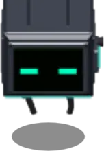
The player
a floating cube · 3 hits · a class after the tutorial
The body, walking and the lamp
A black cube with a green visor, floating on four cables, drawn from baked 3D sheets (img/hd/player.png). Class gear swaps the sheet (Stations and perks). It has no facing and is never stunned.
Walking. Tap the floor to walk there along a path through the doors, at the walking speed × classStat("playerSpeed"). Walls hold you. You start at the Crystal + (2, 1).
The lamp. In the blackout, your monitor lamp lights the room you are in: full within its core, fading to nothing at its reach (× classStat("lampReach")). A power cell overcharges it, wider and brighter, for 3600 frames × classStat("boostFrames").
What
Value
Code
Walking speed
0.13 tiles/frame (7.8 tiles/s)
js/facilityplay.js:19
Walking speed on the spider mech
0.182 tiles/frame
js/classes.js:36
Lamp reach
4.8 tiles
js/facilitytutorial.js:20
Lamp: full-bright core
0.8 tiles
js/facilitytutorial.js:20
Lamp brightness (a dim light)
0.55
js/facilitytutorial.js:20
Lamp reach, a Technomancer with both perks
7.8 tiles
js/classes.js:36-37
Overcharge: reach / brightness
×1.45 / ×1.55
js/facilitytutorial.js:21
Overcharge from one power cell
3600 frames (60 s)
js/inventory.js:34 (literal)
Start position
Crystal + (2, 1) tiles
js/facilityplay.js:259 (literal)
Where it lives: js/facilityplay.jsfacilityPlayerStep · js/hdsprites.jsdrawHdPlayer · js/facilitytutorial.js_fpLampAt
Decisions
“Do not redesign established character or enemy appearances”The brief · docs/MUTATOR.md:77, docs/TECHNOMANCER.md:65
Open / not built
The lamp is a circle, not a cone: the player has no facing (docs/TUTORIAL.md, phase 2).
Hits, damage and the knockdown
Health is a count of hits, not hit points: a bar in thirds at the top of the screen (top left on a tablet), green, then yellow, then red.
Every hit takes one, however hard, and nothing lands during the grace after it. A creature's hit also knocks you back from it, stops your walk and shows HIT · n LEFT.
Only a creature's bite and burning ground hurt you; shots and specials never do. Nothing heals you: your hits come back all at once at a knockdown, a new game or a reload.
A creature turns on you when:
you hit it (within its revenge range, even through walls) or touch it;
in a fight (an alarm up, or provoked), you are close, or weak and within its sense range;
calm, you are weak and within its notice range.
For you, "weak" means one hit left. Your weakness weighs more than a unit's, so a weak player is its first choice.
The bite comes in two beats. It chases you round the walls, rears back under a telegraph (a ring and BITE), then bites if you are still in reach. Step out during the wind-up and it misses: DODGED. Past its leash it lets you go.
The knockdown, on the frame after your last hit: you are put at the Crystal + (2, 0) with all your hits, immune for the knockdown grace and still in control (◈ KNOCKED BACK TO THE CRYSTAL). Nothing else changes.
In fire you lose a hit every 60 frames: it burns every 30, and the grace blocks every other tick. That is about 2 s from the first hit to a knockdown (measured).
What
Value
Code
Hits
3
js/config.js:208
Grace after a hit
60 frames (1 s)
js/config.js:209
Grace after a knockdown
90 frames (1.5 s)
js/config.js:198
Knockback per hit
0.7 tiles
js/config.js:298
Touch range that turns a creature on you
0.9 tiles
js/config.js:297
Creatures may hurt the player
true
js/config.js:296
Bite wind-up (your dodge window)
18 frames (0.3 s)
js/combat.js:8
Bite reach
1.5 tiles
js/combat.js:8
Rest between bites
45 frames
js/combat.js:8
A creature picks its prey every
12 frames
js/combat.js:22
Revenge range (the one that hit it)
12 tiles
js/combat.js:22
In a fight: anything this close
2.5 tiles
js/combat.js:22
In a fight: anything weak within (sense)
6 tiles
js/combat.js:22
"Weak" in a fight (player: 1 hit left)
50% of health
js/combat.js:22
Calm: notices the weak within
3 tiles
js/combat.js:22
"Weak" to a calm creature (player: 1 hit left)
34% of health
js/combat.js:22
Weight of weakness: player / unit
×2 / ×1.2
js/combat.js:22
Leash: prey let go beyond
13 tiles
js/combat.js:22
Knockdown spot
Crystal + (2, 0) tiles
js/game.js:606 (literal)
Where it lives: js/helpers.jshurtPlayer · js/game.js (the knockdown) · js/predator.jspredatorPickPrey, bite · js/combat.jsCOMBAT
Decisions
“the main character can only get hit three times by an insect or a predator, then they get knocked back to the Crystal and it resets to three.”REPORTED · js/config.js:201 · commit f8495d5
“They should turn to hit you if you're super close, and they won't shoot at you. If you brush up against them or they walk up to you, they hit you — and you get knocked back a little after each hit.”REPORTED · js/config.js:285
“It feels like I'm invulnerable if I'm really trying, the different predators will have more attacks with cool downs later but they should feel more dangerous, make them target you if you are weak especially. They should target weak targets and the player has a health bar too. They should also target you if you attack them.”ASKED · docs/COMBAT.md:60 · commit e84f35d
Open / not built
“more attacks with cool downs later”: today only the bite reaches you.
The prey and bite numbers are “a first pass and not balance” (docs/COMBAT.md §4).
The ultimate: ARMY SURGE
One bar under your health, the same for every class, filled from your squad and spent on it. No class has an ultimate of its own.
Each follower or clone within siphon range sends a wisp every interval, which lands with its charge. The bar does not fill during a surge, when full, or with the ⌁ switch off (nobody in range: NO SQUAD IN RANGE).
A tap on the full bar fires ARMY SURGE: every follower and clone, anywhere, is healed, its will refilled and its own ultimate charged, and hits harder for the surge's length. Not your shots, and not you.
What
Value
Code
Bar size
100
js/config.js:307
Surge length
600 frames (10 s)
js/config.js:308
Surge damage (followers and clones)
×1.6
js/config.js:309
Siphon range
6 tiles
js/config.js:321
A unit's wisp, every
120 frames
js/config.js:322
Wisp travel time
34 frames
js/config.js:323
Charge per wisp
0.7
js/config.js:324
To fill it with the squad of three in range
5720 frames (≈ 95 s)
derived
Where it lives: js/helpers.jsfireArmySurge, siphonTick · js/game.js (the bar)
Open / not built
Class ultimates (BULLET STORM, STATIC STORM, WILDFIRE and the rest) are a plan, not code (docs/PLAYER-CLASSES.md §2, §5): “the same bar […]; a class only chooses what tapping it does”.
The three classes
Classes are data (CLASSES): a fourth class is one more row. Each has a name, colour, tagline, blurb, start kit, skills and, for two of them, its own weapon. The code reads two skills, repair (relays) and bio (cloning). Nothing reads tactical, tech or rooms.
Carry, don't use. Any class may carry another's gear but not use it (CLASS_RULES). The pack shows it LOCKED: ONLY A … CAN USE THIS, or before you have a class, CLASSES COME AFTER THE TUTORIAL.
Perks and rank. Each class has 2 perks, earned at its stations. Rank is 1 + perks, so at most 3. A perk counts only while its class is yours (classHas, classStat) but stays earned (classOwns: the mech bay stays built).
Gunslinger
Technomancer
Mutator
Code
Colour
#ffb347
#31e8ff
#c06bff
js/classes.js:11-19
Start kit (the first time only)
1 flare
1 power cell
1 mutagen sample
js/classes.js:13-19
Own weapon
none: the service gun, and the machine gun its perk gives
gauntlet: the ARC GAUNTLET (hybrid)
lash: the TENTACLE LASH (melee)
js/classes.js:16-19
Class cases (arrive when first chosen)
2 cases: 2 flares each (Armory)
3 cases: 2 × 2 mech legs (Teleport Room 1), the mech core (Show Room)
LAB COAT AND GOGGLES (the walk through the lab), SEQUENCED SAMPLES (sequencer)
js/classes.js:33-40
Own resource
none
the gauntlet's charge
DNA, the one clone, serum, the Mutator level
Relay repair
relay kit + 2 power cells, 300 frames
1 power cell, 100 frames, starts by itself
as the Gunslinger
js/classes.js:28
Stage after the tutorial
4 steps
4 steps
5 steps
js/tutorial.js:51-77
Where it lives: js/classes.jsCLASSES, CLASS_RULES, CLASS_PERKS, classStat · js/tutorial.jsTUT_CLASS_STAGES
Decisions
“Make a clear path to add player classes and class specific ultimates and perks like a character progression system, and make way for follower evolution attack move selection, and add niche attacks that only specific playable character classes have access to.”ASKED · docs/PLAYER-CLASSES.md:3
“When is the class chosen? When the tutorial is finished (built: the picker opens then, once), and switchable at the Crystal afterwards; each class keeps its own level and perks.”
“Progression is permanent (saved with the facility game), with a free respec at the Crystal.”
“Move choice is per follower, plus a squad setter”
“Class moves work only while you are that class”
“Preserve the Gunslinger implementation.”The brief · docs/BRIEF-REPORT.md:29
Open / not built
Not in the code (docs/PLAYER-CLASSES.md §5): classHook, COMMANDER and the six planned classes, player XP and levels 1–20, perk points and trees (3 branches × 4 tiers), the CLASS panel, the respec, class-only follower moves (evoMoveAllowed supports them; no move has one), gun mods.
classStat hooks read but set by no perk: shotDamage, shotCooldown, technoCharge, lashReach.
The first choice, on an iPad: a card for each class (blurb, YOU START WITH ×1, SELECT). It cannot be closed until a class is chosen.
Opening. The picker opens when the tutorial ends (◈ TUTORIAL COMPLETE), and again on loading a game saved at it. ?class=<id> picks a class at the start, for development.
Cards. Your class: CURRENT, with no SELECT. A class you have been: YOUR PROGRESS (RANK n · d/N OBJECTIVES). One you have not: what it starts with.
Confirmation. Every pick asks first, BECOME A …? or SWITCH TO …?, and says what you get: your kit and cases, or IT PICKS UP WHERE IT LEFT OFF. Answer CONFIRM or BACK; a tap off the box, or Escape, is BACK. The first choice cannot be closed. A switch can (CLOSE, a tap outside, Escape).
SWITCH CLASS is in the pack once you have a class: free, any time.
A switch. The class you leave:
keeps the weapon in hand and its stage (step, counts, its own kills and relays);
if it is the Mutator, its clone leaves the fight (no body, nothing recovered).
The class you take:
gets its start kit and cases the first time only;
resumes its stage;
takes up the weapon it last held, else its own, else the one in hand if allowed, else the service gun; never another class's own weapon;
if it is the Mutator, gets its clone back as it was.
Shared by every class: the pack, shards, DNA, scrap, weapon levels, the laser rifle, followers, relays, the gauntlet's charges and the lab's stock.
Each class's stage
Then the objective plate runs the class's stage, starting with GET YOUR GEAR, counted from when it begins. A stray step puts a training ant near you, replaced if killed and removed unpaid at the end.
Class
Steps (done when …)
Gunslinger
1 GET YOUR GEAR (classHas("machinegun"): the Armory locker) · 2 SWEEP THE CAMERAS (classHas("cctv")) · 3 LIGHT A FLARE · 4 HUNT IN THE ARENA (3 kills since the stage began, by anyone)
Technomancer
1 GET YOUR GEAR (classHas("mech")) · 2 RESTORE ANOTHER RELAY (one more online, or all are) · 3 CHARGE YOUR GAUNTLET (3 punches that land, stray) · 4 THROW THE ARC (2 arcs, stray)
Mutator
1 GET YOUR GEAR (classHas("labcoat")) · 2 GROW YOUR CLONE · 3 UPGRADE YOUR CLONE (one rank) · 4 FIGHT BESIDE IT (3 lashes that land, stray) · 5 SPLASH A SERUM
What
Value
Code
Tutorial objectives before the picker
7
js/tutorial.js:27-40
Training ant: level / health
3 / 400
js/tutorial.js:50
Training ant replaced up to (per step)
6 times
js/tutorial.js:50
Kills / punches / arcs / lashes to do
3 / 3 / 2 / 3
js/tutorial.js:57-74 (literal)
Picker cards side by side from
760 px wide
js/classes.js:116 (literal)
Where it lives: js/classes.jsdrawClassPicker, classChoose, classSet, _classWeaponFor · js/tutorial.jstutClassStash, tutClassResume, tutClassTick · js/facilitytutorial.jsfacilityClassItemsEnter
Decisions
“Make it to where whenever you're selecting a class, make it to where there's a confirmation.” “Also make a way for the player to be able to switch classes whenever they want to. But their progression in it will be that the current progression of that class, and the progression saves throughout until the crystal is destroyed.”ASKED · docs/TUTORIAL.md:324 · commit 531ad6a
Chosen with the user: the switch is in the pack; the Mutator's clone waits for it.
“Each class should have its own tutorial stage after the initial tutorial.” “Integrate each class into its tutorial progression and test the full loops.”ASKED · docs/TUTORIAL.md:120 · commit 11a835a
Open / not built
The respec (docs/PLAYER-CLASSES.md §8.2) is not built; §8.1's switch “at the Crystal” became the pack's.
“The Gunslinger's gear objective overflows the objective plate” (docs/BRIEF-REPORT.md:112; not re-checked).
Gunslinger
Weapons, ammunition and tactical gear. No weapon of its own: the service gun, the machine gun or the laser rifle.
The machine gun, taken once from the Armory's weapon locker (equipped, plus 4 ammo packs), is the Gunslinger's alone. In hand it is drawn on you: carried low, raised level when armed, firing frames after each shot, turned to the lock. The laser rifle is drawn the same way.
CCTV sweeps (the Security console) mark every hostile in the facility for 1500 frames (25 s), with arrows to those off screen.
Flares light the floor round you, in your room, whatever the power.
What
Value
Code
Flare light radius
6.5 tiles
js/facilitytutorial.js:22
A flare burns for
1800 frames (30 s)
js/facilitytutorial.js:22
Flare brightness
0.9
js/facilitytutorial.js:22
Firing frames shown after a shot
14 frames
js/playergear.js:12
Where it lives: js/stations.jsweapon_locker, cctv · js/playergear.js · js/facilitytutorial.jsfacilityFlare
Technomancer: the arc gauntlet
Hybrid melee and ranged, tied to the power. The ARC GAUNTLET punches, and every punch that lands stores a charge. A charge throws an electric arc, and powered rooms recharge the gauntlet.
A click (technoAttack, through the dial):
in reach, or with a punch winding up: a punch;
out of reach, with a charge, within arc range and in sight: an arc;
otherwise you walk in to punch.
The punch is the Mutator's melee: walk in, wind up, hit. It deals electric damage, so the element wheel applies. A slip is a MISS.
The arc hits at once for punch × multiplier × (1 + bonus × relays online), then jumps to the nearest creature within jump reach of the last, for a share. It never jumps to your side, a recruit or you. A creature it hits while rearing to bite loses the bite (INTERRUPTED) and cannot rear again for a while. It costs a charge, then a rest; you stay put.
The grid. In a powered room, a charge comes every interval until full (the pill: n/6 · GRID). It repairs relays with one cell, starting by itself, and the charger gives it a cell.
What
Value
Code
One punch every (wind-up + rest)
36 frames (1.67/s)
js/mutator.js:182
Punch damage per second
23.3
derived
Most charges
6
js/technomancer.js:18
Charge per punch that lands
1
js/technomancer.js:18
Grid: a charge every
120 frames (2 s)
js/technomancer.js:18
Arc damage, no relay online
18.2
js/technomancer.js:44
Arc damage, all 6 relays online
29.1
js/technomancer.js:44
Arc multiplier over the punch
×1.3
js/technomancer.js:21
Arc bonus per relay online
+10%
js/technomancer.js:21
Arc range
8 tiles
js/technomancer.js:21
Rest after an arc
30 frames
js/technomancer.js:21
Extra jumps
2
js/technomancer.js:21
Jump reach
2.6 tiles
js/technomancer.js:21
A jump's share of the damage
60%
js/technomancer.js:21
No new bite after an interrupt for
30 frames
js/technomancer.js:21
Where it lives: js/technomancer.jstechnoAttack, technoArc, technoTick · js/mutator.js (the shared melee) · js/stations.js (the auto-start)
Decisions
“Technomancer: hybrid melee and ranged combatant. Uses technological and electrical abilities. Melee combat and ranged electrical attacks should complement one another. Also has a technological relationship with the facility's power network and infrastructure. Implement this class after the Mutator.”The brief · docs/TECHNOMANCER.md:5
Awaiting confirmation (docs/TECHNOMANCER.md §4): the gauntlet is a weapon in hand on the same dial; one charge links melee and ranged; the arc cuts a bite short; "power network" means the grid and the relay bonus; the arc jumps only to creatures; no scrap levels.
Open / not built
“Further Technomancer abilities (deployables, turrets, taking over the facility's systems)” were not built (docs/TECHNOMANCER.md:119).
Every TECHNO number is “a knob, not a decision”.
Mutator: the lash, the one clone, DNA and serum
A melee summoner: the TENTACLE LASH, one primary clone grown and upgraded with DNA, healing serum from its laboratory, and a level raised by experiments.
The lash
Aimed through the dial. In reach it strikes in two beats, a draw-back then the lash; a creature that slipped further than reach + slack is a MISS. Out of reach, you walk to 0.7 × reach from it (straight if in sight, else round the walls).
A click is one strike; holding keeps striking until you let go. A floor tap or stowing calls it off. It spends nothing (MELEE, a tentacle badge). The Mutator may still equip the guns.
What
Value
Code
Wind-up
9 frames
js/mutator.js:17
One lash every (wind-up + rest)
43 frames (1.4/s)
js/mutator.js:182
Damage per second
25.1
derived
Slip still hit (slack)
0.3 tiles
js/mutator.js:17
Walk-in re-planned every
12 frames
js/mutator.js:17
The one clone
Who clones. Only the Mutator, one clone at a time, and that clone is primary (CLASS_RULES.clone). Anyone else is told ONLY A MUTATOR GROWS CLONES. Take the skill out of the rule and every class clones again, with the old cap and clones returning at the Crystal.
Growing one costs splices of that species and class, plus shards. It comes out at the Crystal at the arena's level, tougher and stronger than its species, and fights as its species does (a two-beat bite, its special, a striker's or tank's shot). It follows you and takes the squad's orders.
Upgrades are a table, one row per upgrade, bought at the Clone Bay, which becomes your clone's panel while it is out. They cost any DNA, from the largest splice stocks first (dnaSpend). The clone keeps what it cost (invested).
Fallen, it does not come back. Its body stays where it fell, with kind, level, upgrades and cost (ITS n UPGRADES ARE LOST). To get part of the cost back as its own splices:
SALVAGE DNA: long-press the body (you walk there first);
RELEASE: two taps at the bay, which leaves no body.
Either returns the recover share of invested, rounded down. A body is salvaged or preserved, not both.
Switching away takes it out of the fight; it comes back as it was, not healed.
POUNCE (the leap upgrade): the clone crouches, leaps onto a creature in sight beyond its bite reach + 0.6 tiles and within its pounce range, bites on landing, then rests. It never pounces while told to RETREAT.
What
Value
Code
Clones at once: the Mutator / the old rule
1 / 4
js/classes.js:29, js/clone.js:19
Clone health / power over its species
×4 / ×1.5
js/config.js:242-243
Its level at birth (the arena's)
5
js/levels.js:71
Example: an ant scout clone's health at level 5
240
js/clone.js:123
Splices to grow: ant · beetle · mantis
3 · 5 · 8
js/species.js:198-205
Splices to grow: scorpion · spider · moth
8 · 10 · 12
js/species.js:198-205
Shards: an ant scout (cheapest) / a moth tank (dearest)
5 / 19
js/species.js:210-215
Shard price floor / ceiling
5 / 25
js/species.js:192-193
Recovered on salvage or release
40% of invested
js/mutator.js:21
Example: a clone that cost 11 DNA gives back
4
js/mutator.js:143
A body lies for (0: until dealt with)
0
js/mutator.js:18
Work on a body within / its plate says more within
2.2 / 2.4 tiles
js/mutator.js:18
Pounce: crouch / flight
14 / 22 frames
js/mutator.js:24
Pounce: bite / rest
×1.2 power / 300 frames
js/mutator.js:24
RELEASE: the second tap within
150 frames
js/mutator.js:106 (literal)
Upgrade
Ranks
DNA per rank
Each rank
Code
ARMOR PLATING
3
4 / 7 / 10
+25% health
js/mutator.js:49
SERRATED ARMS
3
4 / 7 / 10
+25% power (bite, special, shot)
js/mutator.js:50
POUNCE
2
5 / 8
+2.5 tiles of leap: a jumping attack; a scout's escape leap goes further too
js/mutator.js:51
LONG REACH
2
4 / 7
+0.35 tiles of bite reach
js/mutator.js:52
All of them, every rank
66 DNA
ARMOR 3: ×1.75 health · LONG REACH 2: 2.2 tiles · POUNCE 2: a 6.5-tile pounce
js/mutator.js:48-71
The Mutator level, the serum and the laboratory
The level. Every DNA the Mutator spends on biology (a clone, an upgrade, a serum) is an experiment point. Only a Mutator gains points. Today the level only raises the lab's yield.
The serum is the Mutator's to use. Use it from the pack, the SERUM pill or Q: it splashes a pool where you stand that heals each follower and clone in it a share of its max health per tick (a green ring, +n). It never heals creatures, or you.
The laboratory (the Experiment Lab's SERUM HOOD) makes base + per level × (level − 1) serums every round, carrying fractions over, up to its cap. It works only while you are the Mutator; as another class its round restarts. COLLECT takes what is waiting, as far as the pack has room. With none waiting, CRAFT makes one for DNA, which also counts as experiment points.
What
Value
Code
Mutator levels
10
js/mutator.js:27
Experiment points for level 2 / level 10
10 / 320
js/mutator.js:27
Pool radius
2.6 tiles
js/serum.js:16
Pool lasts
300 frames (5 s)
js/serum.js:16
Pool heals every / how much
30 frames / 6% of max
js/serum.js:16
One pool heals in all
60% of max
derived
Laboratory makes serum every
3600 frames (60 s)
js/serum.js:17
Yield: base / per level above 1
1 / 0.25
js/serum.js:17
Yield at level 10
3.25 per round
js/serum.js:51
Serums waiting, at most
5
js/serum.js:17
Crafting one
5 DNA
js/serum.js:18
Where it lives: js/mutator.js (the lash, CLONE_UPGRADES, dnaSpend, the bodies, the level) · js/clone.jsexecuteClone, makeClone, cloneFight · js/species.jsCLONE_COSTS · js/serum.js
Decisions
“Mutator: melee-focused summoner and biological specialist. Fights alongside a single primary cloned creature. Uses DNA to create clones, purchase clone upgrades, and craft healing serums.” “The Mutator can create a clone based on the enemy species encountered in the game. Clones should use the established designs and characteristics of their corresponding enemy species. The Mutator normally has only one active primary clone. […] If the clone dies, its accumulated upgrades are lost and a replacement must be created.”The brief · docs/MUTATOR.md:5 · commit 9601b03
“Support upgrades such as: armor plating for improved durability; serrated arms for stronger melee attacks; a longer leap or jumping attack; increased attack radius. Keep the upgrade system data-driven so additional modifications can be added without rewriting the clone system. The exact DNA costs and numerical effects have not yet been finalized. Make these configurable.”ASKED · js/mutator.js:40 · commit 79a9239
“rebuilding repeatedly from scratch should leave the player less effective than successfully maintaining and upgrading a clone”The brief · docs/MUTATOR.md:114
“The Mutator can craft healing serums that are splashed onto the ground. Each serum creates an area-of-effect healing zone. Eligible allies within the splash zone receive healing. Healing should be visually readable and clearly communicate which units are being affected.” “The Mutator has a laboratory where serum becomes available over time. Serum replenishes at configurable 60-second intervals. Higher Mutator levels increase the amount of serum generated automatically. DNA can also be spent whenever the player crafts a serum. The automatic supply and DNA crafting systems should work together.” “Do not assume that automatic production eliminates the DNA crafting cost or silently choose a final resource formula. Expose the relevant rules for balancing.”The brief · js/serum.js:4 · commit 560a2a3
“Do not silently finalize tentative DNA costs or balance values.”The brief · docs/BRIEF-REPORT.md:90
Tentative targets: “approximately five DNA” a serum; a clone for “DNA equivalent to roughly two or three enemy kills”. Awaiting confirmation (docs/MUTATOR.md §4): only the Mutator clones; clone power ×1.5; the Mutator keeps the guns; a clone keeps after its target while rearing; upgrades and serum cost any DNA; RELEASE returns what salvage does; POUNCE is "a longer leap" and reach "attack radius"; salvage is a ring order; the serum splashes where you stand; the lab is the fume hood; the level comes from experiments; the serum heals followers and clones only.
Open / not built
What else the level unlocks is “a decision for later” (docs/MUTATOR.md:146). A thrown serum is not built. Every number is tentative.
Not changed (docs/BRIEF-REPORT.md:110-111): “Spiders web a clone that chases them.” “A creature walking to the Crystal turns only on what bites it.”
The Ice Mage and the Resurrection Zone (not a class)
Not a class: an Ice Mage is a follower of ice with the mage role ("sniper"), or an evolved form of one (the RIMESTAR). The Show Room's egg is one. It freezes a fallen ally's body into a capsule; you carry the capsule to the Crystal and restore it. Any class can do this.
Bodies: the Mutator's fallen clone, and a follower lost for good (its HP stat run out). One that comes back at the Crystal leaves none.
Long-press the body: PRESERVE, or PRESERVE · NO ICE MAGE. A follower's body has no SALVAGE.
Preserving: you walk to it, and the nearest Ice Mage comes and freezes it (PRESERVING). If the mage dies first, nothing is preserved.
The capsule: walk over it and it goes into your pack, if there is room. The mage never carries it.
The Resurrection Zone, round the Crystal, is ringed while you carry a capsule. In it, RESTORE: … (tap, E, or the pack's USE) brings back the first capsule's specimen:
a clone as the Mutator's clone; refused, capsule kept, if a clone is already out;
a follower from its record, at full health.
What
Value
Code
Ice Mage: element / role
ice / sniper
js/specimen.js:18
Ice Mage within (of the body)
14 tiles
js/specimen.js:18
Freezing takes
120 frames (2 s)
js/specimen.js:19
The mage works from / its walk is reset every
2 tiles / 30 frames
js/specimen.js:19
Walk over a capsule within
0.9 tiles
js/specimen.js:20
Resurrection Zone: round the Crystal within
2.6 tiles
js/specimen.js:21
Where it lives: js/specimen.jscloneBodyAct, specimenTick, specimenRestore · js/mutator.jscloneBodies
Decisions
“A special Ice Mage follower can preserve fallen allied creatures for resurrection.” […] “The main character handles the capsule; do not make the Ice Mage carry it.” “Preserve the distinction between recovering a body and completing its resurrection.” “Do not invent additional recovery rules or penalties without approval.”The brief · docs/SPECIMENS.md:5-7 · commit ba2efa8
Readings awaiting confirmation (docs/SPECIMENS.md:51-55): the Resurrection Zone is the Crystal; the bodies are a follower lost for good and the Mutator's clone; any ice mage follower is an Ice Mage ("a special Ice Mage" could mean a unique one); a specimen comes back as it was; preserving costs only the mage's time.
Stations and perks
A station is a prop you use: press E beside it, tap its plate, or tap it (you walk there). Class stations earn perks. Before you have a class they show no ring; another class's station is dim, refuses, and says whose it is. A signature perk changes your look: the mech or coat replaces your sheet, over any gun in hand.
Station (room)
Who
What it does
Perk
Code
WEAPON LOCKER (Armory)
Gunslinger
once: equips the machine gun and gives 4 ammo packs (literal)
MACHINE GUN (signature)
js/stations.js:16
SECURITY CONSOLE (Security Room)
Gunslinger
a CCTV sweep, ready again 3600 frames (60 s) after it starts
CCTV SWEEPS
js/stations.js:20
MECH BAY (Show Room)
Technomancer
once: a 420-frame (7 s) build from 4 mech legs and 1 core, paid at the end; walk away and it stops, nothing spent
SPIDER MECH (signature): speed ×1.4, lamp ×1.3
js/stations.js:27
TUNING CONSOLE (Teleport Room 1)
Technomancer
once
TUNED LAMP: lamp ×1.25, overcharge ×1.5
js/stations.js:22
SEQUENCER (Experiment Lab)
Mutator
once, for 1 mutagen sample
SEQUENCED SAMPLES: a sample gives +1 level
js/stations.js:24
The walk: Teleport Room 1 → passage → Experiment Lab (3 rooms, in order; a different room starts it again)
Mutator
not a station: the coat goes on when you finish the walk
LAB COAT AND GOGGLES (signature): a sample gives +1 level
js/playergear.js:39
SERUM HOOD (Experiment Lab)
Mutator
COLLECT or CRAFT serum
none
js/stations.js:30
ARMORY TERMINAL (Armory)
anyone
the weapon bench; needs the Armory relay online
none
js/stations.js:19
CHARGING STATION (Main Hallway)
anyone
with the hallway relay on: fills the gun, +1 power cell for a Technomancer; ready again after 5400 frames (90 s)
none
js/stations.js:34
POWER RELAY × 6
anyone
repair (see the classes); walk away and it stops; paid at the end
none
js/stations.js:174
What
Value
Code
Use range
1.8 tiles
js/stations.js:37
Still usable up to (range + 0.6)
2.4 tiles
js/stations.js:72 (literal)
Stations on the map, relays included
14
js/facilitymap.js:409-428
A CCTV sweep marks enemies for
1500 frames (25 s)
js/stations.js:21 (literal)
Where it lives: js/stations.jsSTATION_KINDS, stationCan, stationUse, relayPlan · js/facilitymap.jsstations · js/playergear.jsfacilityGearTick
Open / not built
No perks beyond these: perk trees are a plan (docs/PLAYER-CLASSES.md §4).
The pack before anything is found: its tabs, the item list on the left, the item's page on the right. SWITCH CLASS joins the title row once you have a class.
One inventory, playerInv, shared by every class and built from the ITEMS table. Open it with I or the dock's PACK. Each item has a page with USE and INSPECT (lore and stats).
Getting items. Walk over a case to take all it holds; a case that won't fit stays (YOUR PACK IS FULL OF THAT). Cases come from the tutorial (ammo, cells, the relay kit), from a class when first chosen, and with the Lobby relay (fuel cells). Creatures drop scrap.
Using items. USE checks the class rule, then the item. A consumable is used up only if it worked. A tool never is (a capsule is removed by its restore). A component says where it goes.
Item
Tab · type
Stack
Who uses it
What USE does
Code
AMMO PACK
gear · consumable
9
anyone
+10 rounds (literal), up to the most the gun holds; refused when full
js/inventory.js:20
FLARE
gear · consumable
6
Gunslinger
lights the floor round you (see the Gunslinger)
js/inventory.js:25
POWER CELL
part · component
6
Technomancer
overcharges the lamp; relays spend cells whoever repairs them
js/inventory.js:30
MUTAGEN SAMPLE
sample · consumable
6
Mutator
the nearest follower within 8 tiles (literal), below the level cap, gains 1 level + the perks' (3 at most), and may evolve
js/inventory.js:35
RELAY KIT
tool · tool
1
anyone
at a broken relay: starts the kit repair
js/inventory.js:40
MECH LEG / MECH CORE
part · component
4 / 1
Technomancer
built into the spider mech at the mech bay
js/inventory.js:45-54
SCRAP METAL
part · component
30
anyone
spent at the Armory terminal
js/inventory.js:55
FUEL CELL
part · component
6
anyone
the laser rifle loads it by itself
js/inventory.js:60
HEALING SERUM
sample · consumable
5
Mutator
splashes a healing pool where you stand
js/inventory.js:66
SPECIMEN CAPSULE
sample · tool
3
anyone
restores its specimen in the Resurrection Zone
js/inventory.js:72
ROCK
part · component
9
anyone
none yet (from the drilled rubble)
js/inventory.js:78
What
Value
Code
Item kinds / tabs
12 / 5
js/inventory.js:16, 84
Walk over a case within
1.25 tiles
js/facilitytutorial.js:161
Power cells in the cases (not the class cases)
10
js/facilitymap.js:343-374
Fuel-cell cases, 2 cells each (arrive with the Lobby relay)
3
js/facilitymap.js:349-351
A message stays in the pack for
150 frames
js/inventory.js:117 (literal)
Two columns from
720 px wide
js/inventory.js:195 (literal)
Where it lives: js/inventory.jsITEMS, invAdd, invUse, drawInvPanel · js/facilitytutorial.jsfacilityPickupTick · js/facilitymap.jspickups
Decisions
No owner quote for the pack. Its rule, carry anything but use only your own (js/classes.js:9), stood when switching came in: “Shared, as before: the pack (any class carries anyone's gear; using it is the class's)” (docs/TUTORIAL.md:334).
Weapons, ammunition and the Armory terminal
One weapon in hand, from the WEAPONS table. By kind: ammo fires a round, fuel a beam, melee strikes in reach, hybrid punches or arcs.
Weapon
Kind · who has it
Damage
Rest
Damage/s
Reach
Upgrade L2 / L3
Code
SERVICE GUN
ammo · everyone
10
45 frames
13.3
—
8 / 16 scrap
js/weapons.js:13
MACHINE GUN
ammo · the Gunslinger, with its perk
8
11 frames
43.6
—
12 / 24 scrap
js/weapons.js:15
LASER RIFLE
fuel · anyone, assembled for 15 scrap
22
28 frames
47.1
12 tiles
14 / 28 scrap
js/weapons.js:17
TENTACLE LASH
melee · the Mutator
18
34 frames + wind-up
25.1
1.45 tiles
none
js/weapons.js:21
ARC GAUNTLET
hybrid, electric · the Technomancer
14
28 frames + 8 wind-up
23.3
1.4 tiles
none
js/weapons.js:25
Rounds come from ammo packs, the charger and the terminal. Empty, a shot says OUT OF AMMO and a hold stops.
A round flies at 0.18 tiles a frame toward where the target stood, for distance / 0.18 + 10 frames, and hits the first hostile within 30 px (Δx × 60, Δy × 30). It carries player.selectedElement, fire by default.
The laser hits at once within its range. Empty, it loads a fuel cell by itself; with none it says NO FUEL CELLS — THE COMPUTER LAB. Its beam runs to min(range, distance + 3) tiles and hits every other hostile within 0.75 tiles of its line for a share.
Melee and hybrid never run dry. Guns have levels 1–3, bought with scrap: more damage and a shorter rest (never under 4 frames). Levels are shared by every class and saved.
The Armory terminal needs the Armory relay on. It lists your class's weapons: Gunslinger or no class, service, machine gun and laser; Technomancer, service, laser and gauntlet; Mutator, service, laser and lash. It offers SCRAP → AMMUNITION (MAKE 1 / MAKE ALL), EQUIP, UPGRADE, and ASSEMBLE (the laser goes into your hand).
Scrap: by chance, a case where a creature died (more from bigger classes), lying there a while. Fuel cells come to the computer lab once its relay is on.
What
Value
Code
The gun holds / starts with
60 / 12 rounds
js/config.js:228-229
Per level above 1: damage / rest
+30% / −12%
js/weapons.js:30
Highest level of a gun
3
js/weapons.js:13
Service gun at level 3: damage / rest
16 / 34 frames
js/weapons.js:46-47
Machine gun's rate over the service gun's
×4.1
derived
Laser: charges per fuel cell
12
js/weapons.js:17
Laser: damage to the others on the beam
60%
js/weapons.js:17
Laser: beam drawn for
10 frames
js/weapons.js:30
Scrap per ammo pack
2
js/weapons.js:30
Rounds per pack, as the terminal says
10
js/weapons.js:30
Scrap drop chance
75%
js/facilityspawn.js:15
Scrap from a scout / striker / tank (a worker: 1)
1 / 2 / 3
js/facilityspawn.js:15
A scrap case lies for
3600 frames (60 s)
js/facilityspawn.js:15
Shortest rest / round speed / round hits within / beam width and overrun
4 frames / 0.18 tiles a frame / 30 px / 0.75 and 3 tiles
Where it lives: js/weapons.jsWEAPONS, weaponRows, weaponConvert, fireLaserShot, the terminal · js/input.jsfirePlayerShot (routes each kind) · js/facilityspawn.jsfacilityScrapDrop
Decisions
No owner quote for the weapons or the terminal (commit 3ef37ec has no message). On kills: ASKED “kills pay directly” (js/drops.js:4).
Open / not built
Gun mods (the Gunmaster, docs/PLAYER-CLASSES.md §3.2).
Firing and the targeting dial
The gun locks on by itself to the nearest creature you can see. A round dial showing it fires at it, and a tap on another creature switches the lock. The same dial drives the lash, the punch and the arc.
Auto-lock. The nearest creature in range and in sight is locked (a spider lurking at cover is skipped). The gun arms quietly as red corners close in. A creature nearer by the margin takes the lock. An automatic lock drops beyond the keep distance, or out of sight beyond 3 tiles. With nothing in range the gun is put away.
Switching. A tap on another creature locks it, and only locks. A lock you chose holds even if something is nearer, even out of sight, up to the manual keep distance. A press on the locked creature fires: a click is one shot; a hold keeps firing at the enemy under your finger, else the locked one. Neither starts a ring or a walk.
The dial sits bottom right on a tablet or desktop, over the enemy card; on a phone, top left. It shows:
the creature in a ring that is its health, and LV n;
a weapon badge (pistol, tentacle or bolt): red while held, amber while cycling, grey when dry;
INFO, for a card with its level, class, element, health, bite and speed.
A click is a shot, kept until the weapon is ready; a hold keeps firing at the lock.
The ammunition pill beside it shows a count (or a fuel cell, MELEE, n/6), red when empty. A tap on it while armed stows the weapon and stands down until nothing is in range or you tap a creature.
Long-press a creature for ATTACK (arm, lock and fire) or STOW, and INFO.
What
Value
Code
Auto-lock range
9 tiles
js/targeting.js:14
Automatic lock dropped beyond (keep)
12 tiles
js/targeting.js:14
A lock you chose holds up to (manual keep)
18 tiles
js/targeting.js:14
The lock is checked every
8 frames
js/targeting.js:14
Takes the lock over if nearer by (margin)
1.6 tiles
js/targeting.js:14
Dial pops in / corners close in over
12 / 24 frames
js/targeting.js:14
Tap on a creature within
45 px
js/input.js:28
A press counts as on the locked creature within
90 px
js/gunfire.js:11
A click while cycling is kept for at least
30 frames
js/gunfire.js:11
Long press
500 ms
js/config.js:119
Dial radius (a phone under 600 px wide)
52 px (40 px)
js/targeting.js:173 (literal)
Where it lives: js/targeting.js_targetLockTick, targetPress, _tgDialDraw · js/gunfire.jsgunPress, gunTick · js/input.js (the pointer) · js/commands.js (the ring)
Decisions
“click on an enemy, and once you click attack on it, then you can click it as many times as you want to shoot it. Or hold down to fire repeatedly.”ASKED · js/gunfire.js:4 · commit 592b035
“whenever you get close to an enemy, it automatically takes aim […] a little circular menu that shows the creature that you're nearest, and it pops up, and you can hold it or click it to shoot. It also comes with an info button and a little icon that shows a little gun that indicates that you're going to shoot it. […] and how it automatically locks on to the nearest creature, have it so you can switch it by clicking on another creature.”ASKED · js/targeting.js:4 · commit 6da6ecc
“move the information where it says ammo or armed up where the old little index UI shows up for the predators […] make it subtle, like an icon with ammo and have a number on it”ASKED · docs/TUTORIAL.md:231 · commit 0666312
“This is the correct direction for this hud, all parts”ASKED (the HUD in corners, which puts the dial bottom right) · docs/TUTORIAL.md:273 · commit 70ffb26
Burning ground (fire bombs)
You don't throw fire bombs: fire followers do (their special, and the FIRE BOMBS move). A bomb's landing splash hurts only hostiles. The ground it sets alight hurts everyone standing on it, every burn tick: creatures, followers, and you. For you, a tick is one hit with no source (no knockback), and the grace limits it to one a second. A tile burns between its minimum and maximum, fading at the end.
What
Value
Code
Burn tick
30 frames
js/firebombs.js:19
A tile burns for (min / max)
600 / 900 frames (10–15 s)
js/firebombs.js:17
Fade at the end
60 frames
js/firebombs.js:18
Landing splash (hostiles only)
0.95 tiles
js/firebombs.js:21
Ground bounces before a bomb bursts
3
js/firebombs.js:14
Most tiles burning at once
160
js/firebombs.js:20
Where it lives: js/firebombs.jsigniteFireTile, fireBombsTick
Decisions
“The fire element is mostly about little fire bombs that actually use projectile geometry and bounce off walls and off the ground a few times, perhaps as a special ability. […] the fireballs burn the ground where they land. If you get touched by that fire you take a little hit of damage, like the other hazards on the map. The hazard stays on the map for 10 or 15 seconds.”ASKED · docs/FIRE-BOMBS.md:3 · commit 431461c
Decisions (answered), docs/FIRE-BOMBS.md:32-33: “Who is hurt by the fire on the ground? Everyone: enemies, your followers and you.” “What throws bombs? Fire followers: their special, and the FIRE BOMBS move of the evolved fire forms. There are no fire turrets and no aim ring.”
Open / not built
“the tuning and the guide text are what is left” (docs/FIRE-BOMBS.md:5).
What of you is saved
One local-storage key, written every few seconds and when the page is hidden or closed. NEW GAME throws it away and reloads.
Saved: your class and perks; every class you have been, with its last weapon and the Mutator's waiting clone; the pack, rounds and shots fired; the weapon in hand, the laser, the weapon levels and the laser's charge; each class's stage; DNA, the clone with its upgrades and cost, bodies and capsules, the lab, the Mutator's points, the gauntlet's charges; shards; where you stood. Loading sets the class directly, so the start kit is not given again.
Not saved: your hits (a reload gives all three); the ultimate bar; the lock and armed state; the selected element; the lamp's overcharge and flares; the CCTV and charger cooldowns; a repair or build under way; scrap on the floor.
What
Value
Code
Save key
conduit_fp_save
js/facilitysave.js:11
Save version
1
js/facilitysave.js:11
Written every
180 frames (3 s)
js/facilitysave.js:11
Where it lives: js/facilitysave.jsfacilitySaveCollect, facilitySaveApply, with each system's own snapshot
Removed with the strip game (commit 9b7758f): the health pads that gave back a hit, and the ARMED / AMMO chip. The hack puzzle and its gear are parked (docs/PLAYER-CLASSES.md §4.1).
Found while writing this
The charger blocks the cameras for 90 s (CAMERAS RESETTING): stationUse writes every station's cooldown into the one _fp.cctvReadyAt (js/stations.js:79). Measured; looks like a bug.
The save outlives a destroyed Crystal. Close the page without NEW GAME and the run is saved with the Crystal at 0; a reload brings it back at 1 HP with all progress. The ask: progress lasts “until the crystal is destroyed”. Measured.
A knockdown keeps your walk (player.fpPath is not cleared). After a last hit from fire, which has no source, you keep walking from the Crystal toward the old waypoint. A held lash walks you straight back to the creature. Both measured.
The gun's element is player.selectedElement, fire by default. Only a phone's element chips change it, and it is not saved. Arena creatures have no element, so it does nothing today. Intended?
A round can hit the wrong creature: the first hostile it passes, not necessarily the locked one (read, not measured).
The angry face is unreachable: nothing sets player.angryTimer.
The ammo pack's +10 is written twice: inline (js/inventory.js:24) and in WEAPON_RULES.ammoPackRounds, which only the terminal's text reads.
Unread class fields: rooms, and the skills tactical and tech.
Never confirmed: no later quote confirms the builder's proposed decisions (Mutator, Technomancer, specimens).
HUNT IN THE ARENA counts any kill, by anyone, anywhere.
Docs that disagree with the code (the code wins):
docs/PLAYER-CLASSES.md §8 has switching “at the Crystal” and a respec; the code switches from the pack and has no respec.
docs/TUTORIAL.md says “Only five supply cases” in the tutorial; the code has 10.
docs/TUTORIAL.md gives the Technomancer's cases as “cells in Teleport Room 1”; the code has legs and a core.
docs/TUTORIAL.md puts mech legs “in Teleport Room 1 and the passage”; both cases are in Teleport Room 1.
docs/TUTORIAL.md counts “twelve power cells”; the code has 10.
docs/MUTATOR.md §2.3's fallen-clone line says “IT DOES NOT COME BACK”; the code says HOLD ON ITS BODY TO SALVAGE n DNA.
Several docs and hints put “the dial at the top left”; on a tablet it is bottom right.
The js/stations.js header says the locker gives a stronger service rifle; it gives the machine gun.
The js/gunfire.js header gives the shot as “10 damage, the class's rate”.
A js/draw.js comment says the ring's ATTACK is the only way to arm the gun.
The mutagen sample's text says “+2 ONCE SEQUENCED”; the code gives up to +3.
Scrap is said to come from “the arena's creatures”; it drops in any room.
Followers 05
The creatures that fight for you. A follower is one of 6 elements and one of 3 roles, both fixed when it is found. It levels from kills and evolves at level 10 into one of 18 machines, and it has traits, a perk and an ultimate. 3 of them follow you as the squad, and every other follower holds a room. This part has every rule and number for followers: elements, roles, levels, the forms, getting followers, the squad and rooms, the orders, the technicians' six abilities, bonds, traits, ultimates, the cards, and death.
In the code the roles are brawler, sniper (shown as MAGE) and camper (shown as TECHNICIAN); the player sees only the words. A follower that has not evolved is drawn as an egg. Its name on screen is its form's name once evolved (HORNSHELL), else <ELEMENT> <ROLE> (FIRE MAGE), as in its plate Lv 9 FIRE MAGE. Times are frames at 60 fps and distances are tiles; on the iPad, and on any screen wider than 700 px, the HUD is the corners layout and the roster a carousel.
Elements
The element sets the follower's colour, its attacks, its ultimate, its technician ability and its evolved form. It is fixed for life: a pad's egg says it, a recruit draws it, and a re-roll keeps it. Every element is online from the first frame, so there is nothing to unlock.
The wheel is two triangles: FIRE beats FLUX, FLUX beats TOXIC, TOXIC beats FIRE; ELECTRIC beats CORE, CORE beats ICE, ICE beats ELECTRIC. A hit of the element that beats the target's does ×1.3, the reverse ×0.7, and ice on core ×0 (no damage). It applies to every hit, by either side, on anything with an element. A hit's element is the attack's own, else its attacker's, so a mage's shot, a plain hit and a signature move all carry the follower's element; WEAK! or RESIST floats over the target.
A follower's attacks (followerAttack). With at least 1 WILL it uses its element's physical. With at least 4 WILL there is a 15% chance of its special instead; core has no special. With less than 1 WILL it lands a plain hit of 0.25 × attack, and its element still counts. The cooldowns are 45 frames after a plain hit, 40 after a physical and 70 after a special. WILL comes back by 0.005 a frame.
Who uses them: a brawler in striking range, a technician at contact, any role under a POSITION order, and a core technician behind its shield. A mage in its normal behaviour fires a plain shot instead (see Roles).
The six
Element
Colour
Beats / weak to
Physical (1 WILL)
Special (4 WILL)
Proc on the physical
Ultimate
FIRE
#ff3300
flux / toxic
Ring of Fire: 0.4 × attack to every hostile within 1.5 tiles
Fire Bombs: 2 bouncing bombs at the target. Each landing splashes 0.7 × special attack within 0.95 tiles, and the floor burns 10–15 s. Burning floor hurts everyone on it, followers and you too
30%: burning for 120 frames, 0.08 × the hit every 20 frames
Volcanic Eruption
ELECTRIC
#ffee33
core / ice
Chain Lightning: 0.35 × attack, then up to 2 more targets within 3 tiles, −20% a jump
Static Field: 0.7 × special attack to every hostile within 3 tiles
Ice Burst: 0.6 × special attack within 2.5 tiles, and a slow to 40% for 180 frames
8%: frozen (see the end of this part)
Blizzard
FLUX
#9933ff
toxic / fire
Volatility Aura: 0.6 × attack
Singularity: hostiles within 3 tiles of the target are pulled toward it (not beetles or bosses); 0.5 × special attack
15%: disoriented 120 frames; nothing reads its scramble
Disorient
CORE
#00ccaa
ice / electric
Shield Bash: 0.45 × attack; sets defenseBoost 90 frames on itself, which nothing reads
none
30%: knockback (0.22 tiles a frame, ×0.72 decay), BASH!
none
TOXIC
#66ff66
fire / flux
Smoke Form: 0.4 × attack; for 45 frames it dodges 75% of the hits on it
Toxic Cloud: a lobbed bomb. Everything within 1.5 tiles takes 0.12 × special attack, its bite is ×0.6 for 240 frames, and half its bites miss for 180 frames; a cloud of radius 1.8 stays for 240 frames, 0.036 × special attack every 20 frames
50%: armour eaten for 120 frames (×2 damage taken)
Smoke Screen
The attack names are the INFO index's (js/infodex.js:21), and their numbers are literals in ELEMENT_ATTACKS (js/elements.js:47-313). The HUD and the roster use the UI palette, not these colours: fire #ff4a1c, electric #ffe733, flux #a64dff, core #19e6c1, toxic #6dff5a, ice #8fe3ff.
What
Value
Code
Strong hit / weak hit / ice on core
×1.3 / ×0.7 / ×0
js/elements.js:15-22
WILL: physical / special
1 / 4
js/elements.js:43-44
WILL regained
0.005 a frame
js/elements.js:45
Chance of the special (WILL ≥ 4)
15%
js/combat.js:200 (literal)
Plain hit (WILL under 1)
0.25 × attack
js/combat.js:211 (literal)
Cooldown: plain / physical / special
45 / 40 / 70 frames
js/combat.js:214, 220, 226 (literal)
Fire bombs: splash radius
0.95 tiles
js/firebombs.js:21
Fire bombs: the floor burns
600 to 900 frames
js/firebombs.js:17
Fire bombs: the burning floor bites every
30 frames
js/firebombs.js:19
Where it lives: js/config.jsELEMENTS · js/elements.js the wheel, ELEMENT_PROC_CHANCE, ELEMENT_ATTACKS, FOLLOWER_ULTIMATES · js/combat.jsfollowerAttack · js/helpers.jsapplyDamage (the element at line 192) · js/firebombs.js
Decisions
“make the crystal have access to all the colors from the beginning”ASKED · js/config.js:25, docs/TUTORIAL.md:368 · commit c6eef42
“The fire element is mostly about little fire bombs that actually use projectile geometry and bounce off walls and off the ground a few times, perhaps as a special ability. [...] the fireballs burn the ground where they land. If you get touched by that fire you take a little hit of damage, like the other hazards on the map. The hazard stays on the map for 10 or 15 seconds.”ASKED · docs/FIRE-BOMBS.md:3 · commit 8ab5164
“Who is hurt by the fire on the ground? Everyone: enemies, your followers and you. [...] What throws bombs? Fire followers: their special, and the FIRE BOMBS move of the evolved fire forms. There are no fire turrets and no aim ring.”Decisions (answered) · docs/FIRE-BOMBS.md:32-33
“Remove the bubble shield from the followers and all relevant abilities. We'll add a new look and iron out ability information”REPORTED · js/evolution.js:37 · commit 57e31bb (core lost its special RADIANT PULSE and its ultimate SHIELD GRANT)
Open / not built
Core has no special and no ultimate “for now” (docs/TUTORIAL.md:175).
Fire bombs: “the tuning and the guide text are what is left” (docs/FIRE-BOMBS.md:5).
Roles and personalities
A follower is a BRAWLER, a MAGE or a TECHNICIAN. The role comes with its personality, one of five: aggressive or wild make a brawler, cautious or cunning a mage, and stoic a technician (FOLLOWER_TYPES). The personality multiplies the base stats, and the role follows from those stats (assignRole), so each personality gives exactly one role. These are the stats at level 5; the walk speed is in tiles a frame.
Personality
HP
DEF
ATK
SPD
SP.ATK
ACC
WILL
Role
Walk
aggressive
20
5
20
12
10
8
20
BRAWLER
0.027
wild
16
6
18
18
6
6
12
BRAWLER
0.033
cautious
30
20
8
7
8
12
24
MAGE
0.022
cunning
16
8
10
15
15
15
16
MAGE
0.030
stoic
30
15
10
8
8
10
30
TECHNICIAN
0.023
How each role fights
This applies to a squad member following you and to a follower holding a room. Each role's reach is × its PLAY STYLE, or ×1000 for a creature it was sent at.
BRAWLER. It goes after the nearest creature within 6 tiles and closes at full speed. Within 1.4 tiles it circles the creature at 0.8 × its speed and attacks it with followerAttack.
MAGE. It looks for a creature within 10 tiles. Nearer than 2.5 tiles it backs off at 1.2 × its speed; further than 4.0 it closes at 0.6 × (full speed when sent at a creature more than 6 tiles off). Between the two it fires a shot every 55 frames: 0.5 × special attack, carrying its element, flying 0.18 tiles a frame. A shot costs 4 WILL, but the mage fires even at 0 WILL. It never uses its element's physical or special attack this way, only under a POSITION order.
TECHNICIAN. It engages a creature within 4 tiles, closes at 0.8 × its speed and attacks at 0.8 tiles. Otherwise it follows you, or walks its room's round, like the others. Its extra is its element's ability.
Whom it goes for. The nearest hostile creature that is not calm (an unprovoked wanderer is ignored); the pick is refreshed every 8 frames. OPPORTUNISTIC takes the weakest within 6 tiles instead. A follower holding a room picks only creatures in its room. An attack order wins over all of this, and a follower told to RETREAT sees nothing.
Following. It stops 2 tiles from you (LONE WOLF: 4). Followers push each other apart to 0.75 tiles. A squad member more than 8 tiles from you hurries: its step is multiplied by 1 + (distance − 8)/6, up to ×4.
A role can still be changed for a follower that has not evolved, although the docs say it cannot (see the end of this part). It is done by ATTACK STYLE in the roster (ccApplyRole) and by SWITCH ROLES, which cycles BRAWLER → MAGE → TECHNICIAN over the command pool (cycleCommandPoolRoles; in the SQUADS window's SQUAD ORDERS and the phone's ORDERS). A switch changes how the follower fights, whether it has a technician ability and which form it will evolve into; its personality and stats stay the same. A death undoes the switch (a respawn takes the role from the personality again), and a re-roll keeps it.
An evolved follower's role is its form's, re-applied every frame; ATTACK STYLE says EVOLVED KEEPS ITS ROLE. assignRole can also return hybrid (attack ≥ 14 together with special attack ≥ 12), but no personality reaches it, and the code treats a hybrid as a brawler.
What
Value
Code
Base stats (× personality): HP / DEF / ATK / SPD
20 / 10 / 10 / 10
js/species.js:15-24
Base stats: SP.ATK / ACC / WILL
10 / 10 / 20
js/species.js:15-24
An egg's walk speed (+0.001 per speed point over 10)
0.025 tiles/frame
js/config.js:180, js/helpers.js:496
Stops this near you
2 tiles
js/config.js:121
Followers keep apart
0.75 tiles
js/config.js:118
Engage reach: brawler / mage / technician (× play style)
6 / 10 / 4 tiles
js/npc.js:227, 258, 295 (literal)
Brawler strike range
1.4 tiles
js/npc.js:233 (literal)
Mage keeps between
2.5 and 4.0 tiles
js/npc.js:255-256 (literal)
Mage shot
0.5 × special attack every 55 frames
js/npc.js:278-280 (literal)
Catch-up beyond (at most ×4)
8 tiles
js/facilityplay.js:163-164 (literal)
Type colours: brawler / mage / technician (the recruit toast)
#ff6a3d#b46bff#19e6c1
js/species.js:45-47
Where it lives: js/species.jsPERSONALITIES, applyPersonality, FOLLOWER_TYPES, assignRole · js/npc.jsupdateRTSNPC (the role branches, 174-315), followPlayer · js/clone.js:488spawnFollowerProjectile · js/commandcenter.jsccApplyRole · js/commands.jscycleCommandPoolRoles
Decisions
“remove the ability to change the crystal element modulation [...] it should be where you find the followers and they have their type and their element already. Like they have their class already and you just have to evolve them to make them better.”ASKED · docs/TUTORIAL.md:310 · commit bffedc9
“I want the player to be able to select their creatures by clicking their card and changing their attack and play style. This replaces the current index.”REPORTED (earlier) · js/commandcenter.js:4-6 · commit d4529d4: where ATTACK STYLE comes from, now at odds with the decision above
Open / not built
Whether ATTACK STYLE and SWITCH ROLES should still change a role.
The INFO card and ATTACK STYLE describe the technician as “Holds a post.” / “HOLDS A POST”, but it follows you like the others and engages at short range.
Levels and experience
Every follower has a level from 1 to 100, its XP, and its level-5 base stats (its personality's). The level shows on its plate and in its INFO card.
Stats = base × (L + 10)/15: ×1 at level 5, ×2 at 20, ×4 at 50, ×7.33 at 100. 6 stats scale: HP, attack, defense, special attack, accuracy and WILL. Walking speed does not. Max health = HP × 1.25 and power = attack; an evolved form multiplies HP and attack by 1.25 first.
Defense. A hit is × ref / (ref + DEF × 0.6), with ref = 10 × the attacker's level factor. A level-5 follower with defense 10, hit by a level-5 creature, takes ×0.625.
XP. The total to reach level L is L³: 125 at 5, 1000 at 10. A level-up says ▲ LEVEL n, recomputes the stats and raises health by the gain in max health (it is not a full heal). At level 10 the follower evolves.
A kill is worth XP_YIELD[class] × level / 5; for example a level-8 striker is worth 224.
A death costs 25% of the progress toward the next level, never a level.
Who shares a kill
The killer is the creature's last attacker, if that is a live follower or clone of yours.
The near are the other live followers and clones of yours within 4 tiles of the dead creature. On a squad kill, which is one landed by a member of the squad of three or by you (your gun, lash, arc or laser), the near also include every squad member, wherever it stands.
With a killer: the killer takes 60% and the near split 40% equally. With nobody near, the killer takes it all. A squad member's kill: the killer 60%, and each of the other two members 20% even when one is far away.
With no unit's last blow (your weapon, an effect, a killer that has died), the near split 50%; the rest is not paid. Because your gun's kill is a squad kill, the whole squad shares that half, plus anyone of yours within 4 tiles.
A follower holding a room gets a share only when it is within 4 tiles of the creature, and its own kills are shared only that way.
Other XP. A Kinetic Launcher throw that hits gives the technician the XP a kill of that enemy would, once. Setting up a launcher gives 100 once. Beating the tutorial's assault gives every living follower 400. A Mutagen sample (the Mutator's) raises the nearest follower within 8 tiles by 1 level, plus one for each of the Mutator's perks LAB COAT AND GOGGLES and SEQUENCED SAMPLES.
A new follower's level
A recruit or an egg is made at recruitLevel() = max(5, the arena's level − 3). The arena's level is max(5, the top of its band = 4), so it is 5, and a recruit comes out at 5. But the tutorial director then lifts every follower it has not seen, and that has not evolved, to level 9: the three you start with, every recruit, every egg and every follower back from the dead. It keeps doing this after the tutorial ends (a recruit and an egg taken afterwards both went 5 → 9 on the next frame in the sandbox).
What a level gives
Max health / power by personality (computed from the rules above; level 10 and over are evolved):
“There needs to be a level and stats system like in Pokémon for all entities. All followers have a base stat modified by their personalities, then the predators and clones should have a similar system, and they should have the level and type of npc visible next to their health bars.”REPORTED · js/levels.js:4-7 · commit 947d301, which also records: Asked: XP from kills; [...] cap 100; a death costs some XP
“make it to where the technicians level up faster, or the experience is shared throughout the squad.”ASKED, chosen with the user: shared · js/levels.js:36-38, docs/TUTORIAL.md:351 · commit 96ebab6
“give the followers a little bit extra health.”ASKED · js/levels.js:83, docs/TUTORIAL.md:368 · commit c6eef42 (max health only: a09877f)
Open / not built
The combat numbers are “a first pass so a fight can be read; they are not balance” (docs/COMBAT.md §3). The first assault is “tuned by feel” (docs/TUTORIAL.md:107).
Should the level-9 lift stop when the tutorial ends?
Evolution and the forms
At level 10 a follower with a form for its element and role evolves on the spot. It sheds the egg and becomes a machine, and it keeps that form for good: through death, respawn, a reload and a re-roll. Its role becomes the form's, its health and power are ×1.25, and it may have a signature move that it fires by itself. There are 18 forms, one for each element and role, so every follower evolves at 10.
When. At every level-up, and every 30 frames for a follower that has not evolved, evoCheck looks up evolutionFor(f): the form, not legacy, with its element and role (a hybrid counts as a brawler).
The molt takes 120 frames. In the first 30% the egg shakes and cracks; then the glass bursts, the legs drop and the machine rises. “◆ EVOLVED · NAME” floats over it, the screen shakes, and its health is set to full.
The signature move. The first comes 90 frames after the molt; after that the move's own “every” applies. It fires whenever it is ready and a hostile creature is within its reach, but not while the follower is retreating or flying. The code checks neither the room nor line of sight, and it hits calm creatures too. A form with two moves (the fire forms) shows MOVE buttons on its INFO card's ATTACKS tab; the pick is saved as f.move, and the first move is the default.
The look. img/evo/<id>.png: 8 facings × 16 frames (8 idle, 8 action), 144 px cells drawn at 96 px. The action frames play for 40 frames when a move fires. Four forms also have a ground sheet, <id>_g.png, that is painted onto the floor under them.
The evolution roster (design/roster-poster, read from EVOLUTIONS): one form for every element and role, 18 / 18.
BRAWLER
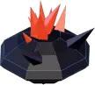
Quillstone
fire · brawler · QUILL BURST, FIRE BOMBS
MAGE
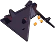
Ember Hood
fire · mage · HEXFIRE, FIRE BOMBS
TECHNICIAN
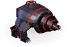
Thermite Burrower
fire · technician · no move yet
BRAWLER
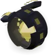
Static Orb
electric · brawler · STATIC RUSH
MAGE
Thunderhead
electric · mage · ARC VOLLEY
TECHNICIAN
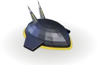
Hover Shell
electric · technician · no move yet
BRAWLER
Frost Maw
ice · brawler · CHOMP
MAGE
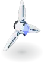
Rimestar
ice · mage · no move yet
TECHNICIAN
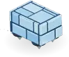
Igloo Skater
ice · technician · no move yet
BRAWLER
Rift Mimic
flux · brawler · GRAVITY SLAM
MAGE
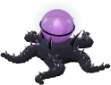
Voidstar
flux · mage · SINGULARITY SHOT
TECHNICIAN
Goo Proxy
flux · technician · no move yet
BRAWLER
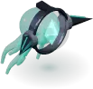
Jelly Ram
core · brawler · no move yet
MAGE
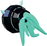
Hornshell
core · mage · no move yet
TECHNICIAN
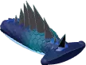
Hammer Slug
core · technician · no move yet
BRAWLER
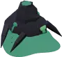
Seeper
toxic · brawler · ERUPTION
MAGE
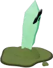
Rotshard
toxic · mage · CORRODE SHOT
TECHNICIAN
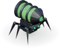
Blight Spider
toxic · technician · no move yet
Form
Element
Role
Sprite
Ground sheet
Signature move(s)
Design No.
Code
QUILLSTONE
fire
BRAWLER
img/evo/quillstone.png
—
QUILL BURST (default), FIRE BOMBS
354
js/evolution.js:160
EMBER HOOD
fire
MAGE
img/evo/embercowl.png
—
HEXFIRE (default), FIRE BOMBS
391
js/evolution.js:179
THERMITE BURROWER
fire
TECHNICIAN
img/evo/thermite.png
—
none
855
js/evolution.js:193
STATIC ORB
electric
BRAWLER
img/evo/staticorb.png
—
STATIC RUSH
781
js/evolution.js:176
THUNDERHEAD
electric
MAGE
img/evo/thunderhead.png
—
ARC VOLLEY
541
js/evolution.js:138
HOVER SHELL
electric
TECHNICIAN
img/evo/hovershell.png
—
none
877
js/evolution.js:204
FROST MAW
ice
BRAWLER
img/evo/maw.png
img/evo/maw_g.png
CHOMP
156
js/evolution.js:163
RIMESTAR
ice
MAGE
img/evo/rimestar.png
—
none
861
js/evolution.js:219
IGLOO SKATER
ice
TECHNICIAN
img/evo/igloo.png
—
none
857
js/evolution.js:209
RIFT MIMIC
flux
BRAWLER
img/evo/mimic.png
img/evo/mimic_g.png
GRAVITY SLAM
114
js/evolution.js:238
VOIDSTAR
flux
MAGE
img/evo/voidstar.png
—
SINGULARITY SHOT
637
js/evolution.js:146
GOO PROXY
flux
TECHNICIAN
img/evo/gooproxy.png
—
none
853
js/evolution.js:188
JELLY RAM
core
BRAWLER
img/evo/jellyram.png
—
none
867
js/evolution.js:215
HORNSHELL
core
MAGE
img/evo/hornshell.png
—
none
220
js/evolution.js:223
HAMMER SLUG
core
TECHNICIAN
img/evo/hammerslug.png
—
none
467
js/evolution.js:182
SEEPER
toxic
BRAWLER
img/evo/seeper.png
img/evo/seeper_g.png
ERUPTION
578
js/evolution.js:231
ROTSHARD
toxic
MAGE
img/evo/rotshard.png
img/evo/rotshard_g.png
CORRODE SHOT
101
js/evolution.js:241
BLIGHT SPIDER
toxic
TECHNICIAN
img/evo/blightspider.png
—
none
873
js/evolution.js:198
The unevolved look: the egg
A clear glass egg with the element's crystal turning inside it, on three dark metal scythe legs. There is one sheet for each element, img/hd/egg_<element>.png: 8 facings × 16 frames (8 idle, 8 walk), cut to 62 × 85 px cells, with the crystal glowing in the element's colour. An unhatched egg on a pad uses egg_neutral.png, which has a grey crystal. Until a sheet has loaded, the game draws the flat canvas figure instead (_drawVirusFigure): three black legs, a glass body and a diamond, with saws sized by attack and claws by special attack and accuracy.
EGG
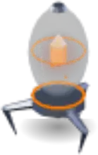
Fire egg
img/hd/egg_fire.png
EGG
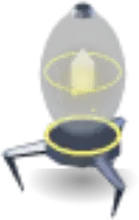
Electric egg
img/hd/egg_electric.png
EGG
Ice egg
img/hd/egg_ice.png
EGG
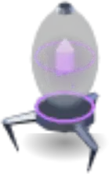
Flux egg
img/hd/egg_flux.png
EGG
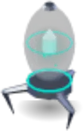
Core egg
img/hd/egg_core.png
EGG
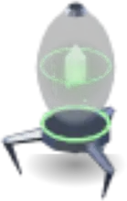
Toxic egg
img/hd/egg_toxic.png
The legacy forms
There are 10 legacy forms. No new evolution reaches one, because evolutionFor skips them, but a follower already evolved into one keeps it through saves and respawns.
Form
Element · role
Sprite
Move(s)
Replaced by
Code
BUNKER BLOOM
fire · brawler
img/evo/bloom.png
PETAL BLAZE, FIRE BOMBS
Quillstone
js/evolution.js:131
CINDER HALO
fire · mage
img/evo/halo.png
HEXFIRE, FIRE BOMBS
Ember Hood
js/evolution.js:156
REAVER
electric · mage
img/evo/reaver.png
ARC VOLLEY
Thunderhead
js/evolution.js:134
STORM MANTA
electric · brawler
img/evo/manta.png
STATIC RUSH
Static Orb
js/evolution.js:152
PRISM HOOD
electric · brawler
img/evo/prism.png
STATIC RUSH
Static Orb
js/evolution.js:167
VOLT RING
electric · brawler
img/evo/voltring.png
STATIC RUSH
Static Orb
js/evolution.js:172
SERPENT
flux · mage
img/evo/serpent.png
SINGULARITY SHOT
Voidstar
js/evolution.js:142
AEGIS WARDEN
core · brawler
img/evo/warden.png
none
Jelly Ram (its successor, the Hammer Slug, is the core technician now)
js/evolution.js:149
PETAL AEGIS
core · mage
img/evo/petal.png
none
Hornshell
js/evolution.js:235
CALDERA
toxic · brawler
img/evo/caldera.png
ERUPTION
Seeper
js/evolution.js:227
img/evo/hauler.png, pod.png and vessel.png (each with a .json) are the old worker forms (Hover/Void Hauler, Dynamo Pod, Worm Vessel). Nothing loads them.
The signature moves
Move
Forms
Reach (tiles)
Every (frames)
Damage
What it does
Code
QUILL BURST, PETAL BLAZE
Quillstone; Bunker Bloom
1.8 round it
360
2 × power
fire to everything in reach, which burns 180 frames at 0.1 × power a tick
js/evolution.js:118
ARC VOLLEY
Thunderhead; Reaver
6
300
2.5 × power
electric to the nearest, then jumps to 2 more within 2.5 tiles at 60%
js/evolution.js:119
SINGULARITY SHOT
Voidstar; Serpent
6.5
330
2.2 × power
flux to the nearest. Every hostile within 2.2 tiles of it is slowed to 50% for 90 frames and dragged 75% of the way to it (not beetles or bosses, not across a Photonic Shield)
js/evolution.js:120
STATIC RUSH
Static Orb; Storm Manta, Prism Hood, Volt Ring
4
300
2.4 × power
dashes to 0.8 tiles from the nearest, then shocks 2 more within 2.2 tiles at 60%; each gets hitStun45 frames, which nothing reads
js/evolution.js:121
HEXFIRE
Ember Hood; Cinder Halo
7
330
6 × 0.8 × power
fire rounds dealt round the nearest enemies in turn; each sets its target burning 150 frames at 0.08 × power
js/evolution.js:122
CORRODE SHOT
Rotshard
7
320
2.2 × power
toxic. The target's armour is eaten: damage taken ÷ 0.4 (×2.5) for 360 frames. Hostiles within 1.6 tiles: ÷ 0.6 for 180 frames
js/evolution.js:123
GRAVITY SLAM
Rift Mimic
2.2 round it
330
1.9 × power
flux to everything in reach, which is shoved 0.5 tiles (not beetles or bosses) and slowed to 50% for 90 frames
js/evolution.js:124
ERUPTION
Seeper; Caldera
2.4 round it
330
1.8 × power
toxic to everything in reach; damage taken ÷ 0.5 (×2) for 240 frames
js/evolution.js:125
CHOMP
Frost Maw
1.8
300
2.4 × power
ice to the nearest, plus hitStun75 frames (nothing reads it). Everything within 1.6 tiles of it is slowed to 50% for 120 frames
js/evolution.js:126
FIRE BOMBS
the second move of Quillstone and Ember Hood (also Bunker Bloom and Cinder Halo)
7
300
0.9 × power a landing
3 bombs fanned 0.3 rad at the nearest, 2 bounces each; the floor burns 10–15 s
the INFO card says “has no signature move yet”. AEGIS BURST and AEGIS BLOOM went with the followers' shield
js/moves.js:20
What
Value
Code
Evolution level
10
js/evolution.js:114
Health and power of a form
×1.25
js/evolution.js:115
The molt
120 frames (2 s)
js/evolution.js:116
A move's action frames
40 frames
js/evolution.js:127
First move after the molt
90 frames
js/evolution.js:261 (literal)
An unevolved follower is checked every
30 frames
js/evolution.js:275 (literal)
Forms / legacy forms
18 / 10
js/evolution.js:129-243
Where it lives: js/evolution.jsEVOLUTIONS, evolutionFor, evoCheck, evolutionTick, the move functions, the drawing and the ground pass · js/moves.jsMOVES, evoMoveOf · js/firebombs.jsfireBombBarrage · js/hdsprites.jsdrawHdEgg · js/unitinfo.jsMOVE_INFO · design/evolutions/ (the models, bake.js) · img/evo/img/hd/
Decisions
“give the followers evolutions … the followers shed their egg form, lose their shell and their legs, and become little drones or sentinels.”REPORTED · js/evolution.js:4-6 · commit af081dd. From the design sheet: “the Reaver and the Bunker Bloom fit the vibe — make the Bunker Bloom an evolution of the fire brawler and the Reaver an evolution of the electric sniper.” Asked: automatically at a level; a stat boost and a signature move
“the old core brawler is going to be switched to the technician class”ASKED, then “Swap it” · js/evolution.js:29-30 · commit 11788c7 (the Hammer Slug became the core technician)
“do the Jelly Ram and Ice Mage now”ASKED · js/evolution.js:34 · commit f633e23
“add the new technician forms now”ASKED · js/evolution.js:46-50 · commit 16fcb1f. The technician “helps traverse the battlefield and provides exploration tools to the user”; the tools are the user's own: “I have already made these, but I will put them in later”
“I don't like the fire mage design, so we'll just have it there on the electric as a placeholder”the electric brawler and the fire mage traded designs · js/evolution.js:169-170 · commit 5edb2c2
“trapezoidal wings that are kind of angled downward like a ship, like a shuttle, like a star shuttle”review of the Hover Shell, then “too long, make 'em cuter”, “angled downward. Just make it subtle” · js/evolution.js:200-201 · commit a8a24df
“smaller, thinner, finer legs, and ... lower to the ground”review of the Blight Spider · js/evolution.js:195-196 · commit bac0fc1
“a rectangular igloo looking dude that has diamonds for legs, who skates around”the Igloo Skater, then “only 4 legs”, “fitted bricks on the body”, “the diamonds are nested under the body”, “bigger bricks 2 layers”, “moves like a train cart, so that the smaller side is front facing” · js/evolution.js:206-208 · commits 16fcb1f, 7983738
“move with flicks from all of its tentacles like the jellyfish from SpongeBob”review of the Jelly Ram (“a floating brawler that uses its horned shell to ram targets”), then “a little bit bigger”, the wavy strings “but fewer and thicker”, “fatter tentacles” · js/evolution.js:211-213 · commit 476f3e3
“a black body with red glowing accents”review of the Thermite Burrower, then “thick armored arms”, “more like a bear/zoids style tank animal ... same silhouette”, “no ears or any face” · js/evolution.js:190-191 · commits 5594c58, 9d5b3df
“a frog face with diamond eye iris and one is way bigger than the other and smaller ring”review of the Goo Proxy, then “thinner diamonds” · js/evolution.js:185-186 · commit ff2671d
“Move choice is per follower, plus a squad setter [...] Class moves work only while you are that class”Decisions (answered) · docs/PLAYER-CLASSES.md §8 · commit 6738e19
Open / not built
No signature move yet for the core forms (Jelly Ram, Hornshell, Hammer Slug), the Rimestar or the six technician forms. The code waits “until the new abilities are worked out” and for the user's exploration tools (js/evolution.js:41, 48-51).
The Blight Spider's “TOXIC DEPLOY” and the Hover Shell's separation as a real ability are not built (commit dbc0dbe).
Move selection: the group “set move” is not built, no move uses classes yet, and unlocking moves is a plan only (docs/PLAYER-CLASSES.md §3, §5).
Getting followers
A new follower comes from one of four places: the three you start with, + RECRUIT in the roster, an egg on a pad, or coming back (a respawn or a restored specimen; see Death). A new follower joins the squad if there is room; otherwise it holds a room.
The start. Three followers come out at the Crystal: electric, core and fire. Each has a random personality out of all five, so each has a 40% chance of being a brawler, 40% a mage and 20% a technician. The tutorial lifts them to level 9. A saved game brings back its own followers instead.
+ RECRUIT is only in the roster: the phone Command Center's header button, the carousel strip's last tile (RECRUIT ◆30, with n AFFORDABLE or NEED n MORE; the new one is put in view), and the phone menu's ROSTER. It costs 30 shards (a new game starts with 100). The type is an even draw of the three and the element an even draw of the six (recruitDrawType, modulationPick). It comes out at the Crystal: “TYPE · ELEMENT RECRUITED!”. There is no roster limit on recruits.
With the squad full, a recruit or an egg asks first (the #partyPick card): “SQUAD FULL · 3 OF 3 / WHO JOINS · WHO MAKES ROOM?”. It lists each member, with where it would go (“HOLDS THE ROOM”, or “EXILED · NO ROOM HAS A PLACE”), then NOBODY (the newcomer holds the nearest room with a place; off when there is none) and CANCEL. Nothing is paid, and no egg is taken, until a choice is made, and only one question is up at a time. A member picked when no room has a place asks again: “EXILE NAME?” with EXILE or BACK.
Eggs on pads. Each pad holds a grey egg: neutral, nobody's target, and it takes no damage. A label within 8 tiles says what it is (TECHNICIAN · ICE). Walk within 1.5 tiles and a follower of exactly that type and element is made right there, at full health; it does not walk home to the Crystal. With the squad full it asks who makes room first, and asks again only after you walk 2.5 tiles away and come back. The pad refills with the same type and element 5400 frames (90 s) after the egg was taken or destroyed. It waits until you are more than 4 tiles away and you have fewer than 12 live followers (the whole roster, not the squad). The delay still to run is saved.
Pad
Room
Type
Element
spot_lobby
Computer Lab (its north-east corner)
BRAWLER
fire
spot_show
Show Room (north end)
MAGE
ice
spot_deck
Observation Deck
TECHNICIAN
core
spot_lab
Experiment Lab
MAGE
toxic
spot_tele_2
Teleport Room 2
TECHNICIAN
flux
spot_arena_w
Arena (west end, by the Armory's steel door)
BRAWLER
electric
spot_arena_c
Arena (middle)
BRAWLER
core
spot_cold
Cold Storage (out on the ice cave)
TECHNICIAN
ice
The 8 pads (js/facilitymap.js:372-381): three brawlers, two mages and three technicians; core and ice have two each.
What
Value
Code
+ RECRUIT
30 shards
js/clone.js:633
Shards at a new game
100
js/config.js:176
The starting three
electric, core, fire
js/facilityplay.js:263 (literal)
Take an egg within
1.5 tiles
js/followerspots.js:12
A pad refills after
5400 frames
js/followerspots.js:12
…once you are further than
4 tiles
js/followerspots.js:12
…and you have fewer live followers than
12
js/followerspots.js:12
A pad's label shows within
8 tiles
js/followerspots.js:12
An egg asks again after you walk off
2.5 tiles (take + 1)
js/followerspots.js:55 (literal)
A recruit's or egg's level, then lifted to
5, then 9
js/levels.js:77, js/tutorial.js:13
Where it lives: js/clone.jsrecruitFollower, recruitDo, modulationPick · js/helpers.jsspawnFollowerAtCrystal · js/followerspots.js · js/facilitymap.jsfollowerSpots · js/party.jspartyPickOpen, partyPickChoose · js/npc.js:59-100 (a follower arriving at the Crystal)
Decisions
“put a few spots where the followers exist and will respawn there, and they'll have a fixed type and a fixed element.”ASKED · js/followerspots.js:4, docs/TUTORIAL.md:368 · commit c6eef42. Asked what “respawn” meant: “the spot refills after a delay”
“let's just stick to just adding a ice technician in the cold storage room now”Asked · commit d183ad9
“I would really like a button near the roster, so if the roster is looking slim the user can create a recruit rapidly.”js/clone.js:629 · commit b70e68d; then “that needs to be the only way” (recruiting in the roster only) · commit 6d56297
“Yes”ASKED, to the carousel, “but no recruit button at the top” · docs/TUTORIAL.md:283 · commit 70ffb26
“When recruiting a follower requires replacing an existing follower, let the player select which follower to replace”ASKED · js/party.js:303 · commit 9cc14d4; then the one replaced “has option to go to a vacancy in the rooms but if not confirm retirement”
“Shards everywhere”ASKED (the Level 1 questions) · commit 4f24c86: the money is called shards on screen
The squad, posts and rooms
The squad is the up to 3 followers that follow you. Every other follower holds a room, which is its post. Only the squad follows you, comes through doorways with you, hurries to catch up and uses technician abilities, and it is what the orders reach unless you pick otherwise.
A member is yours, alive, not a clone, not posted and not walking back to the Crystal. Each keeps a slot (0–2), so the three cards never shuffle. If a fourth becomes a member (a newcomer, a load), it is posted where it stands: “SQUAD FULL · HOLDING THE ROOM”.
A posted follower walks a slow round of its room: 0.55 × its speed, to stops 2.5–9 tiles apart, resting 70–200 frames at each. It fights only creatures inside its room, and walks back if it is put elsewhere. It does not follow you, come through doorways or get hurried, and RETREAT never reaches it. It can be selected in the roster and ordered; sent at a creature, it goes, then returns to its round.
Room capacities. The Main Hallway holds 3, the Arena 6, and every other room 2; there are 17 rooms. A room's count is the followers holding it plus the dead ones waiting to come back that held it. The squad does not count.
Every way of posting goes through partyPlace: the room meant if it has a place, else the nearest room with a place on the same stretch of floor (“THE X IS FULL · HOLDING THE Y”). HOLD into a full room is refused (“THE X IS FULL · 2 OF 2 · IT KEEPS FOLLOWING”), except in the Arena, which takes one more and then moves its weakest out.
The Arena over six is checked every 6 frames. The weakest holding it goes, by roster order: not evolved before evolved, then the lowest level, then the lowest power. It moves to the nearest room with a place, or it is EXILED when none has one. Either way the game says so.
The cards. On a phone the squad is three cards over the dock; on a tablet it is a stack of three at the bottom left. Each card shows the picture, the name, LV n · STATE, health, and a technician's ability chip; a phone card also has an i for INFO. A tap selects the member, and on a tablet opens its card beside the stack. An open slot reads “+ CALL NAME” when exactly one follower holds a room (a tap brings it back); otherwise “+ OPEN SLOT” opens the roster on NOT IN SQUAD.
Doorways. Squad members that are following and within 16 tiles come through with you at once; the others walk to the doorway. The roster shows a posted follower as HOLDING · MAIN HALLWAY with a POST tag, and the summary as SQUAD 3/3 · 4 POSTED · 7 UNITS.
What
Value
Code
Squad size
3
js/party.js:13
A posted follower's pace
0.55 × its speed
js/party.js:13
Its rest at each stop
70–200 frames
js/party.js:13
Distance to its next stop
2.5–9 tiles
js/party.js:13
A stop is given up after
900 frames
js/party.js:209 (literal)
Capacity: Main Hallway / Arena / every other room
3 / 6 / 2
js/party.js:39
The squad and the Arena are checked every
6 frames
js/game.js:533 (literal)
Carried through a doorway within
16 tiles
js/facilityportals.js:13
Where it lives: js/party.jspartyIsMember, partySync, partyAdmit, partyPost, partyCall, partyPlace, partyVacancy, partyArenaOverflow, partyPatrol, partySlotsUpdate · js/npc.js:194-199 (a posted follower fights in its room) · js/facilityplay.jsfacilityCatchUp · js/facilityportals.js · game.html (THE CORNERS)
Decisions
“you can only have three followers in your squad, and those three followers will show up their little roster little clip out [...] whenever they're in a room, they can have the follower hold that position and the followers will patrol that room until they are called upon again. each follower in your roster will show what room it's holding and a new follower will not follow you unless you have room in your squad.”ASKED · js/party.js:4-6, docs/TUTORIAL.md:240 · commit 0666312
“Category 1 rooms: two followers. Main Hallway Level 2: three followers. Arena Level 2: six followers. These room capacities are separate from the three active squad slots”ASKED · js/party.js:36 · commit 9cc14d4; then the Main Hallway and the Arena are “automatically a level 2 just because of the amount of space in these areas”
“When the Arena exceeds its permitted follower population, automatically remove the weakest eligible follower according to the game's existing strength or ranking data”ASKED · js/party.js:67 · commit 9cc14d4; then “Roster order”, to a “free room, else retired” (retiring is EXILE now)
“the on screen squad roster should shuffle into the nook above the attack menu to the left, remove the element picker and replace with 'all' button the player can select each squad member and pull their card roster information up on the fly and may choose to dismiss from squad from this little side menu and index.”ASKED · js/squadfly.js:4-6 · commit 70ffb26
“the selected little number thing is kind of irrelevant because it shows you which ones you have selected, and you can only have the squad really selected”ASKED · docs/TUTORIAL.md:244 · commit 3bdf9a4
Open / not built
Not built: forward rooms, nests, Crystal energy, equipment and the healing station (“Not yet, skip them for now”, docs/TECHNICIANS.md:161). Claiming a room later would mean “followers holding it”.
The orders
Who they go to: ALL, WHO, the selection
Followers or clones picked on the squad cards or in the roster get every order, and the picks can include followers holding rooms.
With nobody picked, the orders go to the squad (all is the facility's scope) plus the Mutator's clone. A tablet has one ALL button, which clears the picks; there is no element picker there. A phone has the WHO row (ALL, or one element) and, in the ORDERS menu, a ROLE filter (BRAWL, MAGE, TECH).
COME reaches further: it also takes in the followers holding rooms that WHO reaches, the one held last first.
RETREAT
RETREAT goes to the pool, minus followers holding rooms and every clone except the Mutator's. For 360 frames (6 s) each one sees no enemy and fires no signature move. It drops any attack order or POSITION, and falls back to you (“RETREAT · n FALLING BACK”). It also ends a core technician's hold behind its shield.
HOLD
Each follower is posted in the room it stands in, through partyPlace; a full room refuses it, except the Arena. A clone holds the tile it is on. Each one posted leaves the selection. The message is “HOLD · n · ROOM” (or “n ROOMS”). The button's sub-label “STAND HERE” is not drawn.
COME, and FOLLOW ME
Each follower in COME's pool leaves its post and rejoins the squad while there is a slot; the rest keep holding. The game says what happened: “COME · NAME IS BACK IN THE SQUAD”, or “SQUAD FULL · 3 OF 3 · NAME KEEPS HOLDING”. COME also ends attack orders, POSITION and a core technician's shield hold. FOLLOW ME is only COME's sub-label (“FOLLOW ME”), and it is not drawn. The roster's old STANCE setting (FOLLOW ME / HOLD THIS ROOM) has become ADD TO SQUAD / REMOVE FROM SQUAD.
The enemy card's ATTACK
The card shows the creature the gun is locked on, or else the nearest in range and in sight: its picture, its kind, LV n · ELEMENT, its health with HP a/b · BITE n, and a strip that reads ATTACK · EVERYONE n (or SELECTED n), then ATTACKING · n OF m. A tap gives every unit in the pool an attack order on that creature for 1800 frames (30 s). Each goes for it whatever is nearer, calm or not, from any distance. The order ends when the creature dies, after 30 s, when the creature is more than 22 tiles from you, or on RETREAT, HOLD or COME. While a technician's ability is aimed at an enemy, a tap on the card picks that creature for the ability instead.
POSITION (the ground's long-press ring)
The pool holds that tile and stays in the squad. Each fights hostiles within 4.5 tiles of itself with followerAttack, every role including the mage, and gives the job up below 50% health.
PLAY STYLE
Set in the roster, per follower, and saved. It multiplies the role's engage reach: DEFENSIVE ×0.6, BALANCED ×1 (the default), AGGRESSIVE ×1.7. The battle tool's POSTURE row is gone; its function remains with no button. ATTACK STYLE and SWITCH ROLES change a role (see Roles).
RE-ROLL
Where: the long-press ring on a follower (LEFT, one gesture); the phone panel's RE-ROLL, then TAP AGAIN: RE-ROLL n; the carousel's RE-ROLL, then TAP AGAIN. It is free, and works on any follower of yours that is alive and not already walking back (not a clone).
What happens: its bond breaks and its post or job is let go. It walks back to the Crystal (RETURNING: “RE-ROLLING AT THE CRYSTAL”) and is made again there. It gets a new personality of its current role's type, new stats, and a new combat trait, natural trait and perk. It keeps its element, level, XP, evolved form, play style, move and uid, and rejoins the squad if there is room.
Its stats (seen in the sandbox): on arrival they are the new personality's raw level-5 numbers, with no level scaling and no ×1.25 health. It keeps its old base, so its next level-up, death or reload recomputes its stats from the old personality. A cunning mage re-rolled to cautious had 30 max health on arrival and 25 after its next level-up.
EXILE
What it does: the follower leaves the roster for good. It is not a death. Its bond breaks first, so there is no partner's rage; there is no body, no return, it is not saved, and nothing is given back. Its squad slot or its room's place is freed (“NAME IS EXILED”).
It asks first. The first tap arms the button (TAP AGAIN TO EXILE). A second tap on the same button, for the same follower or followers, within 4000 ms (4 s, real time) exiles; otherwise the arm lapses. A button for one follower never exiles another.
Its buttons are only in the roster: the carousel's settings row for the creature in view (the next one then comes into view); the phone Command Center's side panel (one button for everyone selected); and each card of the phone menu's ROSTER. It is not on the squad's own cards, on the card on the fly (INDEX and DISMISS only), or in the phone's SQUAD.
The game also exiles: through the who-makes-room card, after its own EXILE / BACK confirm, and through the Arena over six when no room has a place.
DISMISS, REMOVE, ADD TO SQUAD, SWAP, DISBAND
DISMISS FROM SQUAD on the card on the fly is the same as REMOVE FROM SQUAD: in the side panel, on the carousel's foot bar, as ✕ REMOVE on a carousel slot, and as REMOVE in the SQUADS window and on phone cards. The member holds the room it is in, or the nearest with a place; if there is none it stays (“EVERY ROOM IS FULL · IT STAYS IN THE SQUAD”).
ADD TO SQUAD (side panel; carousel bar: ADD TO SQUAD · n SLOTS FREE; phone cards; an open slot's + CALL): a follower holding a room rejoins while there is a slot, else “SQUAD FULL · 3 OF 3”.
SWAP (carousel bar: SWAP NAME IN FOR, and a button for each member; side panel: SWAP WITH / SWAP IN). The member holds its own room if that has a place (or it is the Arena), else the room the newcomer leaves, else the nearest with a place. The newcomer takes its card.
DISBAND (the carousel's squad row; DISBAND SQUAD in the SQUADS window and the phone's SQUAD): every member holds the room it is in.
Each of these buttons takes the followers it dealt with out of the selection, so the next tap picks exactly one.
What
Value
Code
RETREAT lasts
360 frames
js/config.js:278
An attack order lasts
1800 frames
js/config.js:281
An attack order's leash (creature to you)
22 tiles
js/config.js:282
PLAY STYLE reach: defensive / balanced / aggressive
“the menu should stay open, it shouldn't close unless it's on mobile. This menu is for quick, decisive decisions in battle, like withdrawing from the fight, selecting certain types to attack. Not too much, not too boxy.”ASKED · js/mixtool.js:4-5 · commit 2394aee
“whenever you get near an enemy, a little index pops up in that little corner as well, and you can have your followers attack that creature if you tap it, and depending on what creatures you have selected or what followers you have selected, they'll attack it.”ASKED · js/mixtool.js:10-11 · commit 683bfd5
“I click hold with just one of my followers, which is fine. He starts holding that position. But then [...] I click come, it doesn't come. It still holds.”REPORTED · js/party.js:155 · commit 44ecb56
“when you click the creature on the roster, it should show on the side add to party or add to squad [...] And here you can disband them.”ASKED · js/party.js:356 · commit 94f8b2f
“whenever I try to add a different follower to the squad, it ends up adding the same follower that was previously on the squad back”REPORTED · js/party.js:359 · commit 3b1f536
“I need to be able to get rid of followers and exile them in room for other followers that I might find or come across.”Asked; chosen with the user: EXILE, the word everywhere, and nothing back · commit 9c83d2d
“I was actually thinking that it would not be on the home screen side HUD roster. I think it would be in the main roster with all the creatures in the separate window.”Asked · docs/TUTORIAL.md:358 · commit 02cea05
“we're also going to remove working. There is no more working.”ASKED · docs/TUTORIAL.md:257 · commit 94f8b2f
Open / not built
FOCUS (go for a class first: battleFocus) and POSTURE are still in the code, but the tool has no button for them (js/mixtool.js:8, 60-70).
The group “set move” is not built.
The technicians' six abilities
A TECHNICIAN has its element's ability, as an egg and evolved alike. The six are in one table, TECH_ABILITIES, and there is one way in, techAbilityUse: the chip on its squad card, the world (a launcher site's tag, a long press on rubble) and the tests all go through it, with the same checks and one cooldown.
Only a technician in the squad can use one: not one holding a room, walking back, flying or busy. Otherwise the game says why (NOT IN THE SQUAD, BUSY, WORD READY IN n S).
Waits. The first use waits 3600 frames (60 s) after the technician joins the squad, and leaving and coming back starts the wait again. After each use, the ability's own cooldown of 60 s applies. Cooldowns are not saved.
Reach: anything the technician can see, never through a wall; Telegrab reaches anything on the screen.
The chip is only on the squad's cards, not in the Command Center's squad box. It shows its mark and word when ready (⚡ LAUNCH), the seconds while waiting (⚡ 42 S), ✕ AIMING while aiming, and THROWING / SETTING UP / DRILLING / LAYING while busy. The INFO card has an ABILITY section with the numbers.
Aiming. A prompt says what to tap, in order: a follower, an enemy (or its card), a spot on the floor, an item. While aiming, a press on the play area is the aim's (no ring, no shot, no walk); a tap on a squad card picks that follower, and a tap on the enemy card picks its creature. A pick that cannot be used says why, and the aim stays up. ✕ CALL OFF, the chip again, or Escape cancels.
Element
Ability
Chip
What you pick
FIRE
THERMITE DRILL
✹DRILL
an enemy (or the card); rubble from its own ring
ELECTRIC
KINETIC LAUNCHER
⚡LAUNCH
a follower, then an enemy
ICE
FROST PATCH
❄FROST
a spot of floor
FLUX
TELEGRAB
✦GRAB
an item on the floor
CORE
PHOTONIC SHIELD
◈SHIELD
an enemy (or the enemy card)
TOXIC
BLIGHT SPIDER
☣POOL
a spot of floor
Kinetic Launcher (electric)
Combat. Tap the chip, then a follower to throw, then an enemy the technician can see. The follower runs to the technician and, once within 1.3 tiles, is thrown in an arc that lands 0.7 tiles from the enemy, on the thrower's side. An enemy within 1.6 tiles of the landing takes 3 × the thrown follower's power, through applyDamage (its element, armour and a beetle's reflect all count). The technician gets the XP a kill of that enemy would give, once, and the thrown follower gets an attack order on the enemy for 600 frames (⚡ KINETIC IMPACT; otherwise MISSED). Hit or miss, the thrown follower takes a fixed 10: no defense changes it, but the 34% hit cap still holds. The cooldown starts as the follower leaves the ground; a throw called off costs nothing.
Exploration. There is 1 site, the Arena Catwalk, on the arena floor under the catwalks' railing, between the two tanks' footbridges.
Finding it. It shows only within 6 tiles, quietly: a faint dashed outline and a small, still tag (⚡ LAUNCHER SITE, ⚡ SETTING UP, ⚡ LAUNCHER · SEND UP). Only the tag takes a tap.
Setting up. Tap the tag. An electric technician in your squad walks there and works for 120 frames. The launcher is then there for good: it is saved, and the technician gets 100 XP, once. This does not use the cooldown.
Sending a follower up. Tap the launcher's tag: the arc is drawn, with LANDS HERE. Tap a follower and it is thrown up. Up there it holds the Catwalks, a room of 2, so the launcher will not send a third. One follower goes at a time; no technician is needed and there is no cooldown. A tap that is not on a follower puts the aim away and is an ordinary tap.
The way down. COME (or + CALL): it walks to the catwalks' broken section and drops through to the arena floor. It is one way only, and nobody walks up. A follower posted to the Catwalks that is not up there (it came back from the dead) is let go of its post.
What
Value
Code
Cooldown (PROVISIONAL)
3600 frames
js/techabilities.js:30
The thrown follower takes (PROVISIONAL)
10
js/techabilities.js:31
The enemy takes (PROVISIONAL)
3 × power
js/techabilities.js:32
XP for setting a launcher up (PROVISIONAL)
100
js/techabilities.js:33
An enemy is hit within (of the landing)
1.6 tiles
js/techabilities.js:34
Loaded within / time to get there
1.3 tiles / 480 frames
js/techabilities.js:35-36
Flight at an enemy: frames / arc
40 / 70 px
js/techabilities.js:37
Flight up to a site's room: frames / arc
64 / 120 px
js/techabilities.js:38
The drop through the broken section
28 frames
js/techabilities.js:39
A site shows within / walk to it / setting up
6 tiles / 1200 / 120 frames
js/techabilities.js:40-42
Landing from the enemy / the thrown follower's attack order
0.7 tiles / 600 frames
js/techabilities.js:564, 593 (literal)
Photonic Shield (core)
Tap the chip, then a creature the technician can see (or the enemy card). A wall of teal light goes up across the line between them, 3 tiles in front of the technician, 3 tiles wide, and cut short by any wall. A creature nearer than 3.9 tiles has it go up 0.9 tiles in front of the creature, and the technician steps back to hold 3 tiles behind it. A creature caught on the line is put out on its own side.
It stops enemies: they cannot walk, be knocked, be pulled or leap across it, and cannot bite, spit or use a special at anything on the other side. It ripples and says BLOCKED. Your side walks and shoots through it.
No durability. It has no health and is gone exactly 1200 frames (20 s) after it goes up; its seconds show over it, and it flickers in the last 3.
The technician holds behind it, fighting only what comes within 1 tile, until the shield goes, on COME, RETREAT or an attack order, when it leaves the squad, or when you are 10 tiles away.
What
Value
Code
Cooldown (from when it goes up)
3600 frames
js/techabilities.js:45
Lasts
1200 frames
js/techabilities.js:46
Width / the technician holds behind it
3 / 3 tiles
js/techabilities.js:47-48
In front of a near creature
0.9 tiles
js/techabilities.js:49
A body's band against it
0.4 tiles
js/techabilities.js:50
The hold ends with you this far
10 tiles
js/techabilities.js:51
Flickers in its last
180 frames
js/techabilities.js:947 (literal)
Thermite Drill (fire)
The rubble is in the arena's south rock, on the west half of its straight stretch (1 pile). Within 6 tiles a label says what to do, and a notice comes up as you come near.
Drilling it. Press and hold the rubble and pick THERMITE DRILL. A fire technician in your squad whose drill is ready walks to it and drills 6 hits, one every 60 frames; the cooldown starts at the first hit. The hits are saved, so a drilling cut short goes on where it stopped.
Drilled through: a dark hole for good, “SEALED FOR NOW”: no wall changes and nothing walks in. 3 rocks lie in front of it, made once, as pickups (ROCK: “NO USE FOR IT YET”).
An enemy (from the chip): the technician closes to 1 tile and drills it 3 times a second apart. Each hit is 2 × the plain hit, which makes 0.5 × attack, as fire. It gives up after 480 frames if it cannot reach the enemy or loses it.
What
Value
Code
Cooldown (from the first hit)
3600 frames
js/techabilities.js:54
Rubble: hits / every
6 / 60 frames
js/techabilities.js:55-56
Rocks, once
3
js/techabilities.js:57
Enemy: hits / × the plain hit / reach
3 / 2 / 1 tile
js/techabilities.js:58-60
Time to walk to the rubble / to reach an enemy
1200 / 480 frames
js/techabilities.js:61-62
The rubble's label shows within
6 tiles
js/techabilities.js:63
Frost Patch (ice)
Tap the chip, then a spot of floor the technician can see. Ice covers the 3 × 3 tiles round that tile at once, only floor in sight of its middle, for 600 frames (10 s). Enemies on it move at 50% of their speed, and a stronger slow they already have is kept. Your followers and clones on it move at 150% (not you). Nothing about it is saved.
What
Value
Code
Cooldown
3600 frames
js/techabilities.js:66
Size / lasts
3 × 3 tiles / 600 frames
js/techabilities.js:67-68
Enemies' speed on it
50%
js/techabilities.js:69
Your units' speed on it (PROVISIONAL)
150%
js/techabilities.js:70
Blight Spider (toxic) and the play clock
The play clock (techClock) counts frames of play and is saved. An in-game day is 72000 frames (20 minutes of play), and nothing passes while the game is closed.
Tap the chip, then a spot of floor it can see. The spider walks there and leaves a 2 × 2 pool, and the cooldown starts when the pool is down. There are at most 3 pools; a 4th takes the oldest's place. Every 30 frames of play, a pool bites the enemies standing in it with the toxic cloud's bite, 0.036 × the spider's special attack. It does nothing to your side. A pool lasts 2 in-game days (144000 frames). Its bite and its size both shrink with its age, half at one day and gone at two, and both are worked out from its age so nothing can stretch it. Pools are saved.
What
Value
Code
Cooldown (from when the pool is down)
3600 frames
js/techabilities.js:73
Pool size / at most
2 × 2 tiles / 3
js/techabilities.js:74-75
Lasts
2 in-game days
js/techabilities.js:76
Bites every
30 frames of play
js/techabilities.js:77
Time to walk to the spot
1200 frames
js/techabilities.js:78
Bite
0.036 × special attack, fading
js/techabilities.js:458 (literal)
An in-game day / a pool's life
72000 / 144000 frames
js/techabilities.js:85, 445
Telegrab (flux)
Tap the chip, then an item on the floor anywhere on the screen; the technician does not need to see it. It can be a supply case, a drop, a rock or a specimen capsule. The item flies to you in 40 frames on a 60 px arc, and the ordinary pickup takes it, once. One your pack has no room for stays at your feet. Shards are never on the floor: a kill pays them straight in.
What
Value
Code
Cooldown
3600 frames
js/techabilities.js:81
Flight / arc
40 frames / 60 px
js/techabilities.js:82-83
Where it lives: js/techabilities.jsTECH_AB, TECH_ABILITIES, techAbilityCan, techAbilityUse, the aim, techChipState, techAbilityInfo, each ability, techAbilityTick · js/party.js:242-244 (the chip) · js/npc.js:105 (the walks) · js/facilitymap.jslaunchSites, rubble · js/facilitysave.js (launchers, rubble, clock, pools)
Decisions
“Implement the complete Level 1 update for my existing Conduit game [...] all six Technician types and their Level 1 abilities [...] The HUD must use the same underlying ability logic as world interactions.”ASKED · js/techabilities.js:4 · commit dd2d0a0; also “the 60-second initial squad wait”, and 60 s cooldowns for each of the six
“the kinetic launcher should do a set amount of damage to the follower, but a more proportionate damage to the enemy. It should also have the map exploration mode as a secondary feature that is permanent, and you need to have some sort of check for a spot where it can be deployed. And whenever you enter a spot where it can be deployed, have a little notification or highlighted area near the catwalk, or in the future any sort of secret area, and have it be clickable, and the player can engage with the electric technician, and he can set up the kinetic launcher.”ASKED · js/techabilities.js:14-16 · commit dd2d0a0 (after “Combat Mode — Launch a Follower at an Enemy [...] Secret Access Mode — Launch Toward Hidden Areas [...] the broken section permits travel from top to bottom, not from bottom to top”)
“Whenever I go near the Kinetic launcher, it shouldn't automatically lock me into jumping up to the next level. It should remain subtle and uninterruptive.”Asked · docs/TECHNICIANS.md:47 · commit 96ebab6
“The Core Technician deploys a photonic shield between itself and the player-selected creature, creating a defensive barrier that blocks enemy movement while allowing friendly units to pass through and fire through it [...] The shield lasts exactly 20 seconds after activation, then disappears automatically [...] Do not invent additional damage or durability mechanics”ASKED · js/techabilities.js:172-174 · commit 47700d4; then “3 wide, 3 back” and “Block attacks too”
“Place a distinctive rubble patch at the midpoint of the southern wall. Keep it visually distinguishable from ordinary indestructible walls [...] Allow the player to long-press the rubble and select Thermite Drill. Have the Fire Technician travel to the target and drill it. Destroy the rubble after six successful drill hits. Spawn collectible rocks exactly once upon destruction. Preserve the resulting opening [...] do not implement an unrequested dungeon system”ASKED · js/techabilities.js:271-273 · commit 0b98666
“Implement the Level 1 Frost Patch using existing terrain and status-effect systems [...] dimensions, duration, slowing effects, and sliding behavior”ASKED · js/techabilities.js:405 · commit 0b98666; on ice bridges: “they'll be like sewer somewhere on the map; we'll find a place to add the sewer system, and you can [cross] the sewer with the ice bridges” (docs/TECHNICIANS.md:108)
“Create contamination pools. Make the pools persist for two complete in-game days. Implement gradual toxin reabsorption according to the established behavior. Use the existing day-cycle system rather than real-world timers. Prevent repeated updates from incorrectly extending pool duration or multiplying toxin reabsorption. Leave the death-spill behavior unresolved”ASKED · js/techabilities.js:436-437 · commit 0b98666
“Implement the Level 1 Telegrab ability using existing targeting and item-interaction systems [...] its range, eligible targets, and retrieval behavior”ASKED · js/techabilities.js:489 · commit 0b98666
Open / not built
Kinetic Launcher: its numbers (the cooldown, the 10, the 3 × power and the site XP) are PROVISIONAL, “confirmed as placeholders” (docs/TECHNICIANS.md:174).
Frost Patch: how much faster your units cross (150%) is provisional. The ice bridges are not built.
Thermite Drill: “twice its normal hit” is read as twice the plain hit. What the rocks are for, and what is in the hole (the insect burrow), are open.
Blight Spider: the death spill is not built (left unresolved, as asked).
Bonds
Every 30 frames, two unbonded followers gain a point when both are in combat (a hit given or taken in the last 120 frames) and they are within 2.5 tiles of each other. At 40 points (20 s side by side) they bond (“♥ FIRE-12 & ICE-15 BONDED”), one partner each. Points toward a bond are not saved.
Together (within 3 tiles) each deals ×1.15 and takes ×0.9. A dotted #ff7ab8 line with a ♥ joins them.
When a partner dies the bond ends, and the survivor rages for 600 frames: ×1.5 damage and ×1.3 speed. The fallen one comes back unbonded.
Duo ultimate: both bars full and within 3 tiles; a double-tap on either fires both, and the pair deals ×1.3 for 300 frames. A re-roll or an EXILE breaks a bond. The bond itself is saved (uid, partnerUid).
What
Value
Code
Between checks / side by side within / in combat within
30 frames / 2.5 tiles / 120 frames
js/bonds.js:12-14
Checks to bond
40
js/bonds.js:15
Together: within / dealt / taken
3 tiles / ×1.15 / ×0.9
js/bonds.js:16-18
Rage: frames / damage / speed
600 / ×1.5 / ×1.3
js/bonds.js:19-21
Duo: frames / damage
300 / ×1.3
js/bonds.js:22-23
Where it lives: js/bonds.jsbondTick, bondAttackMult, bondDefenseMult, bondOnDeath, tryDuoUltimate, drawBonds · js/helpers.js:176-177, 224 · js/game.js:693
No owner decision for bonds is in the repository. js/bonds.js cites docs/ROADMAP-top5.md §4, which the Foundation's docs rewrite deleted (e24d7a9).
Traits, perks, WILL and resonance
Each follower has one combat trait, one natural trait and one perk, each drawn 50/50 when it is made (at the start, a recruit, an egg, or a re-roll, which draws them again). They are kept through death and saves.
Kind
Name
What the code does
Code
Combat
Berserker
below 30% of its max health, its hits do ×1.5
js/traits.js:5-8
Combat
Opportunistic
picks the lowest-health enemy within 6 tiles instead of the nearest (an attack order and FOCUS win over it)
js/traits.js:9-12, js/npc.js:202
Natural
Empathetic
when following, it walks to 40% toward you and 60% toward the allies within 5 tiles, only where you can see that point and within 8 tiles of you
js/traits.js:15-16, js/npc.js:339-353
Natural
Lone Wolf
when following, it stops 4 tiles from you instead of 2
js/traits.js:17-18
Perk
Iron Will
damage taken ×0.75 (not the launcher's fixed 10)
js/traits.js:21-24
Perk
Siphon
heals 10% of a plain hit's damage, of its attack stat on a physical, or of its special attack on a special. This is not the damage dealt; mage shots and signature moves never trigger it
js/traits.js:25-28, js/combat.js:213-225
WILL fuels the element attacks: a physical costs 1 and a special 4. A mage's shot costs 4 but fires even at 0. Its maximum is the WILL stat, which scales with level. It comes back by 0.005 a frame, and ARMY SURGE refills it.
Resonance runs from 0 to 100. It builds by +2 at each attack, +0.05 a frame and +30 from an EMP, but nothing reads it, so it has no effect. The personalities' resonance multipliers are never applied either.
Where it lives: js/traits.js · js/npc.js:42-43, 89-91, 207-210, 339-360 · js/helpers.js:172, 229-232 · js/combat.js (WILL, resonance)
Ultimates
Charging. +1 every 60 frames for every follower, +2 while you are within 3 tiles of the Crystal. +3 for each hit it lands that does not kill, and +20 for each kill. Up to 100. ARMY SURGE, your own ultimate (600 frames at ×1.6), fills every unit's bar.
Firing. Tap the follower twice within 400 ms, within 40 px of a point 55 px above its feet. The thin bar over its health turns gold, with ▲, when it is full. A bonded pair, both full and within 3 tiles, fires both (“♥ DUO”).
Reach. Each ultimate works within 12 tiles of the follower. 5 elements have one; core has none and shows no bar.
Element
Ultimate
What it does (the numbers are literals)
Code
FIRE
Volcanic Eruption
Picks the hostile with the most health in reach; with none it does nothing and keeps the charge. After a 138-frame wind-up (the spot locks at frame 50), every hostile within 5.5 tiles takes 3.5 × special attack × (1 − 0.1 × distance) as fire and burns 400 frames. A flame crater (radius 3) stays 300 frames. Only one eruption runs at a time
js/elements.js:339-365, 519-553
ELECTRIC
EMP
strips the shield off every hostile in reach; the followers in reach get +30 resonance and ×1.5 speed for 300 frames
js/elements.js:370-408
ICE
Blizzard
a field of radius 12 for 360 frames; every 30 frames each hostile in it that is not frozen has a 60% chance of being frozen
js/elements.js:413-425, 583-593
FLUX
Disorient
every creature in reach turns on its own kind for 240 frames, at 0.5 × power
js/elements.js:430-448
TOXIC
Smoke Screen
every hostile within 12 tiles has half its bites miss for 480 frames; a smoke cloud covers the area
js/elements.js:455-467
CORE
none
(SHIELD GRANT went with the followers' shield)
js/elements.js:450
What
Value
Code
Charge: per second / by the Crystal / per hit / per kill
Where it lives: js/elements.jsFOLLOWER_ULTIMATES · js/input.js:310-343 (the double-tap) · js/helpers.js:262-274 (charge), fireArmySurge · js/game.js:738-746 · js/bonds.jstryDuoUltimate · js/draw.js:1330-1349 (the bar)
Open / not built
Core has no ultimate “for now” (docs/TUTORIAL.md:175). The class ultimates in docs/PLAYER-CLASSES.md are the player's, and a plan only.
The cards, the plate and the status
The INFO card (unitInfoOpen) opens from a phone squad card's i, the card on the fly's INDEX ▸, a roster card's INFO, the carousel's INFO ▸, and the phone roster's INFO. It has three tabs. ATTACKS: ATTACK STYLE with its play style and reach; SIGNATURE with the move's numbers (before evolving: “Evolves at level 10 into the FORM…”; a form without a move: “has no signature move yet”); MOVE buttons for a form with two moves; ABILITY for a technician; ULTIMATE with its charge. JOBS: its stance (HOLDING THE ROOM, IN THE SQUAD, FOLLOWING YOU, or HOLDING A POST). STATS: level, health, power and speed (walk × 1000); its base stats with its personality; its traits.
The card on the fly (a tablet only) opens beside the stack when a member is tapped. It has the picture, the name in its colour, ELEMENT · LV n · ROLE (· EVOLVED), tags (state, BRAWL/MAGE/TECH, DEF/BAL/AGG, SQUAD), HP with numbers, POWER, SPEED, INDEX ▸ and DISMISS FROM SQUAD. A press anywhere else puts it away, and the member stays picked.
The carousel's creature in view has a big picture, LV, element, name, a state tag and five bars: HEALTH (its own), then POWER, SPEED, DEFENSE and ATTACK against the best in your roster. Beside it are ATTACK STYLE, PLAY STYLE, RE-ROLL, INFO ▸, EXILE, its base stats and traits. ◂ ▸ or the arrow keys walk the strip, which runs squad (by slot), then the rest (evolved, then highest level), then clones.
Over the follower in the world: a health bar (a pale segment shows a fresh hit); the thin ultimate bar (none for core); the plate Lv n NAME in its element's colour with its role's emblem (blades for a brawler, a spark for a mage, a gear for a technician); a status chip unless it is FOLLOWING; and a teal ring while selected. A long press offers ROSTER CARD (right) and RE-ROLL (left).
Status words, in the order they are checked: RETURNING, HOLDING (POSITION), HEALING (below 50% until 95%), ATTACKING (an attack order), FIGHTING (an enemy within 9 tiles), HOLDING (a post), FOLLOWING.
What
Value
Code
FOLLOWING
#19e6c1
js/status.js:8
HOLDING
#8fe3ff
js/status.js:8
FIGHTING, ATTACKING
#ff4a1c
js/status.js:8
HEALING
#7dff9a
js/status.js:8
RETURNING
#8aa0c8
js/status.js:8
HEALING shows below / until
50% / 95% of max health
js/npc.js:161-162 (literal)
Where it lives: js/unitinfo.jsfollowerInfo, MOVE_INFO, ROLE_INFO · js/squadfly.js · js/commandcenter.js_ccFocusDraw, _ccDrawSettings, _ccUpdateCard · js/status.js · js/levels.jsdrawUnitTag · js/draw.js (drawPlate, the emblems at 1629, the bars, the follower ring at 114-127)
Decisions
“I would like an info tab for each of the followers and their different attacks and jobs”REPORTED · js/unitinfo.js:4 · commit ab41422; “on each card”
“Make it say what the followers are doing, above their head and in the roster.”REPORTED · js/status.js:4 · commit 8724ba7
“when I select a creature from my squad and it pulls up ... the little index card, when I click away, it should still have that character selected, but the card should go away.”REPORTED · js/squadfly.js:10 · commit 204f7a1
“make the iPad and browser version have a menu at the bottom that has all the different menus and rosters and all that. It can take up the screen when accessing the roster and command center.”REPORTED · js/commandcenter.js:4-5 · commit d4529d4
“for mobile it should be a left radial menu with squad analytics and roster and commands.”REPORTED · js/radialmenu.js:4 · commit 891b2a9
Death and coming back
At 0 health a follower is dead. DEFEATED floats over it for 90 frames, its partner rages, and its base HP stat drops by 1. No single hit can take more than 34% of its max health.
It comes back 180 frames (3 s) later at the Crystal, as the same follower. It keeps its personality, element, traits, perk, uid (the bond is gone), play style, move and evolved form. It keeps its level, and its XP less a quarter of the progress. It returns to the room it held, whose place it kept while waiting, or joins the squad if there is room. A role switched with ATTACK STYLE is lost: the role comes from the personality again. The Crystal shows a ticker, ELEMENT ROLE ns.
It falls for good when its HP stat would reach 0. So a follower can come back (base HP − 1) times: 19 for aggressive, 15 for wild or cunning, 29 for cautious or stoic. Each death also lowers its max health a little. Its body stays where it fell: “NAME HAS FALLEN FOR GOOD — AN ICE MAGE CAN PRESERVE ITS BODY”.
Long-press the body: PRESERVE (or PRESERVE · NO ICE MAGE). You walk to it first.
The nearest Ice Mage within 14 tiles (a follower that is ice and a MAGE, or a RIMESTAR) walks to it and freezes it for 120 frames from within 2 tiles. If the mage falls while it works, nothing is preserved, and it can be tried again.
The body becomes a specimen capsule. You take it by walking within 0.9 tiles; the pack holds 3.
In the Resurrection Zone, within 2.6 tiles of the Crystal, RESTORE (tap the plate, press E, or USE in the pack) brings it back as it was, at full health, with its HP stat at 1. It joins the squad if there is room.
EXILE is not a death: there is no body, no rage and no return. Followers do not regenerate; HEALING is only a status. Health comes back from a level-up (the max-health gain), an evolution, ARMY SURGE (to full), the Mutator's serum (6% of max health every 30 frames in its pool), the Siphon perk, or coming back.
What
Value
Code
A follower comes back after
180 frames (3 s)
js/game.js:707 (literal)
HP stat lost per death
1
js/game.js:701 (literal)
DEFEATED shows for
90 frames
js/combat.js:12
The most of max health one hit takes
34%
js/combat.js:9
Ice Mage: within / freezes for / from within
14 tiles / 120 frames / 2 tiles
js/specimen.js:18-19
Take a capsule within / the pack holds
0.9 tiles / 3
js/specimen.js:20, js/inventory.js:72
The Resurrection Zone's radius
2.6 tiles
js/specimen.js:21
The serum heals / every
6% / 30 frames
js/serum.js:16
Where it lives: js/game.js:689-713 (the death sweep), js/game.js:1063-1108 (coming back), js/game.js:286-319 (the ticker) · js/levels.jsxpAfterDeath · js/bonds.jsbondOnDeath · js/specimen.js · js/mutator.js (the bodies) · js/facilitysave.jsfollowerRecord, spawnFollowerFromSave
Decisions
“A special Ice Mage follower can preserve fallen allied creatures for resurrection. 1. A friendly creature dies and leaves a recoverable body. 2. The player approaches the body and holds the interaction input. 3. The player selects the recovery/revive interaction. 4. The Ice Mage freezes and preserves the fallen specimen. 5. The main character handles the specimen's containment capsule and transports it to the Resurrection Zone. 6. The capsule can then be used at the Resurrection Zone to restore the specimen.”ASKED (the brief) · docs/SPECIMENS.md:5-6 · commit ba2efa8; also “The main character handles the capsule; do not make the Ice Mage carry it.” “Do not invent additional recovery rules or penalties without approval.”
“Combat must be more readable and understandable [...] Most creatures should normally survive several hits, so investigate the actual combat logic before simply increasing health.”ASKED · docs/COMBAT.md:3 · commit 42fcf0c (the 34% cap comes from this, and is tentative)
Open / not built
docs/SPECIMENS.md “Readings of the brief (please confirm or change)”: that the Resurrection Zone is the Crystal; that the bodies are a follower lost for good and the Mutator's clone; that an Ice Mage is any ice mage; that a specimen comes back as it was, with its HP stat at 1; and that preserving costs only the mage's time.
Every SPECIMEN number is “a knob: none is a decision”. The death numbers (180 frames, −1 HP stat) are literals with no doc.
What is saved, and what was removed
Saved for each follower (followerRecord): element, personality, traits, perk, stats, role, uid and partnerUid (the bond), base, level, XP, evolved form, play style, post and move. Also saved: the followers waiting to come back, each empty pad's delay, the launchers, the rubble's hits, the play clock, the pools, the bodies and the capsules.
Not saved: cooldowns, attack orders, the selection, bond points, frost patches, shields, and exiled followers. On a load, at most 3 rejoin the squad and the rest are posted through partyPlace.
Removed: working and work crews, the roster squads A/B/C, the followers' bubble shield (AEGIS BURST, AEGIS BLOOM, RADIANT PULSE, SHIELD GRANT), the element mix and the recruit crystal, the worker forms, re-rolling to another element, and the battle tool's ELEMENTS, POSTURE and FOCUS rows. “Retire” is EXILE now.
Found while writing this
RE-ROLL's stats. A re-rolled follower keeps its old base, so the new personality's stats last only until its next level-up, death or reload (see RE-ROLL). This looks like a bug.
Roles can still be changed by ATTACK STYLE and SWITCH ROLES, against the owner's “they have their class already” and docs/TUTORIAL.md:315 (“Nothing lets the player change a follower's type”). A switch is lost at death and kept by a re-roll.
Effects that do nothing: nothing reads hitStun (CHOMP's freeze, STATIC RUSH's stun; an ant with hitStun 75 kept walking), chainArcFlash (electric's proc), defenseBoost (Shield Bash) or disorientDX/DY (flux's disorient).
Freezing protects a creature.applyDamage returns early for a frozen target, and no creature code reads frozen, so a frozen creature takes no damage and keeps moving (in the sandbox: 0 damage from a 50 hit, and it moved 0.28 tiles).
Resonance is built and never used. HEALING is shown, but followers have no regeneration. Mages never use their element attacks in normal play, and their shots ignore WILL. The level-9 lift runs all game, so recruitLevel() (5) is never seen.
Signature moves have no line-of-sight or room check, and they hit calm creatures (not tested in play).
Code with no way in:PARTY.engage is never read, FOCUS and POSTURE have no button, and the attack-job branch in js/npc.js is never set. hybrid is reachable by no personality.
Literals with no name: the respawn (180 frames), the HP loss (1), the double-tap (400 ms), the role ranges, the mage's band and shot, the ultimate charge rates, and the launcher's 600-frame order and 0.7-tile landing.
No owner decisions exist for bonds or traits.
Docs that disagree with the code:
js/party.js:89-91 lists EXILE on the card on the fly; that card has INDEX and DISMISS only.
js/evolution.js:16-17 says a re-roll “comes back an egg (its level halved)”; a re-roll now keeps the element, level and form.
docs/TUTORIAL.md:258 says the extra followers in a load hold the Crystal Chamber; it holds 2, and the rest go to the nearest room with a place.
docs/TUTORIAL.md:235 says a unit hurt below half “still goes to heal first”; nothing in an attack order checks health.
The infodex's LEVELS page leaves out the squad's share, and its squad page and part 01's “three moves” table (from the guide) say a long-pressed follower gives INDEX and DISMISS; the ring gives ROSTER CARD and RE-ROLL.
The in-game guide: FOLLOW ME is in no roster; Volcanic Eruption is 3.5× within 5.5 tiles with a 5 s crater (the guide: 3.0×, 5.0, ~10 s); Blizzard lasts 6 s (the guide: 8); the plain hit keeps its element (the guide: “no element”); its RESONANCE numbers are the ultimate charge's; and electric's “stun” does nothing.
The comment on FP_SPOT.cap says “the squad”; the code counts the whole roster.
Creatures and combat 06
What you fight and how a fight works: the arena's creatures and their spawner, whom a creature goes for, its specials and its rear shot, the two-beat bite and the damage it does, elements and status effects, what a death pays, the whole economy those payments feed, and the alarm. Your own hits and weapons are in The player. Times are in frames at 60 a second; distances are in tiles.
In play: six species in four classes (worker, scout, striker, tank). The arena keeps 4 to 7 of them alive, at levels 2 to 4. Nymphs and bosses are in the tables, but nothing spawns them.
When it fights: a calm creature wanders the arena. It fights when it is hit or touched, when it spots weak prey (a weak player first), or under an alarm. With no prey it walks to the Crystal and bites it.
The bite: two beats, a telegraphed wind-up then the hit, about once a second. On your units one hit takes at most 34% of max health; on you, it is one of your three hits.
What touches you: only bites. Specials and rear shots hit followers and clones, never the player.
What a death pays: every creature death pays shards, DNA and maybe scrap, whatever killed it. Creatures also bleed to death slowly.
Elements: no creature has an element, and several status effects do nothing, or not what their names say.
Removed with the old strip game: waves and nights, zones, raids, nests, the creatures' retreat, elite and synthetic species, the Brood Tyrant.
Six species, six classes
A creature (class Predator) is one row of SPECIES. One function makes them all, spawnCreature, for the spawner and the tutorial alike. It adds the species' body, the class's special and what its death pays.
Level. The table is level 5. Health, power (the bite), defense and the rear shot scale by (L + 10) / 15, rounded: ×0.8 at level 2, ×0.867 at 3, ×0.933 at 4, ×1.2 at 8. So in the arena an ant worker has 36–42 health and a moth tank 448–523. Speed, size, reaction, cooldowns and pay never scale.
Defense. Striker 2, tank 5, worker and scout 0, plus 3 for a beetle, times the level factor. A hit is multiplied by ref / (ref + 0.6 × DEF), with ref = 10 × the attacker's level factor (else the target's).
No element, no healing, no retreat. A creature's INFO card reads NO ELEMENT. It never regains health, and it loses 0.01 a frame (Death).
Nymphs and bosses (never spawned). A nymph has no special, pays 0 shards and is drawn at 38% opacity. A boss (any species but the spider, whose body is shaped first) has a shield aura and pull immunity.
Bodies. Each is drawn in 3D on the floor, scaled by its class's width over its species' scout width. In a blackout a hostile creature has an ember glow under it (not a lurking spider).
The cards give level-5 health · power. "Reaction" is the frames it waits before turning to a new prey. The rows are SPECIES.<species>.<class> (js/species.js:80-148), and the special is resolveAbilityKey (js/abilities.js:74).
Ant
#aa55ff · Head, thorax, a waist node and a big banded gaster; elbowed antennae, chomping mandibles, six legs in a tripod gait. Tanks and bosses are soldiers, with a bigger head and jaws. The INFO card says: “A colony animal: it swarms; workers carry.” No rear shot. Every nymph’s DNA counts as an ant scout’s, whatever its species.
NYMPH
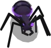
Ant nymph
30 health · 9 power · not spawned
WORKER
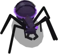
Ant worker
45 health · 7 power
SCOUT
Ant scout
60 health · 18 power
STRIKER
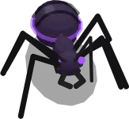
Ant striker
100 health · 27 power
TANK
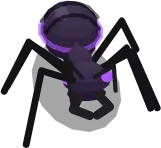
Ant tank
180 health · 38 power
BOSS
Ant boss
500 health · 60 power · not spawned
Class
Speed (tiles/frame)
Size (px)
Reaction (frames)
Rear shot
Special
DNA
Shards
Nymph
0.03
14 × 7
15
—
—
1
2 (pays 0)
Worker
0.024
20 × 9
25
—
—
1
3
Scout
0.022
22 × 10
5
—
LEAP
1
3
Striker
0.018
28 × 12
10
—
MANDIBLE FRENZY
1
5
Tank
0.012
36 × 16
22
—
MANDIBLE FRENZY
2
8
Boss
0.008
26 × 12
8
—
MANDIBLE FRENZY
4
20
The tutorial's assault ants are level 8: a scout has 72 health and 22 power, a striker 120 and 32.
Beetle
#cc44ff · A domed shell of stacked outlines with an elytra seam and a gloss, a pronotum, a head with a horn and mandibles, six legs, a shadow. The INFO card says: “Armoured and slow: hits hard up close.” Every class but the nymph reflects: any hit that lands on it is sent back 1:1 to its attacker as a separate hit ("REFLECT"). Every beetle has 3 more defense, and none can be pulled by the flux singularity.
NYMPH
Beetle nymph
90 health · 6 power · not spawned
WORKER
Beetle worker
135 health · 5 power
SCOUT
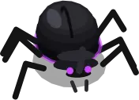
Beetle scout
180 health · 13 power
STRIKER
Beetle striker
300 health · 19 power
TANK
Beetle tank
540 health · 27 power
BOSS
Beetle boss
1500 health · 42 power · not spawned
Class
Speed (tiles/frame)
Size (px)
Reaction (frames)
Rear shot
Special
DNA
Shards
Nymph
0.026
16 × 8
15
—
—
1
4 (pays 0)
Worker
0.02
23 × 11
25
—
—
1
5
Scout
0.018
26 × 12
5
—
LEAP
1
6
Striker
0.015
32 × 14
10
—
CARAPACE SLAM
2
9
Tank
0.01
42 × 18
22
—
CARAPACE SLAM
2
14
Boss
0.007
31 × 14
8
—
CARAPACE SLAM
5
30
Scorpion
#8844ff · Low and flat: a carapace, a plated back, eight legs, snapping pincers, and a segmented tail arched over its back that strikes forward when it attacks. The INFO card says: “Strikes with a stinger tail from behind.” Strikers, tanks and bosses sting from the rear (a plain shot).
NYMPH
Scorpion nymph
65 health · 18 power · not spawned
WORKER
Scorpion worker
105 health · 13 power
SCOUT
Scorpion scout
150 health · 38 power
STRIKER
Scorpion striker
240 health · 54 power
TANK
Scorpion tank
400 health · 75 power
BOSS
Scorpion boss
1200 health · 120 power · not spawned
Class
Speed (tiles/frame)
Size (px)
Reaction (frames)
Rear shot
Special
DNA
Shards
Nymph
0.026
18 × 9
15
—
—
2
6 (pays 0)
Worker
0.021
26 × 12
25
—
—
2
8
Scout
0.019
30 × 13
5
—
LEAP
2
10
Striker
0.015
36 × 15
10
30 every 90 frames
VENOM LANCE
3
15
Tank
0.009
48 × 20
22
53 every 75 frames
VENOM LANCE
3
22
Boss
0.006
35 × 16
8
83 every 60 frames
VENOM LANCE
6
45
Spider
#cc2244 · A round abdomen held high with its mark on it, eight long legs with high knees, a cluster of eyes, fangs and palps. The INFO card says: “Spits webs and venom from a distance.” An arena spider wears no name tag and lurks behind props when idle (Behaviour). Its rear shot webs whatever it hits: 20% speed for 300 frames (literals, js/predator.js:534).
NYMPH
Spider nymph
80 health · 23 power · not spawned
WORKER
Spider worker
140 health · 17 power
SCOUT
Spider scout
200 health · 48 power
STRIKER
Spider striker
300 health · 72 power
TANK
Spider tank
520 health · 93 power
BOSS
Spider boss
1800 health · 150 power · not spawned
Class
Speed (tiles/frame)
Size (px)
Reaction (frames)
Rear shot
Special
DNA
Shards
Nymph
0.032
13 × 10
15
—
—
2
8 (pays 0)
Worker
0.026
20 × 13
25
—
—
2
11
Scout
0.024
22 × 15
5
—
LEAP
3
14
Striker
0.02
26 × 18
10
27 every 85 frames
WEB SNARE
3
20
Tank
0.014
34 × 22
22
45 every 75 frames
WEB SNARE
4
28
Boss
0.008
40 × 18
8
72 every 65 frames
WEB SNARE
8
60
Mantis
#44dd55 · A long abdomen under folded wings, a raised neck, a triangular head with big eyes, raptorial forelegs folded in prayer that shoot forward when it strikes; four walking legs. The INFO card says: “Ambushes with its raptorial forelegs.” Its rear shot is announced "AMBUSH!" and does nothing more than a plain shot.
NYMPH
Mantis nymph
40 health · 12 power · not spawned
WORKER
Mantis worker
78 health · 12 power
SCOUT
Mantis scout
110 health · 34 power
STRIKER
Mantis striker
180 health · 52 power
TANK
Mantis tank
320 health · 70 power
BOSS
Mantis boss
1100 health · 110 power · not spawned
Class
Speed (tiles/frame)
Size (px)
Reaction (frames)
Rear shot
Special
DNA
Shards
Nymph
0.032
14 × 8
10
—
—
1
4 (pays 0)
Worker
0.028
18 × 9
25
—
—
2
7
Scout
0.026
20 × 10
4
—
LEAP
2
9
Striker
0.022
26 × 12
8
28 every 80 frames
BLADE FLURRY
3
14
Tank
0.014
34 × 15
18
48 every 70 frames
BLADE FLURRY
3
20
Boss
0.009
30 × 14
7
80 every 55 frames
BLADE FLURRY
6
40
Moth
#dd8822 · It flies: the body hovers over its shadow, four beating wings with eyespots, feathered antennae. The INFO card says: “Blows dust clouds that dull the senses.” Its rear shot is announced "DUST!" and does nothing more than a plain shot.
NYMPH
Moth nymph
85 health · 25 power · not spawned
WORKER
Moth worker
154 health · 19 power
SCOUT
Moth scout
220 health · 55 power
STRIKER
Moth striker
340 health · 80 power
TANK
Moth tank
560 health · 102 power
BOSS
Moth boss
2000 health · 162 power · not spawned
Class
Speed (tiles/frame)
Size (px)
Reaction (frames)
Rear shot
Special
DNA
Shards
Nymph
0.031
12 × 9
12
—
—
2
8 (pays 0)
Worker
0.025
20 × 12
25
—
—
2
13
Scout
0.023
22 × 13
5
—
LEAP
3
16
Striker
0.018
30 × 16
9
32 every 78 frames
BLINDING DUST
4
22
Tank
0.011
40 × 20
20
55 every 66 frames
BLINDING DUST
4
30
Boss
0.007
46 × 22
7
92 every 52 frames
BLINDING DUST
9
65
What
Value
Code
A creature's highest level
999
js/levels.js:44
The arena's level (creatureLevel(): the band's top, never under 5; new clones come out at it)
5
js/levels.js:71-74
Defense weight
0.6
js/levels.js:152 (literal)
The fastest arena creature (mantis worker); you walk at
0.028; 0.13 tiles/frame
js/species.js:129; js/facilityplay.js:19
Where it lives: js/species.jsSPECIES · js/clone.jsspawnCreature (514-547), applySpeciesBody (344-486) · js/levels.jssetPredatorLevel, defenseMult · js/predator.js · js/bugs3d.js, js/beetle3d.js
Decisions
“There needs to be a level and stats system like in Pokémon for all entities. All followers have a base stat modified by their personalities, then the predators and clones should have a similar system, and they should have the level and type of npc visible next to their health bars.”REPORTED · js/levels.js:4-7 · commit 947d301 (“This will replace the current combat system.”)
“Make the predators on the map — the actual enemies — the new form of beetle, and create the upgraded ants and all the other predator species as well.”REPORTED · js/bugs3d.js:4-6 · commit 3b757c6
“The vortex's seem too strong … make beetles immune” — and “boss level predators” too.ASKED · js/helpers.js:110-111 · commit 83b4646
Open / not built
Nymphs and bosses are never spawned. The Sewers' boss room is “Shut, until the boss is designed”. Nests are “Not yet”, and what is in the drilled hole (the insect burrow) is still open.
“the different predators will have more attacks with cool downs later” (docs/COMBAT.md §4): a creature still attacks the player only by biting.
Behaviour: calm, provoked, prey, chase
States: wander (calm), hunt (no prey: going for the Crystal), attack (chasing or biting one target). Arena creatures start wandering; the tutorial's assault starts hunting.
Calm or in a fight. A creature is in a fight while an alarm is up or while it is provoked. Calm, it never goes hunting. These provoke it:
any hit that lands, even with no attacker (a burn tick, burning ground, a sentry's round), after which a creature with no prey walks to the Crystal;
the player touching it (within 0.9 tiles);
turning on a prey it picked (until it lets that prey go);
an alarm near it (none can be raised today: The alarm).
Whom it goes for (predatorPickPrey). Every 12 frames it looks at your followers and clones within about 12 tiles, and at you:
Range. Whoever hit it last counts from 12 tiles, through walls. Anything else counts within 6 tiles, and must be in sight beyond 1.5 tiles.
Calm: it takes only what is down to 34% of its health within 3 tiles; for you, your last hit. In a fight: anything within 2.5 tiles, or anything down to 50% within 6.
Score:1 × (1 − distance / 6), plus 1.2 × the share of health lost (2 × for you, with hits left / 3 as your health), plus 1 for its last attacker, plus 0.35 for its current target. On your last hit you score 1.33 for weakness alone, against 0.84 for a follower at 30%.
It turns to a new prey once its reaction delay (the species tables) has run out, and is provoked from then on. With no prey in a fight it hunts the Crystal; calm, it wanders.
When it is hit. The attacker becomes its target at once if it is valid prey; your shots name you. A rear-shooter hit from behind (more than 135° off its facing) does not turn.
The chase. Beyond 1.5 tiles it follows the route round the walls at full speed. A wind-up under way is cancelled ("DODGED" over you). In reach it stands still and bites.
Letting go. It lets go of a target that dies, becomes invalid, or is more than 13 tiles off. With no alarm up it calms down, so it never follows a knocked-back player to the Crystal.
A creature shot from beyond 13 tiles turns, then lets go at once (measured: calm again within 30 frames).
The service gun and machine gun have no range limit, and a tapped lock holds a target up to 18 tiles away.
The Crystal. It walks the route there. Within 0.8 tiles it bites the Crystal in the same two beats, for raw power.
Specials and shots skip you. A creature fighting only you charges its special and never fires it.
Wandering. Its next spot is arena floor 3 to 9 tiles off and in sight. Failing that, a spot it can walk to within 15 tiles, then the nearest arena cell it sees, else it stays put.
It walks at 0.7 × its speed for 90 to 210 frames, and pauses 20 to 60 frames on arriving.
Home is the arena. A calm creature far from it can stand still for good: one left in the Crystal Chamber never moved.
Spiders lurk. An idle arena spider goes from cover to cover. Cover is a floor cell just north or west of a crate, crate stack or barrel: 9 cells, within 1.3 tiles of their props. Each new cover is at least 2 tiles away, and it rests there 480–900 frames.
Resting there calm, it is drawn at 0.6 opacity, with no bar, tag or glow.
The auto-lock (nearest within 9 tiles) skips it, but a tap still locks it.
An arena spider never wears a tag. Provoked, under an alarm, or with prey, it comes out.
Separation. Creatures push apart within 0.9 tiles, except while attacking.
Followers ignore a calm wanderer. They fight provoked creatures, hunting ones, and whatever the enemy card sends them at.
Where it lives: js/predator.jsupdate (216-472), predatorPickPrey (20-35), onHit, evaluateUtility (attack 1, hunt 0.4–0.6, wander 0.1; a 0.15 margin to switch) · js/combat.js:22COMBAT.prey · js/facilityspawn.jsfacilityWanderTarget, SPIDER_LURK (83-86), spiderLurking · js/targeting.jstargetNearest · js/npc.js:196-198
Decisions
“It feels like I'm invulnerable if I'm really trying, the different predators will have more attacks with cool downs later but they should feel more dangerous, make them target you if you are weak especially. They should target weak targets and the player has a health bar too. They should also target you if you attack them.”ASKED · docs/COMBAT.md:60 · commit e84f35d
“Spiders should have no tag and should hang out near objects that reveal it only partially when idle.”ASKED · docs/COMBAT.md:101 · commit e84f35d
“They should turn to hit you if you're super close, and they won't shoot at you. If you brush up against them or they walk up to you, they hit you — and you get knocked back a little after each hit.”REPORTED · js/config.js:285-287 · commit 47e82b6
Open / not built
“Spiders web a clone that chases them” still needs a rule (docs/BRIEF-REPORT.md).
The same list's “A creature walking to the Crystal turns only on what bites it” is out of date.
Specials and rear shots
Scouts LEAP; strikers, tanks and bosses use their species' special; workers and nymphs have none.
Charge builds each frame the creature is engaged: provoked, under an alarm, hunting or attacking.
Fire. At 100 the special fires once its condition holds.
Wind-up. The creature is rooted, its name floats over it, and its charge ring flares.
Who it hits. "Foe" is a follower or clone. No special touches the player or reaches through a Photonic Shield. "Power" is the bite's.
Special
Who
Charge / frame → frames
Fires when
Wind-up
Active
What it does
LEAP
every scout
0.55 → 182
under 40% health, a foe within 4.5 tiles
20
26
jumps 2.8 tiles away from the nearest foe (shorter, or none, past a wall); no damage
MANDIBLE FRENZY
ant striker, tank, boss
0.4 → 250
a foe within 1.6 tiles
24
72
6 strikes, 12 frames apart, each 0.55 × power to every foe in range; it keeps moving
CARAPACE SLAM
beetle striker, tank, boss
0.32 → 313
a foe 1 to 5 tiles off (never in melee)
30
22
charges 2.6 tiles; each foe within 1.2 tiles takes 1.5 × power once and is knocked back
VENOM LANCE
scorpion striker, tank, boss
0.34 → 295
a foe within 2.2 tiles
28
120
the nearest foe takes 1.6 × power, its defense shredded (×1/0.45) for the duration, then 5 toxic ticks, 24 frames apart, of 0.18 × power
WEB SNARE
spider striker, tank, boss
0.3 → 334
a foe within 2.6 tiles
26
1
every foe in range moves at 18% speed for 300 frames; no damage
BLADE FLURRY
mantis striker, tank, boss
0.38 → 264
a foe within 1.8 tiles
22
40
4 strikes, 13 frames apart, each 1 × power to every foe in range
BLINDING DUST
moth striker, tank, boss
0.3 → 334
a foe within 3 tiles
26
150
every foe in range: 45% speed and defense shred ×1/0.55 for 180 frames, then 5 toxic ticks, 30 frames apart, of 0.12 × power. It does not blind
The rear shot (scorpion, spider, mantis and moth strikers, tanks and bosses; numbers in the species tables).
The timer counts up only on frames when the creature is not attacking, and is not wandering or is provoked.
The aim: the nearest of your units within 6 tiles behind it (more than 90° off its facing), else its last attacker within 6. It turns its rear and fires a 0.18 tile-a-frame shot that hits the first unit of yours it passes within 30 px of.
In practice it shoots while hunting with your units behind it, never while chasing or biting. Measured: a spider striker biting a follower for 1200 frames fired none.
Dead code: charged shots (×1.8 and an element); nothing charges a creature.
Where it lives: js/abilities.jsABILITY_DEFS (19-63), SPECIES_ABILITY (65-72), abilityTick, _abShouldFire, _abStartActive, _abRunActive · js/predator.js_abdomenTick (476-550) · js/game.js:1133-1145
The arena spawner
When.4 creatures when the facility starts (enemies are not saved). Then a check after 480 frames and every 1200 frames (20 s) after. Each check makes one creature if fewer than 7 are alive, so a death is refilled at the next check. The tutorial's ants do not count.
Which. The species with the fewest alive, out of 6 (ties at random). The class by weight: scout 3, worker 3, striker 2, tank 1. The level is uniform, 2 to 4.
Where. Up to 30 random cells of the arena's 514. It takes the first at least 11 tiles from you, 4 tiles from other creatures and out of your sight, else the best of the 30. Not in the website's background.
Where it lives: js/facilityspawn.jsFP_SPAWN (11-16), facilitySpawnInitial, facilitySpawnTick, facilitySpawnSpot, _fsPickSpecies, _fsPickClass
Open / not built
No owner quote sets these numbers (commit 3ef37ec has no message).
Nothing spawns outside the arena, and levels never rise.
A fight, beat by beat
Rest. In reach, its rest runs down.
Rear-back. It rears back for the wind-up, the dodge window. Over it, a ring closes and fills, a chevron points at the target, and the word BITE shows; a mark drops over the unit it is biting. All of it is red for a creature, teal for a clone.
The bite lands if the target is still in reach; leaving reach during the wind-up cancels it. Then the rest starts again.
Whom it hits. One unit: its target, else the nearest of yours in reach. "Everyone in reach" is the old rule, COMBAT.bite.splash (off).
What changes it: smoke makes half its bites miss; weakened, it bites at 0.6 × power; a Photonic Shield stops it; the Technomancer's arc cancels a wind-up and holds the next one off for 30 frames.
The damage pipeline (applyDamage), in order:
A recruit walking in, or a unit in spawn protection, takes nothing.
The attacker's multipliers: BERSERKER, bonds, ARMY SURGE (×1.6).
A creature that is hit is provoked, even if the hit is then stopped.
The element wheel.
A frozen target takes nothing; then smoke-form evasion.
A creature's shield absorbs the whole hit.
Defense shred, then defense, then a bond's defense.
The cap: on your followers and clones, no hit takes more than 34% of max health. IRON WILL then takes ×0.75.
The hit lands, with its number and the lag bar.
A beetle reflects it back. At 0 the unit dies. A follower gains +3 ultimate charge a hit, +20 a kill.
The cap. 3 × 34% = 102%, so the third capped hit kills (the fourth with IRON WILL). Measured on a level-9 follower (25 health, defense 8): an ant scout L4 (power 17) and a moth tank L4 (power 95) both took exactly 8.5. By the formula, every striker's and tank's bite in the arena is capped on it, and every scout's but the beetle scout's. The big creatures differ in health, not in what one bite does.
Your hits. Any hit takes exactly one, then a grace; a bite also pushes you away. At 0 you are put back by the Crystal with all three, and another grace follows. Only bites and burning ground hurt you.
The Crystal has 300 health and takes raw power, with no defense and no cap.
With no alarm up it heals 0.6 a second.
At 0: CRYSTAL DESTROYED, the game is over.
During the tutorial's assault, under 15% it is saved instead: mended to 60%, the ants called off, the assault restarted.
Feedback.
Numbers rise from the unit: in the element's colour over a creature, "−n" in red over yours, "+n" in green for healing. Only hits with a source show one, so burn ticks show none.
A pale lag segment drains from the bar, and DEFEATED shows over the dead.
Over a creature: a 36 × 6 px bar (orange, then yellow, then red), its plate ("Lv 3 MANTIS SCOUT"; none on an arena spider), its charge ring, and a blue bar while shielded.
What
Value
Code
Bite wind-up (the dodge window); rest between bites; one cycle
18 frames (0.3 s); 45; 63
js/combat.js:8
Bite reach
1.5 tiles
js/combat.js:8
The cap; capped hits that kill
0.34; 3
js/combat.js:9
The lag bar drains over; DEFEATED shows for
36 frames; 90 frames
js/combat.js:11-12
Hit flash; a damage number's life
6 frames; 36 frames
js/helpers.js:237, 250 (literals)
Your hits; grace after a hit; grace after the knockdown; push per bite
3; 60; 90 frames; 0.7 tiles
js/config.js:198-209, 298
The Crystal heals per frame (no alarm)
0.01
js/config.js:167
IRON WILL; BERSERKER under 30% health
×0.75 taken; ×1.5 dealt
js/traits.js:7, 23 (literals)
A follower's plain hit / element attack / special (1 and 4 WILL; WILL regained: 0.005 a frame)
every 45 / 40 / 70 frames
js/combat.js:200-226 (literals)
A sentry (two in the Crystal Chamber, one in the main hallway, while their relay is online): range, rest, round
9 tiles, 50 frames, 8
js/stations.js:220
Where it lives: js/combat.jsCOMBAT (7-23), drawBiteTelegraphs, noteHit, healUnit · js/predator.jsbite, _biteTick · js/helpers.jsapplyDamage (148-275), hurtPlayer · js/draw.jsdrawHealthBar, _drawPredatorBars · js/game.js:604-639 · your weapons: The player
Decisions
“Combat must be more readable and understandable, taking inspiration from the clear feedback of games like RuneScape. Currently, predators can appear to eliminate the player's creatures almost immediately. Most creatures should normally survive several hits, so investigate the actual combat logic before simply increasing health.”ASKED · docs/COMBAT.md:3 · commit 42fcf0c
“the main character can only get hit three times by an insect or a predator, then they get knocked back to the Crystal and it resets to three.”REPORTED · js/config.js:201-202 · commit f8495d5
Open / not built
Every COMBAT number is “a first pass so a fight can be read; they are not balance”, and none has been playtested.
The arc cutting a bite short awaits confirmation (docs/TECHNOMANCER.md §4).
Elements and status effects
The wheel. Fire beats Flux beats Toxic beats Fire; Electric beats Core beats Ice beats Electric. The element that beats the target's does ×1.3, the one it beats ×0.7, and ice does 0 to core.
It almost never applies: no creature has an element.
The one live case: a creature's toxic ticks on your followers, ×1.3 on a fire follower.
Projectiles carry no element to the shield check.
Effect
Set by
What it really does
burning
fire's ring (30%), fire bombs, burning ground, Volcanic Eruption
a source-less hit every 20 frames, with no number. It provokes a creature, which then hunts the Crystal if it has no prey
burning ground
fire bombs (a bomb splashes within 0.95 tiles and bounces 3 times)
a tile burns 600–900 frames, 160 tiles at most. Every 30 frames it hits everyone on it, and you lose a hit (burning ground)
frozen
ice's lance (8%); the Blizzard field
no damage at all while frozen; it keeps moving and biting, and nothing draws it. It thaws at random: the chance starts at 0.01 and rises 0.003 a frame
slowed
the spider's shot (×0.2, 300 frames), WEB SNARE, BLINDING DUST, Ice Burst, the Frost Patch
speed × factor (the last factor wins, the longest timer wins)
damage taken × 1 / factor, before defense and the cap
weakened; smoked
toxic's smoke bomb; the Smoke Screen ultimate
its bite × 0.6; half its bites miss (specials and shots unaffected)
friendly fire
the Disorient ultimate (creatures within 12 tiles, 240 frames)
it stands still and bites every other creature in reach. Its half-power bite is never reset
disoriented; "stun"
flux (15%); electric (40%)
nothing: written, never read
knockback
core's BASH (30%), the flux pull, CARAPACE SLAM
a push decaying ×0.72 a frame; walls stop it. Beetles and bosses are not pulled
shield (creatures)
a tank: +1 to its nearest creature within 4 tiles every 180 frames. A boss: +3 (max 15) within 5 tiles every 60. EMP strips them
a hit with no element, or fire / ice / core, is absorbed whole. Toxic passes and leaves it. Electric hits it ×2 and the overflow goes on (10 becomes 19). Flux is absorbed but never wears it
Where it lives: js/elements.jsgetElementMultiplier (15-22), ELEMENT_PROC_CHANCE (27-34), ELEMENT_ATTACKS, FOLLOWER_ULTIMATES · js/combat.jsupdateStatusEffects · js/abilities.jsapplySlow · js/firebombs.js · js/game.js:756-791 (shields; literals)
Decisions
“make the crystal have access to all the colors from the beginning”ASKED · js/config.js:25 · commit c6eef42 (the comment adds “a creature carries one too”: no code does)
“[...] the fireballs burn the ground where they land. If you get touched by that fire you take a little hit of damage, like the other hazards on the map. The hazard stays on the map for 10 or 15 seconds.”ASKED · docs/FIRE-BOMBS.md:3 · commit 8ab5164 (answered: the ground fire hurts “Everyone”)
Death and what a kill pays
At 0 health a creature dies (DEFEATED). That frame's sweep pays its XP, runs onPredatorDeath, counts the kill and removes the body.
Every death pays, whatever killed it: your units, you, a sentry, burning, bleeding out, the tutorial calling its ants off. Only the class-stage training ant leaves without paying.
Shards: the class's shardDrop, not scaled by level, at once ("◆ n"). A nymph pays 0.
DNA: the class's dnaDrops, under species_class. A nymph's counts as an ant scout's.
Scrap: a 75% chance of a case where it fell, in any room. It holds 1 for a worker, 1 for a scout, 2 for a striker, 3 for a tank.
It lies 60 s and is not saved.
Walk within 1.25 tiles to take it, if the pack has room for all of it.
XP:XP_YIELD[class] × level / 5, so 100 for a level-5 scout.
In the arena: 24–48 a worker, 40–80 a scout, 56–112 a striker, 80–160 a tank.
The killer takes 60%. Units within 4 tiles share the rest, and so does the whole squad when you or a member killed.
A kill with no unit's blow pays 50%.
Bleeding out. Every creature loses 0.01 health a frame (js/game.js:687, literal): about a minute for an ant worker, a quarter of an hour for a moth tank. It pays like a kill. Measured: 10 minutes with nobody fighting paid 151 shards, 32 DNA and 16 kills.
Where it lives: js/drops.jsonPredatorDeath (7-22) · js/game.jsrender (the sweep 690-726) · js/facilityspawn.jsfacilityScrapDrop (134-140) · js/levels.jskillXp, awardKillXp
“make nymphs not grant any points”REPORTED · js/drops.js:6 · commit bf32f27
“we need to get rid of the old systems [...] We need to completely make this game our foundation.”ASKED · commit 9b7758f (“Clones stay; a creature you kill pays its worth in crystals on the spot.”)
“Shards everywhere”ASKED · commit 4f24c86
“make it to where the technicians level up faster, or the experience is shared throughout the squad.”ASKED · Chosen with the user: shared · commit 96ebab6
The economy: every source and sink
Shards (saved).
In: 100 at a new game, then each death's shardDrop. Nothing else pays shards.
Out, a recruit: 30, in the roster only (a random type and element). A full squad asks who makes room first.
Out, a clone: cloneShardCost is the species' price plus the class's (scout 0, striker 2, tank 5), clamped to 5–25. Only a Mutator clones, 1 at a time.
Free: RE-ROLL, EXILE (nothing back), evolving, switching class, Army Surge, dismissing a clone.
DNA (saved, keyed species_class).
In: each death's dnaDrops. Also salvaging the Mutator's fallen clone, or RELEASE: 40% of what it cost.
Out, growing a clone: splices of that species and class. The bay offers scout, striker and tank, so worker DNA never grows one.
Out, upgrades and serum: any DNA, largest stocks first. ARMOR PLATING 4/7/10, SERRATED ARMS 4/7/10, POUNCE 5/8, LONG REACH 4/7. A serum costs 5.
Scrap (stack 30).
In: deaths only.
Out, at the Armory terminal (relay online): 2 make an ammo pack. Laser rifle: 15.
Out, weapon levels: service gun 8, 16; machine gun 12, 24; laser 14, 28. Each level is +30% damage and −12% cooldown.
Ammunition.12 rounds at the start, 60 at most. A pack (stack 9) gives 10 rounds.
Packs: the Armory's case (2), the Security Room's (1), the Gunslinger's locker (4), scrap.
The gun lesson keeps you at 8 rounds or more. The lash and gauntlet spend nothing.
Fuel cells (stack 6). Three cases of 2 in the Front Lobby once its relay is online. Each is 12 laser charges.
Other items come only from cases: power cells, the relay kit, flares, mech parts, mutagen samples, capsules, rocks (no use yet). The Serum Hood makes 1 serum per 60 s, +0.25 per Mutator level above 1, up to 5.
Followers.
In: a recruit, or a free egg. A spot refills 90 s after it was taken, while the roster is under 12.
Out: EXILE, which gives nothing back.
XP is earned, never spent. The tutorial's assault pays 400 to each living follower.
“I would really like a button near the roster, so if the roster is looking slim the user can create a recruit rapidly.”ASKED · js/clone.js:629 · commit b70e68d (and “that needs to be the only way”, commit 6d56297)
“I need to be able to get rid of followers and exile them in room for other followers that I might find or come across.”ASKED · Chosen with the user: EXILE, the word everywhere, and nothing back · commit 9c83d2d
“The exact DNA costs and numerical effects have not yet been finalized. Make these configurable.”The brief · js/mutator.js:40-41 · commit 79a9239
“Do not silently finalize tentative DNA costs or balance values.”The brief · docs/BRIEF-REPORT.md:90 · commit 11a835a
“Do not assume that automatic production eliminates the DNA crafting cost or silently choose a final resource formula. Expose the relevant rules for balancing.”The brief · js/serum.js:6-7 · commit 560a2a3
Proposals waiting for the owner (docs/MUTATOR.md §4):
upgrades and the serum take any DNA;
RELEASE gives back what salvage does;
only the Mutator clones.
Open / not built
Every price is tentative. Scout clones cost more than the brief's “DNA equivalent to roughly two or three enemy kills”.
What the rocks are for.
Player XP as a currency (docs/PLAYER-CLASSES.md §4).
The alarm
While alertActive is up:
every creature is in a fight: it may hunt, its special charges, and a lost prey does not calm it;
spiders do not lurk;
the Crystal does not heal;
a red triangle shows by the room tag.
Measured: with only the alarm set, every arena creature went hunting toward the Crystal.
triggerAlarm(type, x, y) raises it for 10 s and provokes every creature within 6 tiles (all of them for a breach).
Its labels: PROXIMITY ALARM, FACILITY BREACH, ASSAULT.
When it runs out, clearAlarm sends every creature back to wandering.
Nothing calls it.
The only alarm in play is the tutorial's assault. The director holds the alarm up while its ants live. That sends the whole arena down the main hallway at the Crystal too.
The assault.
A 1200-frame countdown.
4 level-8 ant scouts.
1500 frames later, 3 strikers.
3600 frames after the last wave, the rest are called off.
Where it lives: js/alarm.js (triggerAlarm 10-17, clearAlarm, showGameOver) · js/config.js:147-151 · js/game.js:627-642 · js/tutorial.jsTUT, facilityDirectorTick
Open / not built
What raises a proximity alarm or a breach: nothing yet, though the in-game index describes both. No owner quote names the alarm.
Clones: creatures on your side
A clone is its species-and-class row with ×4 health and ×1.5 power (its shot too), at the arena's level.
How it fights. It bites in the same two beats under a teal telegraph, but is not rooted while rearing back. Its special and shot hit creatures only, and the cap protects it.
Today. Only a Mutator grows one, and it stays fallen (the Mutator).
The old rule. Up to 4 at a time, each coming back after 20 s.
Decisions
“Clones should use the established designs and characteristics of their corresponding enemy species.”The brief · docs/MUTATOR.md:6 · commit 9601b03 (×1.5 power is a proposal awaiting confirmation)
Where the docs and the code disagree
Creature elements. js/config.js, docs/TUTORIAL.md's enemy-card example and the in-game WHEEL page give creatures elements. None has one.
“survives at least three hits”. js/helpers.js:225 and docs/COMBAT.md say it. With the cap at 0.34 the third capped hit kills.
“A creature you kill” pays. Every death pays. docs/COMBAT.md also calls the bleed “not a factor”; over minutes it kills and pays.
Scrap “in the arena”. It drops in any room.
Rear shots. The in-game index gives each one a cadence (“30 dmg / 1.5s”). None fire in melee.
The in-game species notes.
ANT “No special abilities”: scouts LEAP, strikers FRENZY.
BEETLE armour only “the striker class and above”: every beetle has +3 and reflects. “Fire and flux hit the shell hardest” matches no code.
SPIDER's shot “also poisons”: it webs.
MOTH “blinding”: nothing blinds.
Ice's “hard freeze”. In the code, freezing is damage immunity.
“never out of” the arena. True only while calm.
Stale comments. js/bugs3d.js:27 names a gone file. js/predator.js:134-135 says a hit from behind speeds the next shot; it delays it.
Dormant code.
Read but never set: element, charged, blinded, untargetable, isWanderer, invulnerable.
Set but never read: hitStun, disoriented, chainArcFlash, defenseBoost.
Unused: entryDelay, loadPreset, PREDATOR_TYPES, the old 2D creature renderer (js/draw.js:209-927), and triggerAlarm (no caller).
Found while writing this
Frozen means immune. A frozen creature takes no damage, keeps moving and biting, and is not drawn frozen.
The hit flash never clears. Nothing counts it down on a hostile creature: once hit, it stays at 85% opacity for good.
Disorient's half power is permanent (disorientPowerFactor is never reset).
The bleed pays. Shards, DNA, scrap and the kill count: 151 shards in 10 idle minutes. It also counts toward the Gunslinger's “defeat 3 creatures”. Income by design, or a leftover?
The tutorial's alarm brings the whole arena. It also sends the arena's 4–7 creatures (levels 2–4, all six kinds) at the Crystal, besides the seven ants.
Removed creatures still pay. Called-off tutorial ants and the gun lesson's removed training ant pay; the class-stage training ant does not.
Sniping beyond the leash. Shooting from beyond 13 tiles draws no retaliation.
Creatures can be stranded. A creature that calms down far from the arena can stand still for good, even by the Crystal, where the sentries would provoke it (not measured end to end).
No rear shots in melee. Rear shots stop while attacking. Intended, or an accident of the early returns?
Hit from behind delays the next shot. The comment says it should speed it up.
Electric and flux on shields. Electric deals 2 × damage − shield through a shield; flux never wears one down.
Worker DNA never grows a clone. Only upgrades and serums spend it.
Specials never fire on the player alone.
XP for your own kills. The squad's share when you make the kill is read from the code, not measured.
A tank may shield an egg. A tank's shield pulse may go to a follower egg, which is on the creatures' side (not measured).
The interface 07
The game is one page, game.html: one full-screen canvas with page elements (DOM) laid over it. The bars, the cards, the Command Center and the guide are page elements; the network panel, the objective plate, the target dial and most panels are drawn on the canvas. This part covers the two layouts and every piece on them, the Command Center, the panels, the ? guide and the controls; how they look is in part 08. The old strip game's interface (its canvas index, codex, build menu, squads A/B/C, wave banner, selection chip) went with that game in commit 9b7758f.
Two layouts and the 700 px line
The corners (701 px wide and up). Each group of the HUD has a corner: me (shards, health, ultimate) top left; the place (room tag, network panel, objective plate) top right; the squad and its orders bottom left; the target (dial, ammunition, enemy card) bottom right. The dock runs along the bottom middle, and the Command Center opens as a carousel.
The phone (700 px wide or less). No dock: a round radial-menu hub on the left edge fans out SQUAD, ROSTER and ORDERS. The objective plate folds into a mailbox, the battle tool is a BATTLE chip, and SETTINGS and CLONES are round buttons drawn on the canvas. The Command Center keeps its grid of cards and side panel.
Several functions test the line, each in its own way:
hudCorners() is partyOn() && innerWidth > 700 (partyOn() is false in ?attract). It sets body.corners, the carousel and the card on the fly.
mixToolWide() (innerWidth > 700) keeps the battle tool open for good; objectiveCompact() (innerWidth <= 700) makes the mailbox.
dockHasMenus() (canvas.width > 700, the visible width) decides the phone's round SET and CLONES buttons.
The stylesheet has 11 max-width: 700px blocks and 2 min-width: 701px blocks: the dock hides and the radial menu shows at 700 px.
The other breakpoints (widths 360, 420, 460, 480, 520, 560, 820, 860, 900, 1100 and 1180 px; heights 600, 640 and 760 px) resize pieces without moving them. The ones worth knowing:
≤ 560 px: the top row wraps, and the two bars go under the shards and the room tag.
≤ 820 px: the carousel stacks into one column (an iPad in portrait, 820 × 1180, included).
≤ 900 px: the corners' widths shrink. 701–860 px: the dock's labels hide (icons only).
A canvas panel open on a screen ≤ 600 px high hides the top HUD and the dock.
Where things sit. The canvas pieces place themselves every frame from the page elements' boxes: the network panel hangs from the room tag, the corners' objective plate from the network panel, and the dial stands on the enemy card (corners) or under the plate (phone). Canvas panels keep between uiTopSafe() (10 px under the top HUD) and uiBottomSafe() (10 px over the dock).
The iPad's visible area.syncVisibleArea() publishes the visual viewport as --vvw, --vvh and --vv-bottom; every control anchored to the bottom adds --vv-bottom. Safari corrects its size without an event, so it is measured on orientation, page-show, focus and visibility changes (and 150 and 600 ms after), at 50, 300, 800, 2000 and 4000 ms after load, and every 30 frames.
Layers (z-index): canvas; top HUD 10; dock, squad bar 12; battle tool 13; card on the fly 14; aim prompt 15; radial menu 30; NEW GAME chip, "who makes room" 40; Command Center 60; unit info card 92; ? guide 2000; MAP view 3000; game-over card 10000; error panel 99999.
Body classes: corners; squad-bar (a phone: the BATTLE chip moves up over the bar); ccOpen (hides the HUD, the dock, the radial menu, the battle tool, the squad bar, the card on the fly); panel-open (a canvas panel is up: hides the battle tool, the squad bar, the card on the fly, the NEW GAME chip); info-open (hides the radial menu); alarm-on, facility-play, party-pick, tech-aiming; attract (on <html> from the first paint).
Canvas panels' scale (1.0 on a canvas under 600 px)
1.15
js/uikit.js:16
Visible area measured every
30 frames (0.5 s)
js/config.js:88
Where it lives: game.html (stylesheet: base HUD :21-107, NEO-FUTURE skin :474-517, dock :518-523:659-673, radial menu :525-559, Command Center :560-641, battle tool :700-743, squad bar :744-781, carousel :811-910, THE CORNERS :916-981; markup :1040-1556) · js/config.js:47-98syncVisibleArea · js/party.jshudCornerspartyBarRender · js/game.jsrender (the body classes)
Decisions
“This is the correct direction for this hud, all parts”ASKED, after ten HUD layouts were drawn (docs/images/hud-corners.jpg picked) · docs/TUTORIAL.md:273 · commit 70ffb26
“it looks bad on my iPad.”REPORTED, with an iPad screenshot · tests/visiblearea.js:3 → the visible-area variables
“update the HUD so that all parts are visible, the wave information is hidden.”REPORTED, with a tablet screenshot · tests/hud.js:3 → the top HUD is one flex column, so its pieces cannot overlap
Open / not built
The phone is not part of the corners design (“A phone is not part of it.”, docs/UI-STYLE.md). It keeps the layout it had before, and some pieces cannot be reached there (see the phone, below).
The line is tested two ways: innerWidth (the corners, the battle tool, the mailbox) and canvas.width (the round canvas buttons, the panels' sizes). With user-scalable=no they should agree; no test checks a case where they do not. A phone on its side (wider than 700 px) gets the tablet layout.
The top HUD
Me, top left
Shards: a still gold crystal cluster (No. 3 "twin and chip": two tall hexagonal crystals and a chip; one SVG, no animation) and the count, written only when it changes.
Health is a count of hits: 3. Two black ticks cut the bar in three. render() sets its colour: #0f8 with three hits left, #ff0 with two, #f22 with one (over the stylesheet's teal). The third hit knocks the player back to the Crystal with all three again: "◈ KNOCKED BACK TO THE CRYSTAL".
Ultimate bar: the charge out of 100, or the surge time left while a surge runs. Its caption is one of ULTIMATE n%, NO SQUAD IN RANGE · n%, SIPHON OFF · n%, TAP — ARMY SURGE (full: the bar pulses gold, steady for reduced motion) or SURGE ns. A tap fires the army surge. The ⌁ at its right end switches the siphon (grey when off) and keeps its click from reaching the bar. The caption is clipped with an ellipsis; its type is 15 px, 12 px at ≤ 900 px.
The place, top right
Room tag: the room under the player, from 17 names (the Front Lobby is called "Computer Lab"). A doorway keeps the room just left. Written only when the name changes.
Alarm triangle beside the tag while an alarm is up: it blinks every 0.9 s (still for reduced motion). There is no banner.
Network panel (canvas), under the tag and right-aligned to it (a canvas under 600 px wide puts it at uiTopSafe()). A dial: the outer ring (24 segments) is the relays online, the inner ring the rooms with power, the middle "on / relays". Then the state in its colour, ⚡ ROOMS p / n and RELAYS r / 6, and one line for the player's room: THIS ROOM HAS POWER, THIS ROOM HAS NO POWER or NO POWER ANYWHERE. It is not tapped; its text has a dark outline instead of a box.
Objective plate (canvas). In the corners: 304 px wide, its right edge in line with the room tag's, 10 px under the network panel. Elsewhere: 350 px wide at x 12, y 158. It shows OBJECTIVE n/7 · TITLE with up to three lines of text and three of hint; after the tutorial, the class's own stage (CLASS · i/n · TITLE), then a closing line. It takes the class's colour once there is a class, and hides while the class picker or the pack is up. On a phone it folds into a mailbox (see the phone).
NEW GAME chip: pinned at left 12, top 118 px on every layout while the game runs (hidden by panel-open; not made in ?attract). A click asks “Start a new facility game? Your saved progress will be lost.” and then starts again.
What
Value
Code
Hits the player can take
3
js/config.js:208
Grace between two hits
60 frames (1 s)
js/config.js:209
Ultimate bar's full charge
100
js/config.js:307
Army surge: length; damage
600 frames (10 s); × 1.6
js/config.js:308-309
Siphon: reach; one follower's wisp every; its travel; charge per wisp
Shard icon; its count's type (≤ 900 px: 46, 26; ≤ 560 px: 38, 22)
60 px; 36 px
game.html:647-648 (css)
Health bar; ultimate bar height (≤ 900 px: 32, 24)
40 px; 30 px
game.html:489:493 (css)
The bars' column in the corners (260 at ≤ 900 px); the alarm triangle (36 × 33, 30 × 28)
400 px; 46 × 42 px
game.html:924:650 (css)
Where it lives: game.html:1044-1070 (markup) · js/game.jsrender (health :551-559, ultimate :561-597, shards :625, alarm :627-628, room tag :633-634) · js/hudgems.js · js/helpers.jsfireArmySurgetoggleSiphonsiphonTick · js/facilitynet.js · js/tutorial.js:222-284facilityDrawObjective · js/facilityplay.js:560-566facilityPlayChip
Decisions
“the shards count at the top could be a rotating series of crystals that has a number near or around it”, later “change the shard icon look on the main page UI, it looks bad”REPORTED · js/hudgems.js:4-5 → picked from the option sheets (docs/images/shard-icons.png, shard-cluster.png): the cluster, No. 3 "twin and chip"
“the main character can only get hit three times by an insect or a predator, then they get knocked back to the Crystal and it resets to three.”REPORTED · js/config.js:201-202 → the bar cut in three
“Shards everywhere”ASKED (the Level 1 questions) · commit 4f24c86 → the money is "shards" on screen; the Crystal you protect keeps its name
The target: the dial, the ammunition, the enemy card
The gun finds its own target. A round dial with the target's picture fires at it, a small ammunition pill sits beside it, and an enemy card names the same creature; a tap on the card sends the squad at it. In the corners the dial stands over the enemy card at the bottom right. On a phone the dial is at the top left, beside the menu hub and under the mailbox, and the enemy card sits over the BATTLE chip.
The lock
Every 8 frames, the nearest creature within 9 tiles that the player can see (no wall between) becomes the target. The gun is armed quietly, and orange-to-red corners close in on it over 24 frames; then four red corners stay on it.
A creature at least 1.6 tiles nearer takes the lock over. The lock is dropped (and the gun put away) past 12 tiles, 18 for a tapped lock, or when an automatic lock's target is out of sight and more than 3 tiles off. With nothing in range the gun is put away.
A lurking spider is passed over; a tap still locks it.
Switch: a tap on another creature locks that one and keeps it, even when another is nearer. The tap is a lock, never a shot. A press on the locked creature is the gun's: a click is a shot, holding keeps firing.
Fire: a click on the dial is a shot; holding it keeps firing at the gun's rate wherever the finger goes. A click while the gun cycles fires when it is ready. Out of ammunition, the hold ends with one "OUT OF AMMO".
The dial and its INFO card
The dial pops in over 12 frames: the target's portrait in a disc, a health ring (green over 50 %, yellow over 25 %, red), LV n at the upper left, a gun badge at the lower right (red while the trigger is held, amber while the gun cycles, grey when dry; a tentacle with the Mutator's lash, a bolt with the Technomancer's gauntlet) and an i at the upper right. Off the corners the creature's name is written under it.
The i opens a slab card: level · class · element; HEALTH / BITE / SPEED; a line about the species and one about the class (TARGET_NOTES, the only flavour lines it shows). In the corners it opens to the dial's left, its foot level with the dial's; elsewhere to the right, or under the dial. Escape closes it.
The ammunition pill
A small cartridge (a fuel cell, a tentacle or a bolt, by weapon) with the count: blue-grey at rest, amber and breathing while armed, red when dry. With nothing locked it stands where the dial comes up. A tap while armed stows the gun until no creature is in range or one is tapped. The Mutator's serum pill is drawn beside it.
The enemy card
Its creature is the one the gun is locked on, so the dial and the card are always one creature (with the gun put away: its creature while near and in sight, else the nearest in range). It shows the portrait, the kind (SPIDER STRIKER), LV n · ELEMENT in the element's colour, a health bar and HP h/m · BITE b; it is built once per creature and updated in place, so a press is never lost to a rebuild.
Its strip says ATTACK · EVERYONE n or ATTACK · SELECTED n (a phone with an element picked: ATTACK · FIRE n); once sent, ATTACKING · k OF n; with nobody to send, NO ONE TO SEND.
A tap gives each unit in the pool (the squad, or the picked cards, which win) an attack order on that creature. It ends when the creature dies, after 30 s, when the creature is more than 22 tiles from the player, or with another order (RETREAT, HOLD, COME).
While a technician's ability waits for an enemy, a tap on the card picks its creature.
What
Value
Code
Auto-lock reach
9 tiles
js/targeting.js:14
Lock dropped beyond; a tapped lock kept to
12; 18 tiles
js/targeting.js:14
Lock checked every; dial pop-in; closing corners
8; 12; 24 frames
js/targeting.js:14
A creature takes the lock when nearer by
1.6 tiles
js/targeting.js:14
A press this near still counts as on the locked creature; a click while the gun cycles is kept at least
90 px; 30 frames
js/gunfire.js:11
Dial radius (canvas under 600 px: 40); phone: the dial's left edge, beside the hub
52 px; 78 px
js/targeting.js:173:182 (literal)
Rounds the gun holds; rounds at a new game
60; 12
js/config.js:228-229
An attack order: lasts; its leash
1800 frames (30 s); 22 tiles
js/config.js:281-282
Corners: enemy card width (232 at ≤ 1100 px, 214 at ≤ 900 px; --cn-foe)
260 px
game.html:919 (css)
Phone: enemy card width; its pop-in
230 px; 0.3 s
game.html:732 (css)
Where it lives: js/targeting.js (the lock, the dial, the pill, the INFO card) · js/gunfire.js · js/mixtool.js:80-116 (the enemy card) · game.html:730-743:953-960
Decisions
“whenever you get close to an enemy, it automatically takes aim [...] you can hold it or click it to shoot. It also comes with an info button [...] have it so you can switch it by clicking on another creature.”ASKED · js/targeting.js:4-6 · commit 6da6ecc
“click on an enemy, and once you click attack on it, then you can click it as many times as you want to shoot it. Or hold down to fire repeatedly.”ASKED · js/gunfire.js:4
“move the information where it says ammo or armed up where the old little index UI shows up for the predators [...] make it subtle, like an icon with ammo and have a number on it”ASKED · docs/TUTORIAL.md:231 · commit 0666312
“whenever you get near an enemy, a little index pops up in that little corner as well, and you can have your followers attack that creature if you tap it, and depending on what creatures you have selected or what followers you have selected, they'll attack it”ASKED · docs/TUTORIAL.md:233 · commit 683bfd5
The squad stack and the card on the fly
The squad bar is three small roster cards, one per squad slot (3). In the corners it is a column stacked over the battle tool at the bottom left; on a phone, a row near the bottom with the BATTLE chip above it.
Each card shows the member in that slot, so the cards never shuffle: its picture (its evolved sheet, else an egg in its element's colour), its name (FIRE BRAWLER or the form's), LV n · STATE in the state's colour, a health bar and an i (its unit info card), outlined in its element's colour. Cards are updated in place, so a tap is never lost to a redraw.
An open slot is dashed. With exactly one follower holding a room it reads + CALL <that follower> (lit teal) and a tap brings it back; otherwise + OPEN SLOT, and a tap opens the Command Center on NOT IN SQUAD.
A tap on a card picks that member; a tap on a lit card lets it go. The picked members are the command pool: RETREAT, HOLD, COME and the enemy card go to them alone. The battle tool names them, ALL goes dark, and the enemy card says SELECTED n.
The electric technician picked on the stack (its chip waits: ⚡ 55 S). Its card on the fly: ELECTRIC · LV 9 · TECHNICIAN, the tags, HP, POWER and SPEED, INDEX ▸ and DISMISS FROM SQUAD. Under the stack, ORDERS TO ELECTRIC TECHNICIAN; at the right, the enemy card says ATTACK · SELECTED 1.
The card on the fly (corners only)
It opens for the member tapped last that is still picked, to the right of the stack, its top in line with that member's card and a tip pointing back at it. It moves up as far as it must to keep clear of the dock and the enemy card.
It shows the picture, the name in the element's colour, ELEMENT · LV n · ROLE (· EVOLVED), tags (state, BRAWL/MAGE/TECH, DEF/BAL/AGG, SQUAD), a health bar with hp / max, POWER and SPEED.
INDEX ▸ opens the unit info card. DISMISS FROM SQUAD ("Holds the room it is in"): the member holds its room, the card closes, and its slot reads + CALL it. EXILE is not on this card: it lives in the roster.
ALL lets everyone go and closes the card; so does HOLD on the member, or anything else that takes it out of the squad. A press anywhere else (the floor, the orders, the enemy card, the dock) puts the card away and leaves the member picked. A press on the card, the stack or the unit info card is not "away".
Who makes room
When + RECRUIT or an egg comes with the squad full, a card asks: SQUAD FULL · 3 OF 3, <NEW ONE> JOINS · WHO MAKES ROOM?. The choices: one button per member (HOLDS THE <ROOM>, or EXILED · NO ROOM HAS A PLACE), NOBODY (the new one holds a room; off when no room has a place) and CANCEL. Nothing is paid and no egg is taken until a choice is made. A member that would be exiled is asked about once more: EXILE <NAME>? with EXILE / BACK.
A technician's ability chip
On a technician's bar card (not in the Command Center): ⚡ LAUNCH (the ability's icon and word) when ready, ⚡ 42 S while it waits, ✕ AIMING while aimed, ⚡ THROWING / SETTING UP / DRILLING / LAYING while busy. A tap starts the aim, with a prompt across the top ("TAP A FOLLOWER TO THROW") and ✕ CALL OFF: a press on the world is the aim's, a squad card picks that follower, the enemy card picks its creature. The chip again, ✕ or Escape calls it off.
What
Value
Code
Squad size
3
js/party.js:13
A technician's first wait after joining
3600 frames (60 s)
js/techabilities.js:28
The electric technician's chip word
LAUNCH
js/techabilities.js:90
State colour: FOLLOWING
#19e6c1
js/status.js:8
HOLDING
#8fe3ff
js/status.js:8
FIGHTING, ATTACKING
#ff4a1c
js/status.js:8
HEALING
#7dff9a
js/status.js:8
RETURNING
#8aa0c8
js/status.js:8
Corners: stack width (--cn-w; 232 at ≤ 1100 px, 214 at ≤ 900 px); a card's height (--cn-card; 50 at ≤ 900 px wide, 44 at ≤ 640 px high); the card on the fly (--cn-fly; 318, 280); the stack's foot over the tool
244; 54; 340; 12 px
game.html:919-922:943 (css)
Phone: the bar's foot over the screen's (--sb-bottom); a card's width (96 at ≤ 420 px) and height (--sb-h; 32 at ≤ 560 px); kept clear of the right edge (SET)
52; 112; 44; 46 px
game.html:750-752:772 (css)
The aim prompt's top
98 px
game.html:792 (css)
Where it lives: js/party.js (the bar, who makes room, partyAddpartyRemovepartySwappartyDisbandpartyExileTap) · js/squadfly.js · js/techabilities.jstechChipState · js/status.js · game.html:744-795:926-981
Decisions
“you can only have three followers in your squad [...] they can have the follower hold that position and the followers will patrol that room until they are called upon again. [...] a new follower will not follow you unless you have room in your squad.”ASKED · docs/TUTORIAL.md:240 · commit 0666312
“the on screen squad roster should shuffle into the nook above the attack menu to the left, remove the element picker and replace with 'all' button the player can select each squad member and pull their card roster information up on the fly and may choose to dismiss from squad from this little side menu and index.”ASKED · docs/TUTORIAL.md:273 · commit 70ffb26
“when I click away, it should still have that character selected, but the card should go away”REPORTED · docs/TUTORIAL.md:277 · commit 204f7a1
“it would not be on the home screen side HUD roster. I think it would be in the main roster with all the creatures in the separate window.”ASKED · docs/TUTORIAL.md:358 · commit 02cea05 → EXILE taken off the card on the fly
“So just get rid of the little box that says how many are selected and keep the little rostered squad”ASKED · docs/TUTORIAL.md:244 · commits 671503e, 3bdf9a4 → no "N SELECTED" chip
“When recruiting a follower requires replacing an existing follower, let the player select which follower to replace”, then “has option to go to a vacancy in the rooms but if not confirm retirement”ASKED · js/party.js:303 · docs/TECHNICIANS.md:154
The battle tool: the squad's orders
In the corners the battle tool is one gold slab, always open (no chip, no ✕): ORDERS TO <WHO>, then ALL, RETREAT, HOLD and COME. It has no tabs. On a phone it is a BATTLE chip that opens a panel with a WHO row (ALL and the six element gems), RETREAT, HOLD and COME; the chip (or a tap near the Crystal) opens it, and ✕, Escape or a tap on the world closes it.
ALL (corners) clears the selection, so the orders reach the whole squad. On a phone an element gem narrows the orders to followers of that element. The facility starts with the orders going to all.
RETREAT: every unit in the pool that is not holding a room (and the Mutator's clone) breaks off for 6 s: it sees no enemy, fires no signature move and falls back to the player. The button reads FALLING BACK meanwhile.
HOLD: each follower in the pool holds the room it is in, leaves the squad and leaves the selection. A full room refuses it and says so.
COME reaches the picked units if any; otherwise the squad and the followers holding rooms, the one held last first, filling the free slots. It says what happened in large type (COME · FIRE MAGE IS BACK IN THE SQUAD, SQUAD FULL · 3 OF 3 · … KEEPS HOLDING). COME also ends attack orders.
The panel is rebuilt only when what it shows changes, and the enemy card's slot is kept apart from it.
What
Value
Code
RETREAT lasts
360 frames (6 s)
js/config.js:278
HOLD button
#8fe3ff
js/mixtool.js:28
COME button
#19e6c1
js/mixtool.js:29
Phone chip's word
BATTLE
js/mixtool.js:25
Orders' pool at a new game
"all"
js/facilityplay.js:252 (literal)
Corners: the tool's height (--cn-tool); its foot over the screen's (--cn-bottom); ALL / HOLD / COME; RETREAT
178; 100; 38; 44 px
game.html:919:935-937 (css)
Phone: the panel's width; the BATTLE chip raised over the bar to
230; 108 px
game.html:705:773 (css)
Where it lives: js/mixtool.js (MIXTOOL_ORDERSmixToolComePoolmixToolRetreatmixToolHTMLmixToolRendermixToolClick) · js/party.jspartyApplyStance · game.html:700-743
Decisions
“the menu should stay open, it shouldn't close unless it's on mobile. This menu is for quick, decisive decisions in battle, like withdrawing from the fight, selecting certain types to attack. Not too much, not too boxy.”ASKED · js/mixtool.js:4-5
“I click hold with just one of my followers [...] whenever I have it selected and I click come, it doesn't come. It still holds.”REPORTED · docs/TUTORIAL.md:246 · commit 44ecb56 → COME reaches the held followers; an open slot reads + CALL
The dock
On a tablet or a desktop, a strip of slab buttons along the bottom middle, in this order: ROSTER (violet: the Command Center), a separator, CLONES (the Clone Bay), SETTINGS, PACK (hidden until the game starts), MAP (the facility map's debug view, part 09) and ? (ice: the guide).
When its buttons do not fit, it slides: swipe it (native scrolling with snap points), drag it with a mouse (6 px of travel makes a drag, and a drag never clicks the button under it), roll the wheel over it, or press the ‹ › arrows at its ends, each sliding 70% of the visible width (at least 120 px). Where more is hidden, the edge fades (a 34 px mask) and an arrow shows. It is re-checked every 30 frames and on scroll and resize.
From 701 to 860 px the labels hide. While it slides it is min(100vw − 300px, 880px) wide.
What
Value
Code
A mouse drag starts after
6 px
js/toolbox.js:12
An arrow slides this share of the visible width
70%
js/toolbox.js:13
Button height (54 from 701 to 1180 px)
64 px
game.html:521:568 (css)
The arrows
34 × 54 px
game.html:670 (css)
Where it lives: game.html:1057-1069 (markup) · js/toolbox.js (dockClonesdockSettingstoolboxSynctoolboxSlideinitToolbox) · game.html:518-523:659-673
Decisions
“I meant you could slide through the different items horizontally.”REPORTED · js/toolbox.js:4 · commit a7cb55e
“make the iPad and browser version have a menu at the bottom that has all the different menus and rosters and all that. [...] This replaces the current index.”REPORTED · js/commandcenter.js:4-6
On a phone: the radial menu, the round buttons, the mailbox
At 700 px or less there is no dock. Instead:
The radial menu: a round hub on the left edge, centred on the visible height (three bars that turn into an ✕), fans out 3 petals on its right-hand half circle. A petal opens its panel to the right of the hub (redrawn every 400 ms while open); a tap on the dim backdrop closes the menu. It hides while the Command Center or the INFO panel is open.
SQUAD: n / 3 · k HOLD ROOMS, the three squad cards (an open slot reads + OPEN SLOT · ADD A FOLLOWER FROM THE ROSTER) and DISBAND SQUAD.
ROSTER: the follower count; + RECRUIT ◆30, lit when affordable, with ◆ n · NEED m MORE in red or k AFFORDABLE; the squad strip; then up to 40 follower cards, the most evolved first, then the highest level. A card: picture, name, state chip (with the room it holds), BRAWL/MAGE/TECH · LV n, a health bar, and ADD TO SQUAD / REMOVE FROM SQUAD / SQUAD FULL, INFO and EXILE (first tap: TAP AGAIN TO EXILE). EXILE is here, not on the SQUAD petal.
ORDERS: n IN THE COMMAND POOL; WHO: ALL ELEMENTS or SELECTED ELEMENT: X; ROLE: BRAWL, MAGE, TECH (a filter for the orders); COMMANDS: SWITCH ROLES.
SET (⚙), a round button drawn on the canvas at the right edge, at (W − 22, H − 150 − the safe bottom): Settings.
CLONES, a turning DNA helix at the top right, at (W − 38, 72): the Clone Bay, with a badge for the clones that can be grown now (recounted every 30 frames).
The mailbox: the objective plate folds into a small envelope. While the objective is unread a gold ! breathes on it, and it rattles when the objective changes. A tap unfolds the plate and marks it read; a tap on the plate (a small ▲) folds it. The press is the mailbox's alone: no walk, ring or long press starts under it. What it remembers is not saved, so after a reload the objective shows as new.
A phone (390 × 844): the mailbox (!) under NEW GAME, the dial beside the hub, ATTACK · EVERYONE 3 over the BATTLE chip, the squad bar along the bottom, SET at the right edge.The radial menu on ROSTER: + RECRUIT ◆30 (6 AFFORDABLE), YOUR SQUAD · 3 / 3, and cards with REMOVE FROM SQUAD, INFO and EXILE.
On a phone the Command Center opens only from the squad bar's open slot or the long-press ring's ROSTER CARD; there is no ROSTER button. The PACK, the MAP view and the ? guide have no way in: the dock is hidden and the radial menu has only its three petals (the pack's I key and the map's F3 need a keyboard). So the pack's SWITCH CLASS is out of reach on a touch-only phone.
What
Value
Code
Petals
3
js/radialmenu.js:16
An open panel redraws every
400 ms
js/radialmenu.js:21
The hub; the panel's left edge; its top
60; 198; 124 px
game.html:530:542 (css)
Follower cards in the ROSTER, at most
40
js/radialmenu.js:122 (literal)
Recruit price
30 shards
js/clone.js:633
SET button radius; CLONES helix radius
20; 26 px
js/settings.js:56js/clone.js:552
The mailbox
54 × 46 px
js/tutorial.js:227
Unfolding done per drawn frame (eased)
16%
js/tutorial.js:227
Rattle on a new objective
50 frames
js/tutorial.js:227
Where it lives: js/radialmenu.js · js/settings.js:55-73 (SET) · js/clone.js:549-612drawClonesBlob · js/tutorial.js:222-284 (the mailbox) · js/input.js:295-308 (taps) · game.html:525-559
Decisions
“for mobile it should be a left radial menu with squad analytics and roster and commands.”REPORTED · js/radialmenu.js:4 · commits e7a6f05 (mock-up), 891b2a9 → the squad analytics and the BUILD and AUTO petals went with the old game
“in the mobile version [...] make it to where the recent task is in a little mailbox thing with a little exclamation point if there's a new objective”ASKED · docs/TUTORIAL.md:101 · commit e450781
The Command Center
The roster of every follower and clone, and the one place to manage the squad and each follower's settings: a full-screen page element opened by the dock's ROSTER, which hides the HUD, the dock and the squad bar while it is open. On a tablet or a desktop it is a carousel, one creature at a time; on a phone, a grid of cards with a side panel under it. On both, SQUADS opens the YOUR SQUAD window over it.
The header: COMMAND CENTER and SQUAD n/3 · k POSTED · m UNITS; the shards (◆ n YOUR SHARDS; on a phone 30 EACH · k AFFORDABLE, or NEED m MORE in red); + RECRUIT ◆30 (phone only); SQUADS and ✕ CLOSE (or Escape, the SQUADS window first). It refreshes every 400 ms, each part redrawn only when what it shows has changed.
The carousel
The squad row: the three slots as slabs in each member's element colour (slot number, picture, name, LV n · STATE, health, ✕ REMOVE: it holds the room it is in). A tap puts that member in view. An open slot is dashed: + CALL <one>, or + OPEN SLOT, which lists the candidates. DISBAND at the row's end.
The creature in view: a big picture with LV n and its element (or CLONE); its name and state tag (HOLDING · CRYSTAL CHAMBER); five bars with numbers: HEALTH (amber at 50 % or less, red at 25 %), POWER, SPEED, DEFENSE and ATTACK, the last four measured against the best on the roster (a clone has no DEFENSE or ATTACK). ◂ ▸ and the ← → keys walk the strip and go round. What is in view is the roster's own focus, not the selection, so looking does not change who the world's orders go to. It opens on the creature picked on its own (the ring's ROSTER CARD, or one card picked on the bar), else on the squad's first.
Its settings, beside it: ATTACK STYLE (BRAWLER / MAGE / TECHNICIAN; an evolved one says EVOLVED KEEPS ITS ROLE) and PLAY STYLE (DEFENSIVE / BALANCED / AGGRESSIVE), each a drop-down list, one open at a time; RE-ROLL (asks TAP AGAIN; the follower is made again at the Crystal and the next one comes into view); INFO ▸; EXILE (asks TAP AGAIN TO EXILE, within 4 s). Then the base stats and traits; the column scrolls with a fade at its foot. At ≤ 820 px the stats are left to INFO.
The filters: ALL, the six elements, BRAWL / MAGE / TECH, IN SQUAD / NOT IN SQUAD, CLONES. The strip: every unit as a small card, the squad first in slot order, then the rest (most evolved, then highest level), then the clones; the card in view is lit and raised. RECRUIT ◆30 is the last tile (dashed gold; k AFFORDABLE or NEED m MORE), and the new recruit is put in view.
The bar at the foot, one tap for the creature in view: a member, <NAME> IS IN THE SQUAD · SLOT n and ✕ REMOVE FROM SQUAD; a follower with a slot free, ADD TO SQUAD; with the squad full, SWAP <NAME> IN FOR and one button per member (that one holds its room instead); a clone, or a follower on its way back, gets a line saying why it cannot join.
The carousel with the Ice Mage in view (HOLDING · CRYSTAL CHAMBER): ATTACK STYLE MAGE, PLAY STYLE BALANCED, RE-ROLL, INFO ▸, EXILE. The squad is full, so the foot says SWAP ICE MAGE IN FOR, with its three members.
The phone layout
The squad box (YOUR SQUAD · n / 3), the filters with SELECT SHOWN and CLEAR, and a grid of cards. A tap toggles a card in the selection, which is the command pool for the world's orders. The side panel: the stat index (one picked); SQUAD · n OF 3 with ADD TO SQUAD / REMOVE FROM SQUAD / SWAP WITH <member> / SWAP IN <name>, each button naming its follower; EXILE; ATTACK STYLE, PLAY STYLE, RE-ROLL, CLEAR SELECTION. A follower a squad button has dealt with leaves the selection.
The SQUADS window
YOUR SQUAD, with ✕ BACK TO ROSTER: a hint line; the three members as roster cards, REMOVE on each, and an open slot as a dashed card (TAP TO SEE WHO COULD FILL IT); DISBAND SQUAD (they hold the rooms they are in); SQUAD ORDERS: n IN THE COMMAND POOL, WHO GETS WORLD ORDERS (ALL ELEMENTS / SELECTED ELEMENT; not in the corners), and SWITCH ROLES (BRAWLER → MAGE → TECHNICIAN).
A roster card's INFO tab (the phone's grid, the SQUADS window) opens the unit info card without selecting the card; the carousel's strip cards hide it, and the column's INFO ▸ does the same. Selected units are ringed on the ground with a teal ellipse.
The SQUADS window: the three members, DISBAND SQUAD, and SQUAD ORDERS (3 IN THE COMMAND POOL, SWITCH ROLES).
What
Value
Code
Refresh while open
400 ms
js/commandcenter.js:40
Play style's reach: DEFENSIVE; BALANCED; AGGRESSIVE
× 0.6; × 1; × 1.7
js/commandcenter.js:31-33
Attack styles "sniper" and "camper" are shown as
MAGE; TECHNICIAN
js/commandcenter.js:37-38
Recruit price (the RECRUIT tile)
30 shards
js/clone.js:633
EXILE's second tap must come within
4000 ms
js/party.js:13
Carousel: settings column (232 at ≤ 1100 px); squad slot (62 on short screens); ◂ ▸ (52 at ≤ 1100 px); strip card (in view 100); foot bar
256; 74; 62; 88; 60 px
game.html:823:834:854:883:900 (css)
Carousel: one column at
≤ 820 px
game.html:909 (css)
Phone: a grid card's least width (214 at ≤ 820 px); the side panel under the grid, at most
230 px; 46 %
game.html:585:638 (css)
SQUADS window's card width
min(940 px, 100 %)
game.html:804 (css)
Where it lives: js/commandcenter.js (ccOpen :200, ccRender :284; the carousel _ccFocusDraw :485, _ccDrawSettings :506, _ccSwapDraw :530; the phone _ccDrawSide :420; the SQUADS window _ccDrawYourSquad :571) · js/helpers.js:543getCommandPool · js/commands.js:30cycleCommandPoolRoles · game.html:560-641:796-910
Decisions
“Roster 5 · CAROUSEL” · “Yes” · “but no recruit button at the top”ASKED, after five roster layouts were drawn (docs/images/roster-carousel.jpg picked) · docs/UI-STYLE.md:51 · docs/TUTORIAL.md:283 · commit 70ffb26
“the command center and roster are really the same thing”js/commandcenter.js:9 · commit 54c1ad5
“you click a creature and it has like a little box at the top that shows the squad. [...] when you go at the top to squads, it should already show all three creatures in your squad. [...] And here you can disband them”ASKED · docs/TUTORIAL.md:250 · commit 94f8b2f
“we're also going to remove working. There is no more working.”ASKED · docs/TUTORIAL.md:257
“whenever I try to add a different follower to the squad, it ends up adding [...] the same follower that was previously on the squad back onto the squad [...] Make this more streamlined.”REPORTED · docs/TUTORIAL.md:254 · commit 3b1f536 → the buttons name who they are for; a follower dealt with leaves the selection
“I need to be able to get rid of followers and exile them in room for other followers that I might find or come across.”ASKED · docs/TUTORIAL.md:356 · commit 9c83d2d → Chosen with the user: EXILE, the word everywhere, and nothing back
Panels and windows
Most panels are drawn on the canvas with the UI kit: Settings, the INFO panel, the class picker, the pack, the Clone Bay and the Armory terminal. Two are page elements: the unit info card and the game-over card. While a canvas panel is open, body.panel-open hides the bottom HUD and the panel takes every tap (class picker, then Armory, pack, INFO panel, Settings; the Clone Bay has its own handler).
Settings
Dock SETTINGS or the phone's SET. A slab panel up to 460 px wide, centred between the HUD and the dock, with 4 rows: GRAPHICS: HIGH / LOW (gold), PERFORMANCE: ON / OFF (ice), NEW GAME (red) and CLOSE. NEW GAME turns the panel into START AGAIN? with YES — NEW GAME (the saved facility is thrown away) and CANCEL. A tap outside closes it. Both switches are kept under conduit_fp_gfx and conduit_fp_perf.
LOW graphics removes only decoration: smoke and debris, the siphon wisps, the props' contact shadows, the soft glows, and the crystal pad's soft glows (it keeps its energy lines). A slow device switches itself to LOW (part 09).
The PERFORMANCE readout (top left), seven lines: FPS n · GAME n/s · GFX; the frame split into logic, draw, catch-up and the browser's own time; steps a frame and the canvas size; LIT / DARK and the room; the worst frame of the last second; units and tiles. Its border is green at 50 fps or more, yellow at 30, red below.
The INFO panel
The long-press ring's INFO. A slab up to 520 px wide and 280–680 px high. It opens on the readout of what was pressed (a follower or clone: level and XP to the next, element, personality, the room it holds, HP, speed, ATK/DEF, SP.ATK/ACC, WILL, traits; a creature: level, element, HP, power, speed), with links to its kind's entry and its element's. INDEX › opens the index: 4 tabs in a 2 × 2 grid (ALLIES, ENEMIES, ELEMENTS, RULES) and 23 entries, each a description plus numbers read from the game's constants when it opens. A page taller than the panel is split into pages (n / m ▼), never scrolled. Buttons: ‹ BACK / INDEX ›, the page button, CLOSE; a tap outside closes it.
The unit info card
The INFO / INDEX of any follower or clone (a roster card's INFO, a bar card's i, the card on the fly's INDEX, the carousel's INFO ▸, the phone ROSTER's INFO). A page card in the unit's element colour, up to 680 px wide, with three tabs: ATTACKS (attack and play style; the signature move with its numbers; a MOVE choice where a form has more than one, saved with the follower; the technician's ability; the element's ultimate), JOBS (in the squad, or holding a room) and STATS (vitals, base stats with the personality, traits). A Clone Bay card shows its clone type's bite, special, vitals and limits. Escape or a tap outside closes it.
The class picker
It opens by itself when the tutorial's last objective is done, and from the pack's SWITCH CLASS. Three class cards: side by side on a canvas 760 px wide or more (panel up to 960 px), stacked otherwise (up to 440 px). Each has the class's name in its colour, tagline and blurb, then YOU START WITH (kit icons ×n) or YOUR PROGRESS (rank, objectives); yours says CURRENT, the others SELECT. SELECT (or a tap on the card) asks BECOME A <CLASS>? the first time and SWITCH TO <CLASS>? after, with what it means, then CONFIRM / BACK (a tap off the box, or Escape, is BACK). The first choice cannot be closed; a switch can (CLOSE, a tap outside, Escape).
The pack, the Clone Bay, the game-over card
The pack (dock PACK or I). On a canvas 720 px wide or more (panel up to 900 px), the items on the left and the item's page on the right; otherwise the items above and the page below (panel up to 520 px). Tabs ALL, GEAR, TOOLS, PARTS, SAMPLES; USE and INSPECT (44 px), CLOSE, and SWITCH CLASS once there is a class (in the title row; on a narrow panel, a row of its own). What it holds belongs to the classes' and items' part.
The Clone Bay (dock CLONES or the phone's helix): a slab up to 660 px wide under the HUD, a 58 px title bar and ✕, a sliding strip of clone cards (drag, wheel or arrows; a slide never presses a card) and the Mutator's clone's upgrades when it is out. Its rules belong to the Mutator's part.
The game-over card: CRYSTAL DESTROYED in red, “The facility has gone dark.”, ◆ SHARDS n and NEW GAME, on a slab up to 640 px wide over a dark radial wash. The canvas takes no taps while it is up.
What
Value
Code
Settings width at 900 px (min(W − 24, 460))
460 px
js/settings.js:24
Settings: a row's height; the gap; the title band
60; 12; 84 px
js/settings.js:16
Settings rows
4
js/settings.js:19-23
INFO panel width at 900 px (min(W − 16, 520))
520 px
js/infodex.js:235
INFO index tabs
4
js/infodex.js:13
INFO index entries
23
js/infodex.js:33
INFO: a link row's height; a text line's
56; 21 px
js/infodex.js:159
Unit info card width
min(96vw, 680 px)
game.html:690 (css)
Unit info tabs
3
js/unitinfo.js:123 (literal)
Class picker side by side from a canvas of
760 px
js/classes.js:116 (literal)
Class picker width at 900 px (min(W − 16, 960); stacked: 440)
884 px
js/classes.js:117
Classes
3
js/classes.js:22
Gunslinger
#ffb347
js/classes.js:11
Technomancer
#31e8ff
js/classes.js:14
Mutator
#c06bff
js/classes.js:17
Pack wide from a canvas of
720 px
js/inventory.js:195 (literal)
Pack tabs
5
js/inventory.js:16
Clone Bay width (min(660, W − 12))
660 px
js/clone.js:257 (literal)
Game-over card width
min(92vw, 640 px)
game.html:677 (css)
Where it lives: js/settings.js (handleOverlayPanelTap) · js/config.js:332-345 (gfxLowperfReadout) · js/game.js:1185-1223 (the readout) · js/infodex.js · js/unitinfo.js · js/classes.js:106-183 · js/inventory.js:192-260 · js/clone.js:255-299 · js/alarm.js:24-33 · game.html:675-686:1543-1553
Decisions
“make the other menus as clean.”REPORTED · js/uikit.js:4 · commit d0145e8 → the canvas panels are drawn with the slab kit
“the game runs pretty slow still.”REPORTED · js/config.js:335 → LOW graphics and the PERFORMANCE readout
“You can make the info tab work again with the new menu. Make it actual index of everything and give it like a description.”REPORTED · js/infodex.js:4
“I would like an info tab for each of the followers and their different attacks and jobs”, “on each card”REPORTED · js/unitinfo.js:4 · commit ab41422
“Make it to where whenever you're selecting a class, make it to where there's a confirmation.” “Also make a way for the player to be able to switch classes whenever they want to. [...] the progression saves throughout until the crystal is destroyed.”ASKED · docs/TUTORIAL.md:324 · commit 531ad6a → Chosen with the user: the switch is in the pack; the Mutator's clone waits for it
The ? guide
The in-game guide (the dock's ?): a page element written as HTML in game.html, in a blue slab look of its own. Five tabs, each opening with a short overview and folding its full reference under In detail:
START: Conduit in one line, HOW A GAME GOES in six steps, THE THREE MOVES; in detail, the objective plate and the classes.
CONTROLS: on the floor; the squad bar and the orders; the dock; the HUD, what is where; your ultimate and your followers'.
ELEMENTS: the wheel, the six elements, the attacks by element.
SQUAD: followers, the squad of three, clones and bonds; then recruiting, roles, base stats, levels, commanding, clones, bonds, evolution, abilities and ultimates, personalities, perks and traits.
ENEMIES: the six species, the arena and the alarm, behaviour, the species tables.
─ minimizes it to a bar, ▣ restores it, ✕ or CLOSE closes it. Only the clone price table is built from the code (from CLONE_COSTS); the rest is written by hand. Its species tables matched SPECIES at this build (all 24 rows checked).
The guide on START: the one line, HOW A GAME GOES and THE THREE MOVES (part 01 quotes them).
What
Value
Code
Tabs
5
game.html:1088-1094 (literal, HTML)
Icons in the set
16
js/icons.js:90
Width
min(760 px, 96vw)
game.html:415 (css)
The body scrolls at most
min(68vh, 68dvh)
game.html:251 (css)
Where it lives: game.html:1078-1526 (the content) · game.html:182-472:982-1030 (its stylesheet: the old green look, then the blue over it) · game.html:1528-1539switchCMTab · js/config.js:347-376toggleControlsMenu · js/icons.jsfillIconSlots · js/clone.jsrenderCloneCostIndex · tests/index.jstests/hud.js
Decisions
“rewrite the information to be as relevant as possible, giving rough information on the different systems. Make the information more intuitive [...] Make more icons for all the elements.”tests/index.js:1-3
“make the information more intuitive by showing pictures of the systems and elements.”REPORTED · js/icons.js:4-5
The controls
Everything is a tap (touch, pen or mouse: pointer events on the canvas). Four gestures: tap the floor to walk, tap a creature to lock the gun on it, long-press for the order ring, double-tap a follower to fire its ultimate. A keyboard adds a few keys; there is no keyboard movement.
Who takes a press
The Clone Bay's card strip (a press there can become a slide).
An open canvas panel.
A technician's ability being aimed.
A ring waiting for its tap.
The objective's mailbox.
The targeting: the dial, its i, or another creature.
The armed gun: a press on a creature.
Otherwise a phone with the battle tool open ignores the press; anywhere else the tile under it is noted for a long press.
On release, in order: the serum pill, the ammunition pill (stows the gun), the phone's CLONES helix, the canvas panels, the Clone Bay, the phone's SET, a double-tap on a follower, the ring, else a tap. A press that moved more than 22 px is not a tap.
A tap, first match wins: within 60 px of the Crystal, the battle tool (a phone opens it); the Resurrection Zone's plate; a class station or its plate (the player walks there first); a launcher site's tag; while armed, a creature (a shot); otherwise a walk: the tap becomes a tile (corrected for the floor's height) and a route is planned through the doors. Walking over a supply case takes it.
The long-press ring
A press held 500 ms opens the order ring at the press point, pulled in so it stays on screen and clear of the top HUD. Whatever is nearer the finger wins: a creature or one of your units; a fallen clone's body or rubble wins when it is nearer than both. Its faces:
A creature: ATTACK (arms the gun, locks it and fires) or STOW (up), and INFO (right). The caption shows the ammunition.
Your follower or clone: ROSTER CARD (right: the Command Center with it in view) and RE-ROLL (left; followers only). The caption shows its element (or <SPECIES> CLONE).
A fallen clone's body: SALVAGE DNA (up), and its second order (right) when it has one. Rubble: THERMITE DRILL (up).
The ground: POSITION (down: the command pool holds that tile) and INFO (right: the INFO panel on that tile).
Drag toward a face and let go (the angle decides), or let go on the spot and tap a face; a tap further than 250 px × the ring's scale from the middle does nothing. The faces are slabs 52 px × scale high, placed 118 × 78 px × scale from the centre, where the scale is max(0.62, min(1, canvas width / 900)). Until the ring has been used, a tip floats up every 40 s: “TIP: PRESS AND HOLD A FOLLOWER OR A CREATURE FOR ITS CARD”.
Double-tap a follower (two taps within 400 ms, within 40 px of its body): a duo ultimate if its bond partner is near and both bars are full, else its element's ultimate if its charge is 100. A creature or follower under the finger is found within 45 px of where its body is drawn (55 px above its feet; a clone 22 px).
Keys (desktop)
Key
What it does
Code
E
Use the station in range; restore a specimen at the Resurrection Zone
js/stations.js:144js/specimen.js:196
I
The pack
js/inventory.js:275
Q
Splash a serum (the Mutator, with one in the pack)
js/serum.js:139
F3
The facility map's debug view
js/facility.js:610
← →
Walk the carousel
js/commandcenter.js:260
Escape
Closes one thing at a time: the unit info card, the target's INFO card, the class picker's confirmation (then a switch), the pack, the Armory terminal, the technician's aim, the phone's battle tool, the Command Center (the SQUADS window first)
Slides the dock and the Clone Bay's strip; zooms the MAP view
js/toolbox.jsjs/clone.jsjs/facility.js
What
Value
Code
Long press
500 ms
js/config.js:119
The ring's logical radius (a drag decides past a quarter of it)
60 px
js/config.js:120
Ring scale at 900 px
1
js/draw.js:30
The ring kept this far from the side edges at 900 px
218 px
js/draw.js:32
Pick radius for a creature or a follower
45 px
js/input.js:28
A tap this near the Crystal is the battle tool's
60 px
js/input.js:156 (literal)
A press is a drag past
22 px
js/input.js:267 (literal)
Double-tap: window; reach round the follower
400 ms; 40 px
js/input.js:325:318 (literal)
A follower's ultimate needs a charge of
100
js/input.js:329 (literal)
Ring hint every
2400 frames (40 s)
js/input.js:163
Tap reach of the ring
250 px × scale
js/input.js:353 (literal)
The player's walking speed
0.13 tiles a frame
js/facilityplay.js:19
Where it lives: js/input.js (handleInput :125, handleLongHold :176, the pointer handlers :215-395, the ring hint :163-174) · js/draw.js:28-144 (the ring) · js/commands.jsexecuteCommand · js/game.js:541-546 (the long press's timer)
Decisions
“whenever I long hold press on something, it needs to be in that new style menu so that I can see it.”ASKED · js/draw.js:28 → the ring's faces are slabs
Found while writing this
A phone cannot open the PACK, the MAP view or the ? guide (nor SWITCH CLASS). No doc says whether that is meant; the guide says “On a phone the same things are in the radial menu” (game.html:1129), and a stylesheet comment still lists BUILD and AUTO petals (:525).
ATTACK STYLE and SWITCH ROLES change a follower's role (one that has not evolved), against “Nothing lets the player change a follower's type or element.” (docs/TUTORIAL.md:315). Is the role change meant to stay? (js/commandcenter.js:82-87, js/commands.js:30-39)
The ring hint comes back every session: noteRingUsed() writes conduit_ring_used, and the storage filter lets only conduit_fp_ keys through, so the write is dropped (js/input.js:168, js/facilityplay.js:208-213).
A long press on a follower: the guide's START and CONTROLS tabs (quoted in part 01) say it opens “Its card: numbers, INDEX and DISMISS”, “the same as tapping it on the squad bar” (game.html:1100, :1117). The code opens the ring with ROSTER CARD and RE-ROLL.
docs/UI-STYLE.md:58 says the ring offers ROSTER CARD and RE-ROLL “on a follower or a clone”: a clone gets ROSTER CARD only, and the ring also has SALVAGE DNA and THERMITE DRILL faces.
The game-over card's NEW GAME starts again without asking (js/alarm.js:31), though docs/TUTORIAL.md:159 says the game-over card asks first. SETTINGS (START AGAIN?) and the chip (a confirm) do ask.
The guide describes the fire ultimate twice with different numbers (“3.5× SP.ATK dmg in a 5.5-tile radius … burns for 5 s”, game.html:1165; “3.0× SP.ATK in 5.0-tile radius … ~10 seconds”, :1324). For the combat part to settle.
js/config.js:336 lists “heal pluses” among what LOW graphics leaves out, but no drawing that could be a heal plus checks gfxLow.
docs/PLAYER-CLASSES.md §8 says the class is switchable “at the Crystal”; the code (and docs/TUTORIAL.md:324, chosen with the user) puts SWITCH CLASS in the pack.
The phone's CLONES helix (drawn at W − 38, 72) appears to sit under the health and ultimate bars: in the 390 × 844 shot only its top rim shows. Not checked on a device.
docs/TUTORIAL.md:226 places the target dial “at the top left, where the objective's plate ends”: true only off the corners (TUTORIAL.md:278 has the corners).
Stale comments: the plate “top left, under the NEW GAME chip” (js/tutorial.js:222, :255); EXILE on the card on the fly (js/party.js:89-91); dockHasMenus said to be in js/toolbox.js (js/settings.js:55; it is in js/uikit.js); a phone's “dock” (game.html:1121, js/infodex.js:51).
Dead stylesheet rules no code uses: #selChip (game.html:633, :641), body.placing (:913, :963) and the old role badges .ctrl-badge.brawler/.sniper/.camper (:226-228).
Art direction 08
Two looks share the screen. The interface wears the roster poster's “neo-future fighting game” look: big slanted slabs, big italic type, element-coloured glows. The facility is drawn in the Crystal Laboratory style: a bright, clean lab with a slightly eerie edge. The furniture, the Crystal's pad, the player, the egg and the evolved followers are 3D models baked to sprites in the game's own projection; the creatures are drawn by the game's own code (js/bugs3d.js, js/beetle3d.js). New art follows one rule: no blind mock-up sheets.
The interface look
The roster poster (design/roster-poster/poster.js): the look the interface copies, and the 18 current forms, one per element and role. It reads the game's own form table, so it cannot drift.
Page elements (CSS): each slab is a ::before skewed by −12° (the top HUD, the dock), −9° (the corners' pieces, the carousel) or −8° / −2° (some cards), with a 2 px outline and a glow in the piece's colour (--c); the text stays upright. The active state fills the slab with its colour and turns the text near-black. The type is italic 900. The game index has its own blue accent (#3da8ff).
The canvas kit (js/uikit.js): uiSlab (a parallelogram inside its rectangle, so a hit test stays the plain rectangle), uiPanel, uiButton, uiBackdrop; uiText (italic display text whose glow is two offset copies at 30 %), uiTextFit, uiCaption / uiCaptionFit (bold mono, never under 10 px), uiWrap; uiTopSafe / uiBottomSafe. No canvas code uses shadowBlur: a glow is a second, wider, fainter stroke.
Icons (js/icons.js): 16 small 24 × 24 SVGs in the element's colour: the six elements, and crystal, shard, power, follower, clone, predator, night, wheel, shield, controls. Markup in the guide; on the canvas each is rasterised once per id, colour and size (at 2×) and stamped.
Bars over units are slanted slabs too. The outline says whose: teal yours, red an enemy's, steel a structure's. Yours fills in teals at every health; an enemy's runs orange → yellow → red; a pale segment drains to show the size of a hit. The name plate is Lv n <KIND> in italic 900 9px type; your followers add a role emblem and a state chip (unless FOLLOWING).
What
Value
Code
Teal: the neutral accent (--neo-teal)
#19e6c1
js/uikit.js:11
Gold
#ffe733
js/uikit.js:11
Violet
#a64dff
js/uikit.js:11
Ice
#8fe3ff
js/uikit.js:11
Red: danger, close
#ff4a1c
js/uikit.js:11
Ink: text on a filled slab (the page's --neo-ink is #070b16)
#05070f
js/uikit.js:11
The UI's font
"DejaVu Sans","Segoe UI",system-ui,sans-serif
js/uikit.js:10
Slab skew: top HUD and dock; corners and carousel
−12°; −9°
game.html:482:929 (css)
The game's element colours (ELEMENTS) are not the poster's. The squad cards, the enemy card, the roster cards and the name plates use the game's; the UI accents use the UI_* set; the bars over units have their own fixed ramps.
Element
In the game
On the poster (docs/UI-STYLE.md)
Code
Fire
#ff3300
#ff4a1c
js/config.js:18
Electric
#ffee33
#ffe733
js/config.js:19
Ice
#99ddff
#8fe3ff
js/config.js:20
Flux
#9933ff
#a64dff
js/config.js:21
Core
#00ccaa
#19e6c1
js/config.js:22
Toxic
#66ff66
#6dff5a
js/config.js:23
Where it lives: docs/UI-STYLE.md and docs/images/ (made by design/roster-poster/) · game.html:474-517 (the NEO-FUTURE skin) · js/uikit.js · js/icons.js · js/draw.js:14drawHealthBar · js/levels.js:219drawUnitTag
Decisions
“The goal: the game's UI looks like that, with big slanted buttons and big type, and no more 9px monospace labels.”Chosen · docs/UI-STYLE.md:6-7 · commit e7745fb
“make the other menus as clean.”REPORTED · js/uikit.js:4 · commit d0145e8
“Make it say what the followers are doing, above their head and in the roster.”REPORTED · js/status.js:4 → the state chip
Open / not built
A webfont: “shipping one italic display face (a webfont) so every device matches is still to do” (docs/UI-STYLE.md). There is no @font-face; the stack falls back to the system sans.
The Crystal Laboratory
Big simple shapes and smooth matte surfaces; a cool palette of greys and muted teals; saturated colour only for crystal energy (cyan, electric blue, violet) and one warning amber; neon seams and a little wear.
It changes only how things are drawn: the map, the collision and the navigation are untouched.
The camera is a fixed 2:1 isometric view; a tile is 60 × 30 px on screen.
The walls, doors, glass, steps, rock and floors are drawn by code. All the furniture is baked 3D sprites (below).
Colour
Value
Code
Ink (the one outline colour)
#16303a
js/facilitystyle.js:19
Cap
#f1f8fa
js/facilitystyle.js:19
Wall, lit
#c6dae1
js/facilitystyle.js:19
Wall, dark
#a3c0ca
js/facilitystyle.js:19
Wall base
#3d93a0
js/facilitystyle.js:19
Floor A
#d8e8ec
js/facilitystyle.js:19
Floor B
#b4cdd5
js/facilitystyle.js:19
Teal (machinery)
#4f9aa0
js/facilitystyle.js:20
Teal, lit
#6cb3bb
js/facilitystyle.js:20
Teal, dark
#2f6a73
js/facilitystyle.js:20
Cyan (crystal energy)
#31e8ff
js/facilitystyle.js:21
Electric blue
#3a7bff
js/facilitystyle.js:21
Violet
#9a5cff
js/facilitystyle.js:21
Amber (the one warning colour)
#f2b13a
js/facilitystyle.js:21
The Crystal Chamber: pale matte floor and walls, cyan crystal energy, the baked pad and crown, consoles and sentries.
Where it lives: docs/STYLE-CRYSTAL-LAB.md · js/facilitystyle.js (FP_PAL, FP_STYLE_ROOMS) · pictures: docs/style/crystal-lab-*.png
Decisions
“reference Dexter's Laboratory and The Powerpuff Girls”Chosen · docs/STYLE-CRYSTAL-LAB.md:27 · commit c1d1551
“Saturated colour is for crystal energy and things you use; everything else is a cool gray or muted teal.”Chosen · docs/STYLE-CRYSTAL-LAB.md:23
Room styles
All 17 rooms use the style. A room keeps its identity through its layout, its equipment, its light and one accent colour, with its own wainscot band and two floor tiles (FP_ROOM_STYLE). Three looks change the surfaces: dark (the arena, the Nest Area, the Sewers: a dark, matte earth or concrete floor, the cave under the lab), ice (Cold Storage: frost on its floor and walls, icicles on its rock) and damp (the Sewers: wet concrete, a slick sheen and moss).
Accent
Rooms
Code
#31e8ff cyan
Crystal Chamber, Main Hallway, Lab Passage
js/facilitystyleall.js:11:19:21
#9a5cff violet
Teleport Rooms 1 and 2, Show Room (lilac floors); Nest Area (dark)
js/facilitystyleall.js:12-13:18:25
#3a7bff blue
Stair Room, the lobby (Computer Lab), Security Room, Observation Deck
js/facilitystyleall.js:14-16:22
#43e0a8 mint
Experiment Lab
js/facilitystyleall.js:20
#f2b13a amber
Armory, Arena (dark), Catwalks
js/facilitystyleall.js:17:23-24
#9be8ff ice blue
Cold Storage (ice)
js/facilitystyleall.js:26
#a64dff violet
Sewers (dark, damp; its own wall and cap colours)
js/facilitystyleall.js:27
The Experiment Lab in its mint accent: glass walls, benches and tanks, the stairwell down to Cold Storage (▼ COLD STORAGE), a MAGE · TOXIC egg pad.
Walls, doors, floors and light
Walls: a recessed wainscot (24 px, in the room's band colour) with a skirting board and a chair rail, the wall face, a light cap; one shading gradient over the face (darker at the floor) and a panel joint at every tile; a lit accent strip in the room's colour, a dark contact line at the foot, and rare wear (a discoloration, a rust streak). A slab on top shows the wall's thickness. Walls never react to the player: no fading, no cut-away.
Doors: brushed-steel sliding leaves with insets, a vision panel and a hazard-striped lead edge; a frame with a lit edge; a lintel strip in the room's colour when open, amber when shut. They ease open when any unit comes within 2.6 tiles and shut beyond 3.4. Drawing only: a sliding door never blocks. The wall continues above as a header.
Floors: one tone per room with a hair of variation, a lit far edge, a shaded near edge, and a darkening along every wall's foot. No checker, no seams, no stripes. Each tile is baked once into a small sprite.
The Crystal's pad and crown are 3D sprites; the light that moves is drawn live over them: a halo, chasers on the rings, the energy lines with pulses, sparks.
Light: the player's room is lit; every other room is drawn through a dimmed pen that darkens each colour toward the night blue. An open door throws a pool of light beyond it; a doorway with no door (a stairway) always glows. Levels ease each frame; the stair room counts as the hallway. In the tutorial's blackout a room lights only once it has power.
Elevation is drawing only: floors, units and items rise by a room's height; movement stays flat.
Effects: no fog, no blur, lines not discs, quiet when idle, capped, one centre banner at a time.
What
Value
Code
An unlit room's colours lose
82%
js/facilitystyle.js:469
An open door's floor pool: radius; strength
3.6 tiles; 0.7
js/facilitystyle.js:469
Light eases per frame by
0.12
js/facilitystyle.js:469
A doorway with no door: glow radius; strength
5.2 tiles; 55 %
js/facilitystyle.js:481 (literal)
A door opens within; shuts beyond
2.6; 3.4 tiles
js/facilitystyle.js:199 (literal)
Wall height
122 px
js/facilityplay.js:21
Door height
108 px
js/facilityplay.js:22
Wall thickness (the slab on top)
1 tile
js/facilityplay.js:24
Screen lift per unit of a room's height
34 px
js/facilityplay.js:20
A body keeps this far from a wall
0.4 tiles
js/facilityplay.js:17
Effects on screen at most
80
js/elements.js:486
The pad: the gem's tip height; the crown's
76 px; 226 px
js/facilitystyle.js:414
Where it lives: js/facilitystyle.js (_fpStyleWall_fpStyleDoor_fpStyleRigPad_fpLightUpdate_fpDimCtx) · js/facilitystyleall.js (floors, glass, stairs, the flat furniture fallbacks) · js/facilitydecor.js · js/facilitysewers.js · js/config.js:153-164 (the effects plan)
Decisions
“the graphics and the atmospheric effects get way too crazy ... not just a giant mist everywhere.”REPORTED · js/config.js:154-155 → the effects plan
“A wall in front of the player can hide them, and that is accepted.”Chosen · docs/FACILITY.md:92 · commit 9d4e0f0
Open / not built
The blackout's known issues (docs/TUTORIAL.md:54): the lamp is a circle, not a cone; the glow under an enemy is a flat ellipse that does not follow the steps; a wall piece is lit as a whole from its middle; the lamp's wash tints a wall in front of the player.
“effects, projectiles and health bars still use the flat projection (they sit a little off on a sloped floor)” (docs/FACILITY.md:68). The follower projectiles are still drawn without the lift.
The 3D prop sprites
Every piece of furniture, and the Crystal's pad and crown, is a 3D model baked to a sprite in the game's own projection, so the facility reads as one 3D world. There are 12 sheets: office (desks, consoles, server racks), lounge (couches, tables, vending machines), lab (benches, the fume hood, test chambers), tech (teleporters, relays and the charger ON / OFF, the mech bay, lockers, display cases, the telescope), cargo (crates, barrels, the floodlight, barriers, the supply case), cold (freezers, toppled racks), plant, sentry (16 aim angles), truck, tank, bridge and crystalpad.
Model (design/props/models/<family>.js, rules in design/props/BRIEF.md): three.js code builds a group, footprint centre at the origin, floor at y = 0. One world unit is one tile. Models use the shared style kit (_style.js; three r128 reads hex as linear, so colours go through STY.col). Hard-surface and bevelled, panel lines, emissive screens and lamps, “no cartoon outlines (shading does the work)”. A model stays inside its footprint; its front faces +z when it is at least as wide as it is long, else +x.
Bake (node design/props/bake_props.js <three-dir> <family|all>, three@0.128.0 in headless Chromium through Playwright): an orthographic 2:1 iso camera at 60 / sin 45° px per unit. Each variant is rendered, cropped and packed into img/props/<family>.png; its place, its anchor (the ground point under the origin) and its marks (a sentry's lamp and muzzle) go to design/props/out/<family>.json. A variant touching the canvas edge is flagged “EDGE!”. preview.js writes a contact sheet.
Generate: all the json is written into js/propatlas.js (“GENERATED … Do not edit.”), because the page cannot fetch files.
Variant names: kind[.WxH|.rNN][.on|.off][.sN] (size in tiles or a round prop's radius in hundredths, a state, a look). The most specific variant that exists is used; a look is picked by a hash of the prop's id, so a row of crates is not one crate repeated.
Drawing: the sprite's anchor goes on the prop's centre. A big prop is a set of one-tile cells sorted by depth, each drawing its slice of the sprite (its tile's column, cut once into a small canvas), so a unit walking round it goes in front of the parts behind it and behind the parts in front. Round tanks and props lying at an angle add sprite-only rim cells. Each cell on a prop's outline gets a soft contact shadow (not in LOW graphics).
In the dark: a prop in a dim room is its silhouette with the lit sprite over it at the room's light level (nearly dark, under 0.1: the silhouette alone), composed once per light level into a small canvas. A prop whose sheet has not arrived is drawn the old flat way, so nothing is ever missing.
Loading: every sheet loads as the facility opens (?v= and the build on each). A test checks that every prop in the map resolves to a variant.
What
Value
Code
Sheets
12
js/propatlas.js:2
Baked variants in all
105
js/propatlas.js:2
Pixels per world unit (one tile)
84.85
design/props/bake_props.js:23
Pixels per unit of height
73.48
js/propatlas.js:2
Prop kinds mapped to a sheet
42
js/propsprites.js:114
Sentry aim steps (22.5° each)
16
js/propsprites.js:16
Silhouette in the dark
#060b16
js/propsprites.js:16
Light levels a dim prop is composed at
12
js/propsprites.js:76
Slices cached before the cache is cleared
900
js/propsprites.js:53 (literal)
The crystal pad's sheet: cells (120 KB)
2
js/propatlas.js:2
Sheet budget per family (the brief); all twelve on disk
under ~2.5 MB; 1.9 MB
design/props/BRIEF.md:31 (doc; measured)
Where it lives: design/props/ · img/props/*.png · js/propatlas.js (generated) · js/propsprites.js (_psSlice_psDimmed_psResolvefacilitySpriteDraw)
Decisions
“the props as 3D models baked to sprites in the game's own projection”Chosen (decided and shipped) · docs/ART-PROCESS.md:11
“the crystal pad needs a graphic overhaul”ASKED · docs/FACILITY.md:172 · commit 8c7b4b0 → the pad and crown as 3D sprites
Open / not built
The tools need Playwright and Chromium: bake_props.js and preview.js hard-code /opt/node22/lib/node_modules/playwright, and the brief sends the in-game screenshot step to scripts (props_big.js, props_dark.js) that are not in the repo.
The player, the egg and the follower forms
A character sheet has 8 rows (facings every 45°; row 1 faces the camera) and 16 columns (8 idle frames, then 8 action or walk frames), in 144 px cells at 3.4 world units per cell.
The player (a black cube with a green visor) and the egg (a clear glass egg on dark legs with its element's crystal inside): player.png, player_angry.png (red eyes), egg_<element>.png for the six elements and egg_neutral.png. The cells are cropped to the box each figure ever covers, a fifth to a quarter of the memory. The row follows the way the figure last moved; the column is a breath every 7 frames standing, a step every 4 walking. The player floats over a shadow and smoke leaves its vent. Until a sheet arrives the old flat drawing is used.
Class gear (player_gun, player_gun_aim, player_laser, player_laser_aim, player_mech, player_coat; designs 840–843): baked in 186 px cells over 4.4 units (the same pixels per unit), each with its own anchor, and loaded only when its gear is owned.
The follower forms (img/evo/<id>.png and .json): 18 current forms, one for each element and role, plus 10 legacy forms kept for followers already evolved into them. A form is drawn at 96/144 of its cell. Four have a ground layer (<id>_g.png: maw, mimic, rotshard, seeper) for the pool they stand in. Sheets load on first use, with ?v= and the build. (The forms themselves are in the followers' part.)
How a form is made (design/evolutions/): designs.html is the design sheet, forms-core.js its model code, forms2.js … forms33.js the numbered designs (up to No. 877); bake.js renders each job at the game's iso angle. A candidate gets its own bake job; the game keeps the old sheet until it is approved, and the first design stays as <id>_old.
The posters: the roster poster (above); roster-all.js with portraits.js draws every creature with the game's own code.
What
Value
Code
Current forms; legacy forms kept
18; 10
js/evolution.js:129
A form's cell
144 px
js/evolution.js:163
A form is drawn at (96/144)
0.667 of its cell
js/evolution.js:117
A follower evolves at level
10
js/evolution.js:114
Player and egg cell
144 px
js/hdsprites.js:12
Pixels per world unit in a character sheet (144 / 3.4)
“Can you print me out a roster of the entire squad right now ... in that same style we had earlier with the Super Smash Brothers roster-esque style.”ASKED · commit 696d7a7
“trapezoidal wings that are kind of angled downward like a ship, like a shuttle, like a star shuttle”, “Too long make em cuter”, “I want the trapezoid wings, but I want them angled downward. Just make it subtle”, then “Yes push”ASKED, reviewing the Hover Shell · commit a8a24df (No. 877 approved)
“Smaller, thinner, finer legs, and just, I don't know, make it lower to the ground, maybe”, then “Yes push”ASKED, reviewing the Blight Spider · commit bac0fc1 (No. 873)
“Only 4 legs and it should look like fitted bricks on the body and the diamonds are nested under the body”, “Bigger bricks 2 layers”, “when it moves like a train cart, so that the smaller side is front facing”, then “Perfect”ASKED, reviewing the Igloo Skater · commit 7983738 (No. 857); the Jelly Ram, Thermite Burrower and Goo Proxy were approved the same way (476f3e3, 5594c58, ff2671d)
“the old core brawler is going to be switched to the technician class”, then “Swap it”ASKED · commit 11788c7 → the Hammer Slug is the core technician
Open / not built
The gear sheets have no angry (red-eyed) variant, so player_angry is not used while gear is worn; each gear sheet decodes to about 9–10 MB (docs/TUTORIAL.md:147).
The art-process rule
No blind mock-up sheets (docs/ART-PROCESS.md). Before drawing anything for the game's look:
Ask for a reference (a screenshot, a game and which part of it, a picture from anywhere) or a short written spec of what the piece is and how it should read. Do not infer a style from one or two words.
One piece first: one prop or one form, large, one version, never a sheet of six directions. Get a yes, or a specific correction, before the rest of its family is drawn.
Only then build it in the game, and keep the old art until the new one is approved.
The form reviews above show it in use: each candidate is one numbered design with its own bake job, and the old sheet stays until “Yes push” or “Perfect”.
Decisions
“Learned the hard way (the equipment redesign went through nine sheets and none of them landed): do not draw art guesses to find the style. Each sheet costs the user credits and the style words alone ("ancient angel", "Star Fox angular", "N64") were not enough to hit what they see in their head.”docs/ART-PROCESS.md:3
“The nine mock sheets were for equipment that is no longer in the game: nothing from them was chosen, and nothing from them is needed.”docs/ART-PROCESS.md:11
Found while writing this
Two sets of element colours: docs/UI-STYLE.md gives the poster's; the game's ELEMENTS are different (the table above). Which set is canonical for new interface work?
Touch targets: “Minimum touch target is 56px high.” (docs/UI-STYLE.md:32). The corners' ALL / HOLD / COME are 38 px, RETREAT 44 px, a squad card 54 px (44 on short screens); the phone's bar cards are 44 px (32 at ≤ 560 px). The doc's sizes are given for a 1920 × 1080 reference and are not followed one to one.
Small text: the doc wants captions “never below 16px on a 1080p canvas” and “no more 9px monospace labels”. Still small: the name plates over units (9 px italic), the phone's SET and CLONES captions (8 px bold mono, js/settings.js:70, js/clone.js:599) and the PERFORMANCE readout (10 px mono). uiCaption stops at 10 px; its comment says 12 (js/uikit.js:61-63).
docs/STYLE-CRYSTAL-LAB.md is behind the code: its palette table (ink #1b3640, cap #e8f3f6, walls #b5ccd4 / #93b0ba, wall base #70939f, floors #cadde1 / #bcd2d8; the teals, cyan, blue, violet and amber agree); “Only the Crystal Chamber uses it” (:40; every room does); FP_WALL_T = 0.4 tile (:68; the code has 1); a stairway's glow “about 5 tiles across” (:60; the code's radius is 5.2).
The bold ink outline (docs/STYLE-CRYSTAL-LAB.md:27, js/facilitystyle.js:10) looks superseded: walls, doors, glass and floors are shaded with “no bold ink outline” (docs/TUTORIAL.md:202) and the props carry “no cartoon outlines”. Outlines remain only in the flat furniture fallbacks. No doc says the rule was dropped.
docs/FACILITY.md:79 lists as placeholders “the products in the show room's display cases (a coloured glow), the wording on signs (a few bright bars), the poster art, and the lobby sign.” The display cases are 3D sprites now (display_case.s0–s2); the signs, posters and lobby sign were not checked.
img/evo/hauler.png, pod.png and vessel.png (2.7 MB) are loaded by nothing in js/; bake.js still has jobs named hauler and vessel. Leftovers?
How it's built 09
Plain HTML and JavaScript on a 2D canvas: no build step, no modules, no dependencies, served as files by GitHub Pages' branch deploy. This part covers the files, the boot check, the build stamp, saving, the tests, performance, and the website with its live background.
Files and load order
game.html holds the markup, the stylesheet, four inline scripts and 68 <script src> tags. The scripts share one global scope, so the order matters: globals first, logic last, js/init.js at the very end. Every file in js/ is loaded.
The inline scripts: the attract class before the first paint; the guide's tab switch; the crash panel, the script-failure catcher, the page's build and a roundRect polyfill for older iOS Safari; the boot check.
Boot: loadConfig() in js/init.js preloads the icons, fills the guide's clone price table, starts the facility (its tutorial and its save) and starts the frame loop. It is synchronous and fetches nothing.
Where it lives: game.html:1636-1702:1757 (the script tags) · game.html:7:1528-1539:1558-1633:1703-1756 (the inline scripts) · js/init.js · tests/loadorder.jstests/globals.js
The boot check and the crash panel
A capture-phase error listener records each script that failed to download; a SyntaxError from a file in js/ before boot counts too.
Between the last game script and init.js, the check probes one declaration from each of 33 files (ELEMENTS for config.js, PREDATOR_TYPES for species.js, render for game.js …). A cached config.js whose build is not the page's counts as missing.
If anything is missing, the page reloads itself, at most twice; the count rides in the address (#boot1, #boot2) and in session storage.
After that it says “The game did not finish loading. These files did not arrive or would not run:” with the files, “This is usually a dropped connection, or an old copy your browser kept.”, and a RELOAD button.
The crash panel: one full-screen panel for every uncaught error and unhandled promise rejection. The first error stays at the top and later ones are listed under it (— then (n) —), with a RELOAD button. It stays quiet while the boot check is retrying or has already explained.
What
Value
Code
Script files
68
game.html:1636-1757 (literal)
Files the boot check probes
33
game.html:1710-1714 (literal)
Automatic reloads
2
game.html:1735 (literal)
Decisions
“CRASH — Can't find variable: PREDATOR_TYPES”REPORTED, from a phone · game.html:1560 · tests/boot.js → one panel with the first error on top, and a boot check that reloads by itself and names the file
The build stamp and the address flags
The build is 2026-10-30f (a date and a letter). BUILD_VERSION, the page's window.__PAGE_BUILD and the ?v= on every script tag must be the same string, and every sprite sheet's address carries ?v= and the build too (props, the player and egg, the forms and their ground layers), so a new deploy fetches a matching set. The three are changed together; tests/boot.js checks that they agree.
Address flags: ?attract (the website's background, below); ?power=on (every room lit); ?class=<id> (start as a class, for development); ?facility (open the MAP view at once). NEW GAME strips the stale classic and facilityplay flags.
The MAP view (dock MAP, F3 or ?facility): an isometric overlay of the authored map with its own camera (drag to pan, wheel or pinch to zoom, FIT, +, −), the layers OUTLINES, COLLISION, OPENINGS, ELEVATION and NAV, the validator's readout, ▶ PLAY and ✕ CLOSE.
Where it lives: js/config.js:7-9 · game.html:1595-1600 · js/facilitytutorial.js:43:55 (flags) · js/facility.js:564-614 (the MAP view) · tests/boot.js
Decisions
“Attempted to assign to readonly property”REPORTED: an iPad ran the new js/indexart.js against an old cached js/config.js · game.html:1595-1599 → the build stamp on every script
“we need to get rid of the old systems, like the build feature, the different zones, and the nests, and the batteries, and the turrets. The shield generators, all of that stuff from the old system needs to go away, including the tunnel. We need to completely make this game our foundation.”ASKED · commit 9b7758f · tests/foundation.js → the Foundation pass: 32 files deleted
Saving
One game, one key in localStorage: conduit_fp_save. Two settings are kept beside it, conduit_fp_gfx ("low" / "high", read once when the facility opens) and conduit_fp_perf ("1" / "0").
The filter: before the page boots, setItem and removeItem are wrapped so only keys matching ^conduit_fp_ get through (none in ?attract). Reads are not filtered.
When: every 3 s while the game runs, only when the record has changed; and when the page is hidden, on pagehide and on beforeunload. Writing starts once the game is ready.
What (version 1): the player (the class and its perks; every class you have been, with its stage, its last weapon and the Mutator's waiting clone; the pack; ammunition and shots fired; the weapon, its levels and the rifle's charge; where you stood); the facility (supply cases taken, relays online, the tutorial's step and what it has said and counted, each empty follower spot's delay); followers and clones (the roster with level, XP, evolution, traits, move and the room each holds; DNA; clones alive or waiting; bodies and capsules on the floor; the Mutator's laboratory and level; the gauntlet's charges); the technicians' lasting work (launchers, drilled rubble, the play clock, the Blight Spider's pools); the score (shards, kills, the Crystal's health).
Not saved: the enemies (an assault starts again with its countdown), a repair or build in progress, cooldowns, the lamp's overcharge, scrap on the floor, the followers' stances, the mailbox's read state.
Loading: a save that cannot be parsed, or has another version, is ignored; ?attract never loads one. NEW GAME removes the key and reloads the page.
What
Value
Code
Save key
conduit_fp_save
js/facilitysave.js:11
Save version
1
js/facilitysave.js:11
Written every
180 frames (3 s)
js/facilitysave.js:11
Keys that may be written
^conduit_fp_
js/facilityplay.js:208
Where it lives: js/facilitysave.js (facilitySaveCollectfacilitySaveTickfacilitySaveApplyfacilityNewGame) · js/facilityplay.js:206-213 (the filter) · js/config.js:340-344 (the settings keys)
Decisions
“One game, one key.”Chosen · docs/TUTORIAL.md:151
Tests
node tests/run.js runs 67 suites, one after another, each in its own node process, and ends with all suites passing or n suite(s) failing (exit code 1). There are no test frameworks and no dependencies.
The sandbox (tests/domstub.js): DOM stubs, timers that do nothing, a requestAnimationFrame that never runs, a 900 × 700 window, a location, and a localStorage backed by a store a test can seed. It supplies no game state: what the game needs, the game must declare. Most suites run every file of game.html in order, and the facility boots as they load. configNums and fnSource read constants and function sources out of the files, so a fixture never restates a number.
The real-browser suites: 22 suites drive headless Chromium (a copy of the page with a <base> and a probe that writes its findings as JSON into a <pre>, read back with --dump-dom). Chromium is found from CHROMIUM_PATH, then PLAYWRIGHT_BROWSERS_PATH (default /opt/pw-browsers), then /usr/bin/chromium* or google-chrome. With no browser a suite says so and passes (“a missing instrument is not a failing game”). They are attract, bottomui, carousel, ccmerge, clonecards, enemycard, exile, facilityplay, firebombs, holdcome, hud, hudgems, mailbox, mixtool, party, squadfly, squadui, techabilities, techlevel1, toolbox, unitinfo and visiblearea.
Outside run.js: tests/render/screenshot.js (needs @napi-rs/canvas) and tests/bible.js (this page's check).
House style: a header quoting the reported case, check(name, fn) lines that print ok or FAIL, and an exit code. Several suites were “checked by breaking the code on purpose”.
What
Value
Code
Suites in tests/run.js
67
tests/run.js:5-73 (literal)
Suites in a real Chromium
22
tests/*.js (count)
The sandbox window's width
900 px
tests/domstub.js:62
Canvas operations a frame, at most
21500
tests/perf.js:333 (literal)
Extra canvas operations per follower on screen, under
160
tests/perf.js:352 (literal)
Decisions
“ASYNC CRASH — Can't find variable: followerPermHPBonus”REPORTED, while “every one of the twenty suites was green” · tests/globals.js:1-3 → the stub supplies no game state; every scenario boots twice, with an empty and a seeded store
“These are layout bugs, and layout cannot be reasoned about from the source — it has to be measured.”tests/hud.js:19-20
Open / not built
tests/bible.js is not in run.js “until the page is done” (commit 5e075d9).
Nothing under 360 px wide is measured, and a phone on its side (wider than 700 px) is not a case of its own.
Performance
The clock: the game steps 60 times a second whatever the screen draws. One requestAnimationFrame driver adds the time passed to a debt and runs round(debt / step) steps (rounding, not flooring, avoids 0-step / 2-step stutter); a 120 Hz refresh with no step owed draws nothing new. It catches up at most 4 steps and stops once a refresh has cost 30 ms; then the debt is dropped, so a struggling device slows down gently instead of stalling. A gap over 1 s carries no debt.
A step with no picture: when a device draws slowly, all but the last step of a refresh draw nothing. The drawing context is swapped for a null one (every method does nothing), and the step builds no tile list or item list and lays out no units. What stays, because logic lives there: the camera height, the doors' easing, the room light and the facility's tick. tests/ghost.js proves it: two copies of the facility run in lock step from one seed, one drawing every step and one never, in the dark, lit in a fight, and as the website's background, and every module-level variable is compared.
The draw cull is in screen space, with margins; walls that cannot touch the screen are skipped, and a tall item (the crystal's crown) is kept while any of it can be on screen.
Caches: floor tiles are stamped from sprites; followers' egg bodies are sprites, with no bubbles in a crowd; prop slices and their dimmed copies; gradients once per key, colours once per room; icons once.
The page: the DOM is written only when a value changes; the battle tool, the squad bar and the Command Center rebuild only when what they show changes; the canvas is resized only when its size changes.
A slow device switches to LOW by itself: after frame 420 it checks every 90 frames, and three readings in a row under 28 fps set LOW for good (remembered; “SLOW DEVICE — GRAPHICS SET TO LOW”). It never switches back; choosing HIGH in Settings stops it.
The cull: 25,398 → 14,327 canvas operations a frame, and 9.46 → 5.89 ms of JS.
Steps with no picture cost about 7 ms each before the fix, three of them a frame.
Tried and dropped: a per-piece wall sprite cache (no faster, about 100 MB) and walls baked to bitmaps (no gain, 30 MB).
The prop work took render() from about 14–20 ms to 8–11 ms in most rooms (the lab stayed at about 16).
In a fight the follower sprite cache had built a new 168 × 168 canvas about every frame and held about 97 MB; the sprites are 1× now.
Where it lives: js/game.js (SIM_* :456-458, _simStep :485, gameLoop :495, render :530) · js/propsprites.jsfacilityPerfTick · tests/perf.jstests/clock.jstests/ghost.js · the measurements: docs/FACILITY.md:112:167-169, docs/TUTORIAL.md:208-219:305-306
Decisions
“Changing the graphics to high does nothing to slow it down, and it is slow. I believe there is something else that is slowing it down.”REPORTED · tests/clock.js:3-5 → the clock
“the game runs really slow”REPORTED · tests/perf.js:3 → the screen-space cull and the operation budget
“we need a major optimization update for when there are a lot of followers”REPORTED · tests/perf.js:348-349 → follower sprites and the per-follower budget
“followers getting stuck behind things and slowing down the frame rate significantly”REPORTED · docs/TUTORIAL.md:297 → the navigation work
Open / not built
No frame time in milliseconds is asserted anywhere, only canvas-operation counts (“Timing is not asserted — it varies with the machine and would be flaky.”), and no measurement on a real iPad is recorded.
The Experiment Lab is the heaviest room measured (about 16 ms of render() in software), and it did not get cheaper with the prop changes.
The website
index.html (“Dragonlord — Home”) is the site's home page, in a style of its own (Courier New, orange-gold accents, glass cards): a hero (🐉, Dragonlord, “Game Developer & Digital Architect”, a short bio), Public Projects, an about strip and a footer. Its three cards:
Conduit · Game Bible (badge Game Bible, teal; Design Reference, Systems, Numbers, Art) → bible.html;
ROM Lab (badge New) → romlab/index.html.
Behind the page runs the facility itself, game.html?attract, in a fixed iframe that takes no clicks, under a dark scrim: dimly lit, and now and then an evolved follower walks in, searches a few rooms and leaves.
The page's side: after load it waits for an idle moment and adds the iframe (aria-hidden, out of the tab order, inert). When the game posts {conduit: "attract-ready"} the iframe fades in to 0.9 opacity over 3.5 s; if that never comes within 45 s the iframe is removed and the dark gradient stays. Nothing is loaded for a visitor who prefers reduced motion or has a data saver on.
Nothing kept: storage is neither read nor written, so a visitor's own save is untouched. No tutorial, class picker, pickups, stations, portals, assault, squad or NEW GAME chip, and no creatures (the arena's spawner is off; strays are swept away every 30 frames).
Dim: no blackout, but every room is at 0.03, the camera's room at 0.16 and a room with a searcher at 0.12. A third of the rooms (by a hash of their id) have a lamp that breathes and stutters. Each searcher carries a pool of floor light.
The camera is the hidden player: it glides between rooms (holding 700–1300 frames in a room with nobody to follow), waits while a searcher walks in, follows one in view, and stays put while one leaves.
The searchers: any current form at level 10, made at the Crystal and evolved at once. Each walks in from out of the picture, goes through a few stops (65 % beside a prop), stands at each turning its head, then walks out of the picture (or fades out if its goal is in view). A form is shown only once its sheet has arrived, so no egg is ever drawn.
Cheap: LOW graphics; the picture drawn at about 1280 × 720 and scaled up by up to 1.6; a frame at most every 30 ms while the game still steps at 60; the page shows only the canvas.
What
Value
Code
A room's light; the camera's room; a room with a searcher
0.03; 0.16; 0.12
js/attract.js:17
An unlit thing loses
94%
js/attract.js:18
The first searcher after
150 frames
js/attract.js:19
From one arrival to the next
1500–3300 frames
js/attract.js:19
Searchers at once; the chance of a second
2; 0.35
js/attract.js:19
Stops; the pause at each
3–5; 150–420 frames
js/attract.js:20
Coming in and going out, × the walk speed
2.4
js/attract.js:21
Fade-out
60 frames
js/attract.js:21
The camera's top speed
0.05 tiles a frame
js/attract.js:22
A searcher's light pool
3.6 tiles
js/attract.js:23
Frames before the page is told
90
js/attract.js:24
The picture's size (1280 × 720); most it is scaled up
921600 px; 1.6
js/attract.js:24
A frame at most every
30 ms
js/attract.js:41 (literal)
The page: idle wait (else); gives up after
2500 (600) ms; 45 s
index.html:343-348 (literal)
The page: fade-in
3.5 s to 0.9
index.html:26-28 (css)
Where it lives: index.html (the background and its scrim :18-34, the cards :252-305, the loader :332-351) · js/attract.js · its hooks, each guarded by attractOn(): js/facilityplay.js, js/facilitysave.js:14, js/facilitytutorial.js:34, js/facilitystyle.js:474, js/game.js:503:829, js/draw.js:1324, js/party.js:14 · game.html:7:1031-1034 · tests/attract.js (the flag, every hook, the page, then 150 s of game in the real page)
Decisions
“in the main website it loads in the map for conduit and it keeps it all dark or dimly lit and has the evolved followers every now and again just rummaging through and searching the abandoned halls”ASKED · js/attract.js:4 · docs/FACILITY.md:156 · commit 896a073 (it replaced the Stonehenge scene)
“we make some sort of game Bible that can be maybe all one document, and maybe we can put it on the website somewhere.”ASKED · commit 5e075d9 → Chosen with the user: a design reference, a card on the home page, story sections left to be written, pictures from the game
“I don't want to look like an idiot and have it on there if it's not necessary for anything. So if you can, just remove it.”ASKED · commit 83c62a1 → the unused Jekyll workflow is gone; the site is plain files on GitHub Pages' branch deploy
The site is Conduit and the ROM Lab only: every other project was removed (commit 406b3dd); the Game Bible's card came with commit 5e075d9.
Found while writing this
The website's background may show part of the HUD.render() draws the network panel and the target's ammunition pill (shown when nothing is locked), and on a canvas of 700 px or less the round SET and CLONES buttons, with no attractOn() guard (js/game.js:1034, :1169, :1174, :1175); docs/FACILITY.md:161 says “no interface drawn”. Not checked in a browser.
js/attract.js:9 says “any of the twelve forms”; the code picks from every current form, 18 at this build.
game.html's title is “Tube Crawler: Peak AI Data-Driven” (game.html:8), not Conduit.
index.html keeps CSS for a logo image the page does not have (.hero-logo, :52-73, and “Fallback text title shown only when logo.png is absent”, :75).
The boot check's retry count in session storage (conduit_boot_retry) is dropped by the storage filter once js/facilityplay.js has loaded; the count in the address still stops a reload loop (game.html:1724-1728).
js/config.js:339 says the settings are “the only keys the page writes”, but js/input.js also tries to write conduit_ring_used (dropped by the filter; see part 07).
Open questions 10
Writing this page meant reading the whole game against its notes, and that turned up things that look wrong, choices nobody has made yet, and what is planned but not built.
Each part above ends with its own list ("Found while writing this"); this is all of it in one place, in three piles. Measured means it was run in the game, not only read.
Looks like a bug
What happens
Part
Using the hallway's charger also locks the Security Room's CCTV console for 90 s: the two stations share one cooldown value (js/stations.js:79). Measured.
Effects that do nothing: CHOMP's freeze and STATIC RUSH's stun (hitStun is read by nothing), electric's chain flash, core's defence boost, flux's disorient scramble; resonance builds up but is never used; HEALING is only a label (followers do not regenerate).
Creatures lose a little health every frame and pay when that kills them: ten idle minutes paid 151 shards, and those deaths count for the Gunslinger's hunt. Measured.
A creature fighting only the player charges its special and never fires it. Shooting from beyond 13 tiles draws no retaliation (the guns have no range limit).
The objective plate shows at most three lines of hint: on an iPad the hints of FIND SUPPLIES, RECRUIT A FOLLOWER, POST YOUR FOLLOWERS, FIRE YOUR GUN and DEFEND THE CRYSTAL are cut off.
FIRE YOUR GUN says the round button is at the top left (it is at the bottom right on a tablet), and the RECRUIT hint names seven egg pads (there are eight).
Room names. The screen says Computer Lab, Main Hallway, Lab Passage and Stair Room; the map data says Front Lobby, Hallway past the Experiment Lab, Narrow passage and Teleport Stair Room; the tutorial says THE LOBBY and THE DECK. Which are canon? (The story has a box for names.)
What the facility was: a former 2010s tech startup's headquarters (the map data) or a ruined research facility (the home page)?
The MAP button opens the builder's debug view of the map. Is a player's map wanted, and should this one stay on the dock?
The Nest Area: 1,058 tiles of floor below the arena that nobody can reach, kept from the sketch. What is it for?
The tanks still hold "ooze or liquid (type to be decided)", while their runoff is drawn violet into the Sewers. Is violet the answer?
The floor heights (−1.8, 0, 1.6 and 3.2 tiles) are set, but the data's own list says only their order was confirmed.
The three starting followers are always electric, core and fire, each of a random type. Keep?
ATTACK STYLE and SWITCH ROLES still change an unevolved follower's role, against "they have their class already". Keep them, or take them out?
Long-press on a follower: the guide says it opens its card; the code opens ROSTER CARD and RE-ROLL. Which is meant?
Freezing makes a creature immune to damage. Intended?
The creatures' health bleed pays shards. Is it meant as income?
Element colours for new UI: the posters' set (docs/UI-STYLE.md) or the game's ELEMENTS? And is 56 px still the smallest touch target (the corners' buttons are 38–54 px)?
The builder's proposals still unconfirmed: 12 in docs/MUTATOR.md, 6 in docs/TECHNOMANCER.md and 5 readings in docs/SPECIMENS.md, each marked "please confirm or change".
Not built yet
Class progression: a class ultimate each (BULLET STORM, STATIC STORM, WILDFIRE, EVENT HORIZON, SECOND WIND, VANISH), player experience and levels 1–20, perk points and trees, the respec,
class-only follower moves, gun mods, and the six classes picked for later (Flux Weaver, Necromancer, Stormcaller, Pyromancer, Rogue, Gunmaster). docs/PLAYER-CLASSES.md
Creatures' own attacks: "the different predators will have more attacks with cool downs later". Today only the bite reaches the player.
The Sewers' far side: the gated stubs, the collapsed tunnel, the sealed hatch, and the boss behind the boss gate in the cistern ("room to have more areas later and a boss fight").
Behind the arena's rubble: the insect burrow, once the Fire technician has drilled through.
From the Level 1 update: forward rooms, nests, Crystal energy, equipment, the healing station. docs/TECHNICIANS.md
The Technomancer's further abilities (deployables, turrets, taking over the facility's systems) were never asked for, and are not invented here.
Words and pictures still to come: the signs' wording, a player's map, and one webfont so every device shows the same type.
Keeping this page true
Every number with a dotted underline is read from the code: hover over it (or long-press it) to see the expression it comes from. tests/bible.js loads the game and checks
each one, so when a rule's number changes in the code, the tests fail until this page says the same. The test also checks the page's pictures and links, and that it fits a phone's screen.
The pictures are made from the game itself by design/bible/pictures.js (the rooms, the screens, the forms, the creatures and the poster).